何远哲直接主线
NeRIF
读：神经场怎样同时表示折射率和梯度，AD/数值微分一致性、随机 ray sampling、九视角数值验证与实验 fiber bundle 各承担什么证据。
边界：它已经包含 AD/ND consistency；不能把“混合两个导数”当新意。
当前主线进一步收窄到何远哲师兄 NeRIF 邻近的一个具体问题：神经折射率场的连续导数，与训练时有限差分/有限采样 renderer 是否表达同一个三维场。clean-room 审计、MGRS、residual-only 正则和总场正则已连续完成四层证伪：投影更好、残差更小或总场更平滑，都不会自动变成真实三维误差更小。Stage B 仍保持密封。当前新候选是可拒答的 Observable Energy-Alignment Gate：不再改重建网络，而是用部署可见的能量、renderer margin、噪声与 geometry 决定修正是否值得接受。
-0.001565，比最佳 residual-only 只多 0.000083；即使候选总场 H1 能量下降 0.73%，truth-H1 仍恶化 +0.001434。事后能量门只生成扩样假设：L2 非增保留 18/18 改善但错放 5 条有害路径，Huber 非增错放 0 但漏掉 8/18 改善。四个 oblique/shock 留出单元没有运行；新算法、真实 OERF、泛化、论文成功和突破仍为 0。
这个模块把当前最值得继续追的物理-算法矛盾单独展开：BOST 积分的是折射率梯度，高频 Fourier 表示经过固定步长中心差分后会被强烈衰减甚至变号。训练 renderer 可能看不见网络藏进去的高频结构，而 continuous AD 与新角度会重新把它暴露出来。
sinc(pi f h) 让 f=8 只剩 -0.062、f=16 只剩 0.061。| 频率 f | FD/AD 振幅比 | 训练 renderer 实际看见什么 | 研究含义 |
|---|---|---|---|
| 1 | 0.9710 | 几乎完整 | 低频主体结构较稳定 |
| 4 | 0.5936 | 只剩约六成 | 已出现明显尺度依赖 |
| 6 | 0.2339 | 只剩约四分之一 | 高频残差需要强约束 |
| 8 | -0.0620 | 近乎消失且符号翻转 | 网络可利用离散盲区 |
| 16 | 0.0607 | 近乎不可见 | central 投影好不能证明连续场好 |
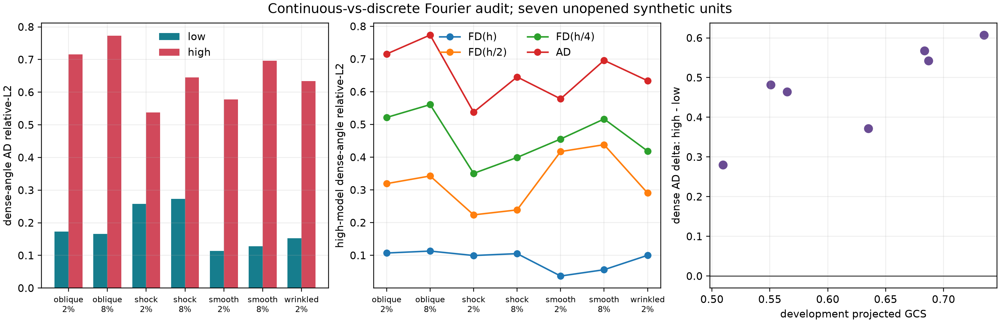
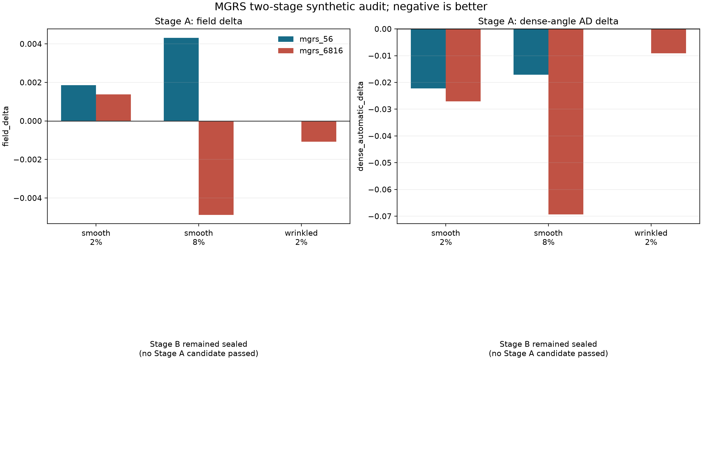
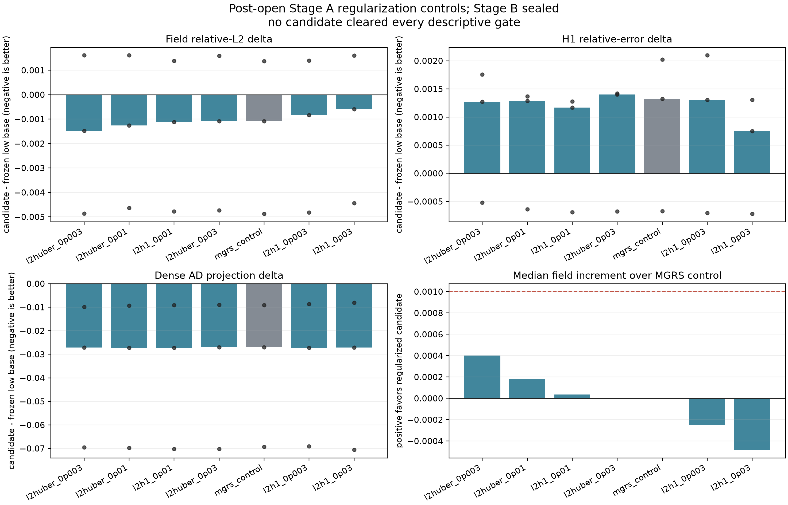
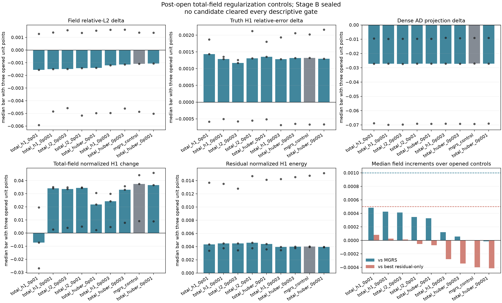
读：神经场怎样同时表示折射率和梯度，AD/数值微分一致性、随机 ray sampling、九视角数值验证与实验 fiber bundle 各承担什么证据。
边界：它已经包含 AD/ND consistency；不能把“混合两个导数”当新意。
读：Fourier/hash、automatic/discrete/hybrid gradient、jitter、mask 与 hierarchical sampling。
边界：论文已报告 Fourier + AD 放大梯度噪声，固定 hybrid、换 hash、加 jitter 均不足以作为独立创新。
读：ReNO 的 operator aliasing 与 representation equivalence；mip-NeRF 的 sampling footprint 与积分位置编码。
提取：新意必须落在 BOST 梯度投影、可观察门和真实 optical footprint，而不是泛称“首次抗混叠”。
Day 1 手推 sinc 传递函数；Day 2 用 PyTorch 对照 AD/FD；Day 3 画 BOST forward；Day 4 复现连续审计；Day 5 用 SVD 理解零空间；Day 6 对读两篇神经折射率场；Day 7 写带回退和独立 split 的算法卡。
打开逐日验收先在 smooth/wrinkled 同 family 内扩 phantom seed、噪声、角度缺失和 ray sampling，比较 L2/Huber 固定非增门与低容量可拒答 gate。必须按 seed/geometry 分组留一，不确定精确回退；Stage B 仍不打开。
看混淆矩阵与扩样协议需要确认 AD/ND 的真实用法与步长、ray sampling 密度、held-out camera、straight/curved/finite-aperture 层级，以及最终应优化 field、temperature、displacement 还是 PIV velocity compensation。
复制五问不能说已发明安全能量 gate、优于 NeRIF/FNO、解决真实 BOST、证明跨形态/跨分辨率泛化或完成论文。当前只有机制 PASS、三轮算法/经典对照 NO-GO 和一个事后扩样假设。
查看最新机器可读边界四类网络、三个模型种子的 12 个 checkpoint 在 reconstruction 评分前保存为无 pickle NPZ，并锁定权重语义、训练分区、运行时与 FNO metadata。正式 runner 只加载固定字节，不含 optimizer、backward 或重训练。learned proposal 的现有输入先花 13F/13Aᵀ 运行 CGLS-12、terminal residual 与 grouped lift；之后才从非零初值运行 CGLS。结果出现稳定但不能发表成胜利的张力：JACRU/CNN 的 field 与 H1 明显优于同预算经典重建，data residual 却比 pair-rounded CGLS 大一个数量级，88 个 development decision cells 没有一个全门通过。
k=2 mean field gain；H1 gain 为 +40.888%1.073e-13。k>0 候选总计 (14+k)F/(13+k)Aᵀ；componentwise、pair-rounded CGLS 和 Huber-PDHG 均按预注册预算重算。Pker xk=Pker x0 的离散线性代数；field gain 可能来自 kernel、near-null、row-space prior 或训练偏置。k=6 时，JACRU warm CGLS 相对 CGNE 仍有约 +3.40% field、+3.71% H1，measured residual ratio 约 0.56；但这不足以击败总预算基线。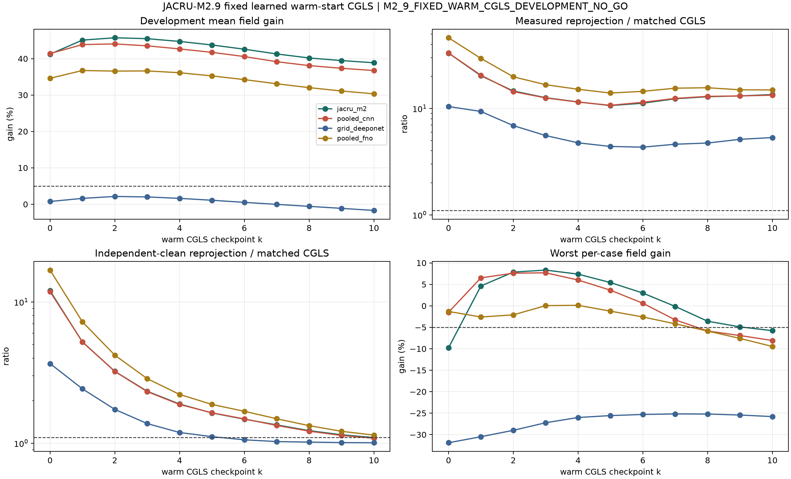
表格可横向滚动
| Architecture | field 最佳 k | Field / H1 gain | Measured / clean ratio | Harm / worst | 判决 |
|---|---|---|---|---|---|
| JACRU-M2 | 2 | +45.734% / +40.888% | 14.5965 / 3.2276 | 0% / +7.853% | reprojection NO-GO |
| pooled CNN | 2 | +44.045% / +39.427% | 14.4060 / 3.2206 | 0% / +7.598% | reprojection NO-GO |
| grid DeepONet | 2 | +2.143% / -11.971% | 6.8996 / 1.7343 | 16.667% / -29.999% | 六门失败 |
| pooled FNO | 1 | +36.743% / +34.628% | 29.5586 / 7.2277 | 5.556% / -2.606% | reprojection + harm NO-GO |
不再把网络输出当非零初值后重启 CGLS-23；那样即使 correction 为零，也会因丢失 Krylov 状态而与 CGLS-24 混入 solver-shell 差异。新壳只让网络扰动第一条 Aᵀy 搜索方向，第一步精确线搜索，之后 23 步在 measurement space 全重正交：
先用小型 geometry-conditioned CNN/DeepONet/FNO 比较 Aᵀy 与 zero-start CGLS-24。若 field、H1、measured/clean、harm、worst 任一过不了冻结门，立即关闭。
只在 opened synthetic evaluator 比较 full warm、exact-null-erased、row-space-erased 与 zero-start。没有 full-over-null-erased 稳定差异，就禁止把 gain 归因于 kernel prior。
固定 rig 的 randomized SVD/Lanczos setup 必须报告一次性成本、每帧成本与 break-even 帧数；换 rig 不得免费沿用旧 basis。
只用 residual、geometry、noise floor 与 held-out rays 决定接受或回退。若必须看 truth 才能挑出好 case，就没有可部署选择器。
M2.9 已经说明“大模型先花 13 对调用猜完整场，再用很少步数追数据”不成立。LGWO-A24 把问题缩到一个更硬、也更容易证伪的命题：只用 A 侧 raw displacement、ray/camera geometry 和一次 pooled Aᵀy，小网络能否给第一搜索方向一个有用但受限的 approximate-null 偏转；若不能，就在同一 solver 壳内精确退回 CGLS-24。O1 只证明表示余量；L1 进一步固定独立 A/B geometry seeds、三类 morphology、三模型种子、cluster-level 统计和 7/8 正簇尾部门。B 永远不进入 proposal，route 只有所有方法冻结后才能一次打开。
协议 1.3 将 full、fixed_direction、g_only、no_raw_observation、no_geometry 五个精确注册臂放在同一 24F/24Aᵀ solver shell 内，并固定 fit-only manifest、正式 loss、三类缓存、归一化/校准包络、tensor-only checkpoint 与链式验证。它目前只是经验证的训练前合同：尚未获得 scientific fit 授权，没有生成科学 case，也没有执行 optimizer step。
12³ 网格去掉外边界后的 10³ 规范支撑；全局 z-y-x 次序，禁止按个案重映射A:192F/192Aᵀ, B:8F 和按 3-case 展开的 case-equivalent 口径 A:576F/576Aᵀ, B:24F。新增真实 autograd 探针测得 backward 为 552 A-F + 576 A-Aᵀ + 24 B-Aᵀ 等价调用；它不再靠对称数字猜测。step = epoch×8；独立 chain validator 必须从明确的 ledger root 读取 epoch_01..30.json，复算全部 11,760 条事件、双成本与 240 个逻辑 steps，并拒绝缺失、额外、符号链接、hash 或事件级伪造。这不是 LGWO-L1 训练结果。PSU-C1 在已经打开的公开 PSU 九视角几何与解析反应场上，比较 scale、三 seed random、train-fitted fixed、linear observable、truth-only oracle 和同预算 inverse-Sobolev。审计修订没有改方法、split、随机种子、半径或门；独立 validator 重算全部指标后确认 NO_GO_FIRST_DIRECTION_HEADROOM_ABSENT_POSTOPEN。
Aᵀr 和少量 Ritz/Lanczos 标量；只输出受限 lambda_k、固定谱基凸组合或 stop/continue，并保留 residual envelope 与 deterministic fallback。先用 ridge/logistic 证明信号，再考虑小网络。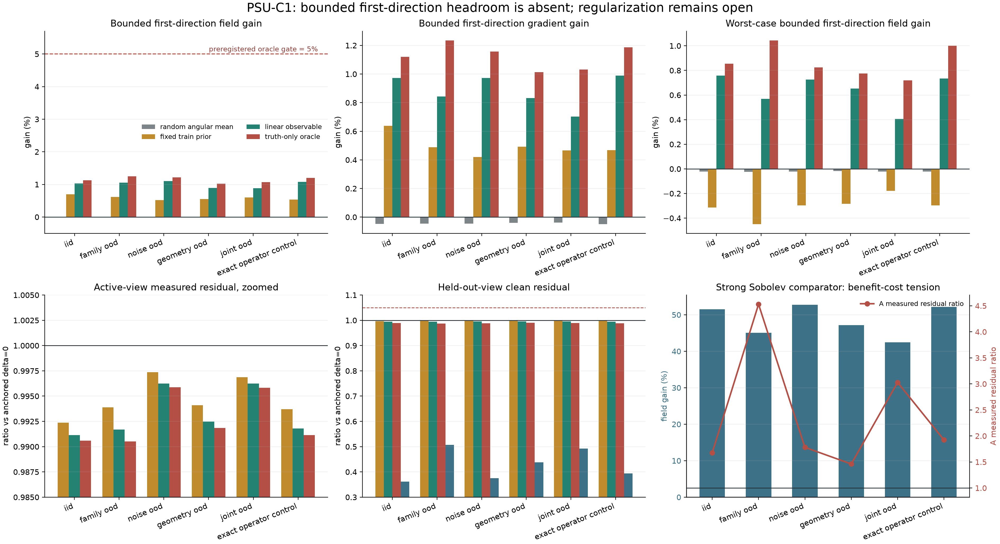
表格可横向滚动
| 方法 | IID field gain | family-OOD field gain | A measured ratio | held-out B ratio | 判决 |
|---|---|---|---|---|---|
| random angular mean | -0.0093% | -0.0113% | 约 1 | 约 1 | 无随机假收益 |
| train-fitted fixed | +0.6987% | +0.6149% | 0.9924 / 0.9939 | 0.9966 / 0.9973 | 小信号 |
| linear observable | +1.0302% | +1.0542% | 0.9912 / 0.9917 | 0.9947 / 0.9949 | 均值与 margin 门失败 |
| truth-only oracle | +1.1288% | +1.2465% | 0.9906 / 0.9905 | 0.9888 / 0.9876 | 5% headroom 门失败 |
| inverse-Sobolev5 | +51.5234% | +45.0628% | 1.6752 / 4.5303 | 0.3619 / 0.5073 | 转向 regularization/stopping 机制 |
R0 没有训练网络。它先把零修正 fully reorthogonalized CGLS 的每个 checkpoint 保存下来，用 truth-only oracle 检查 instance-specific stopping 是否有足够 headroom 与标签多样性。validation 选择 k=24；IID 与 family-OOD 的逐 case field oracle 也全部选择末步，所以 R1 observable stopping screen 和 neural model 都没有获得授权。独立的 post-open 机制分析随后发现：field relative-L2 随迭代下降，gradient relative-L2 却在两个主分区的全部 48 条轨迹上持续上升。
k=24；没有 instance-specific 早停标签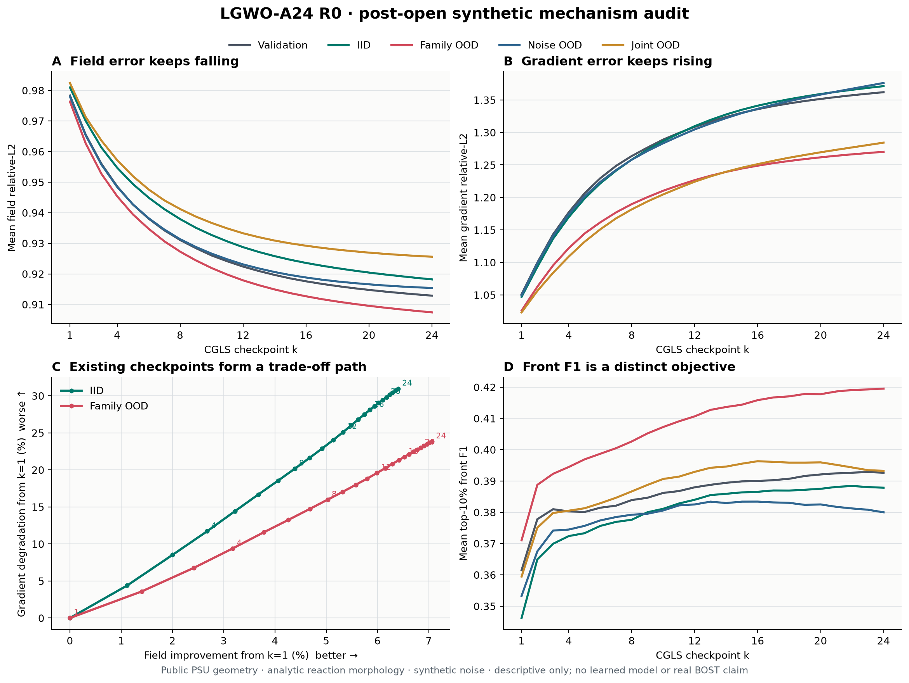
表格可横向滚动
| split | field 最优 k | gradient 最优 k | field k1→k24 | gradient k1→k24 | front F1 k1→k24 | front mean 最优 k |
|---|---|---|---|---|---|---|
| IID | 24 | 1 | +6.405% | 恶化 30.961% | +14.844% | 22 |
| family-OOD | 24 | 1 | +7.065% | 恶化 23.803% | +13.822% | 24 |
| noise-OOD | 24 | 1 | +6.407% | 恶化 31.158% | +9.775% | 16 |
| geometry-OOD | 24 | 1 | +5.329% | 恶化 27.205% | +8.864% | 17 |
| joint-OOD | 24 | 1 | +5.787% | 恶化 25.541% | +10.340% | 16 |
| exact-operator control | 24 | 1 | +6.546% | 恶化 28.440% | +10.639% | 24 |
R2-A 在首次正式运行前冻结了 H1 参数、同预算 CGLS 对照、四个分区、cluster-level 统计、最差 case/cluster、active residual、held-out B 和成本账本。候选只是 lambda_H1=1e-3, lambda_L2=0, k20 的经典 H1；它的作用是先证明改变正则化路径真的能跳出 R0 的 field-gradient 交换曲线，并为后续 TV/Huber/hybrid/学习方法立一个更强的对手。
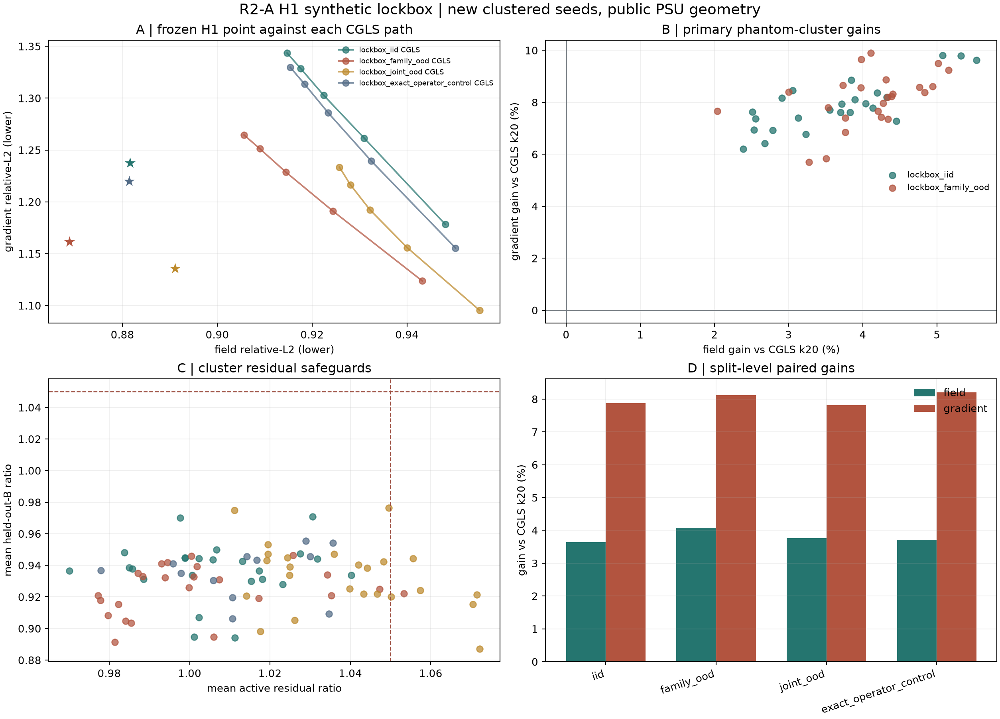
表格可横向滚动
| split | mean field gain | mean gradient gain | worst-case field / gradient | active mean / worst | held-out mean / worst |
|---|---|---|---|---|---|
| IID | +3.6412% | +7.8708% | +1.3181% / +5.0631% | 1.0065 / 1.0886 | 0.9368 / 0.9851 |
| family-OOD | +4.0791% | +8.1137% | +1.8017% / +4.6598% | 1.0023 / 1.0898 | 0.9243 / 0.9813 |
| joint-OOD | +3.7626% | +7.8189% | +1.5587% / +2.5232% | 1.0387 / 1.1380 | 0.9327 / 0.9871 |
| exact-operator control | +3.7152% | +8.2085% | +1.7050% / +5.6476% | 1.0133 / 1.0606 | 0.9352 / 0.9732 |
旧 scalar-PDHG 已经证明：只扫正则权重解决不了 block conditioning。R2-B0 因此先不重建场，而是给每个相机 mask 的加权物理算子建立严格谱范数证书。新构造直接使用 C = W|M||D|P 的行列和；由 |WMDP| ≤ C 可得 ||WA||² ≤ ||C||₁||C||∞。它保留旧 factorized 证书作审计，同时在 CPU float64 累计，兼容 CPU/MPS、流式和 H1 使用的单块算子。
new_algorithm=false / reconstruction_success=false / breakthrough=false。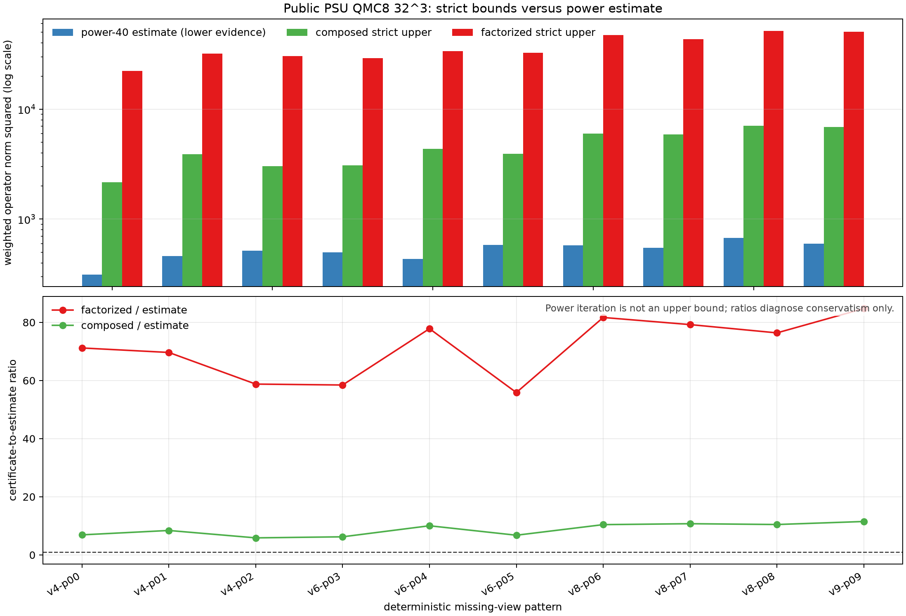
对 B=WA 和非负比较矩阵 C=W|M||D|P，新实现逐 chunk 计算 r=C1 与 q=Cᵀr。加权 Cauchy--Schwarz 给出 ||Bx||²≤Σⱼqⱼxⱼ²，因而 diag(q)-BᵀB 半正定。这不仅是一个更紧的全局上界，还保留了哪些体素被当前离散数据项强或弱耦合的空间结构。
max(q) / 冻结 power-40 estimate；均值 5.922×max(q)；均值再收紧 1.461×q>0 体素比例；这是当前离散合同，不是物理真值覆盖q 坐标，必须显式记账q 的 p95/p05，显示强空间非均匀性max(q) 比旧 composed 界再紧约 1.46倍，却仍比 power estimate 大约 5.92倍。q 不等于零流场：它只说明当前 256 rays/view、QMC8、straight-ray 离散数据项没有耦合该坐标。new_algorithm=false / reconstruction_success=false / breakthrough=false。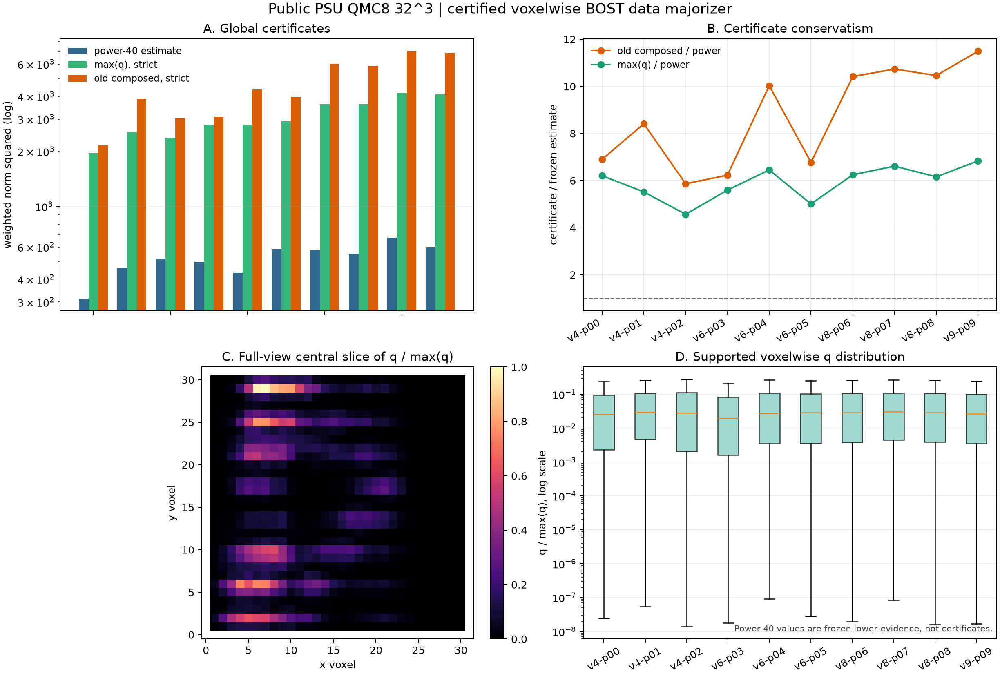
这是 R2-B 之后第一次真正把严格证书接进求解器。新实现构造 q_G=|GP|ᵀ(|GP|1)，再组合 q_total=σ_Aq_A+σ_Gq_G，逐体素用 τ_j=0.99/q_total,j。显式小矩阵已验证 diag(q_G)-G_PᵀG_P 和堆叠 BOST/gradient Schur 半正定；求解保持每轮一次物理 forward 和一次 adjoint。但数学稳定只是入场券，不等于有限预算下的 field/gradient 质量更好。
q_A>0 比例；其余不能被当成零真值q_G 是先验耦合：它让未被数据项直接触达的坐标也有局部质量，但没有凭空增加相机信息。full_diagonal_candidate=false / algorithm_success=false / real_reconstruction=false / paper_success=false / breakthrough=false。β=0.25 仍是 field +0.0351%、gradient -0.1879%。见下方 R2-C2，该支线已关闭。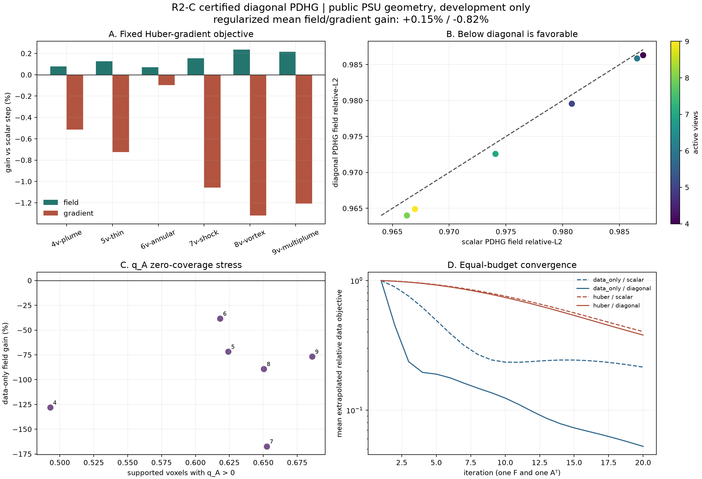
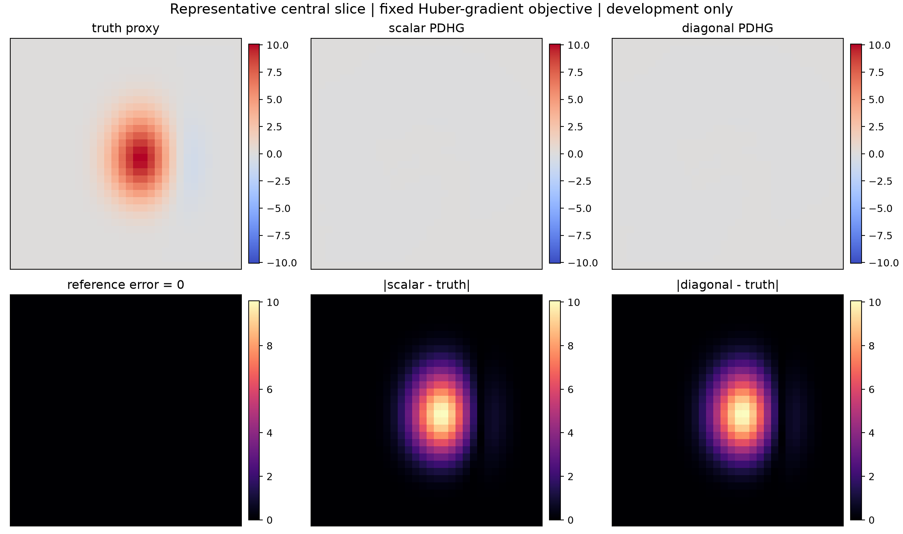
因为 diag(q_scalar P)-KᵀΣK 和 diag(q_diagonal)-KᵀΣK 都半正定，它们的标量凸组合仍半正定。β=0 是标量保底，β=1 是本轮失败的完整对角端。
β={0,.25,.5,.75,1} 已在同一已打开开发集完整运行。新证书用一个全局标量 β 在 scalar 与 full diagonal 两个安全端点间做凸组合。五个点都通过显式 Schur PSD 与内容哈希检查；β=0 对独立 scalar solver 的最大 field 差仅 4.93e-8。但从 0 到 1，mean field gain 从 0 严格增至 +0.1469%，mean gradient gain 却严格降至 -0.8203%。三个预写可选内点全部失败，因此不开 fresh。
β=0.25 的 mean field gainβ=0.25 的 mean gradient gain；6/6 伤害β=0.25 测量残差比；拟合更快不等于梯度更准720F/720Aᵀ solve + 36 evaluator F，每条预算相同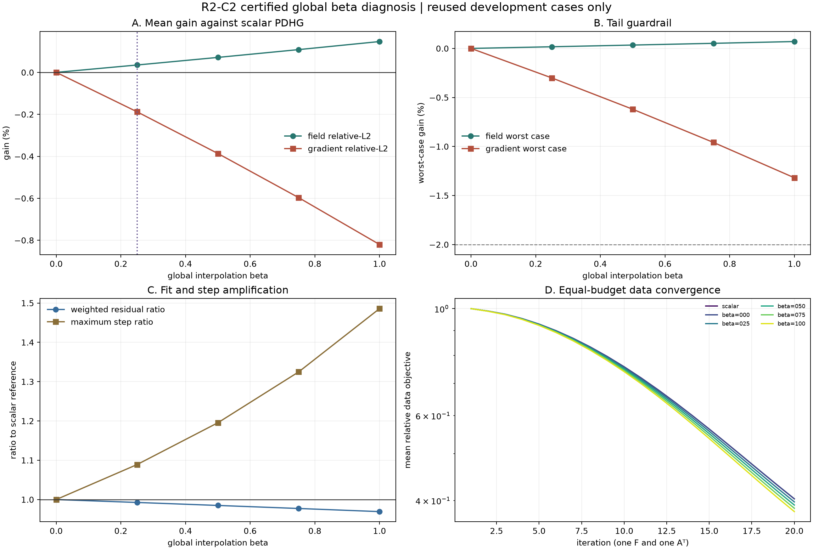
global_beta_candidate=false / fresh_validation_authorized=false / learned_beta_label=false / breakthrough=false。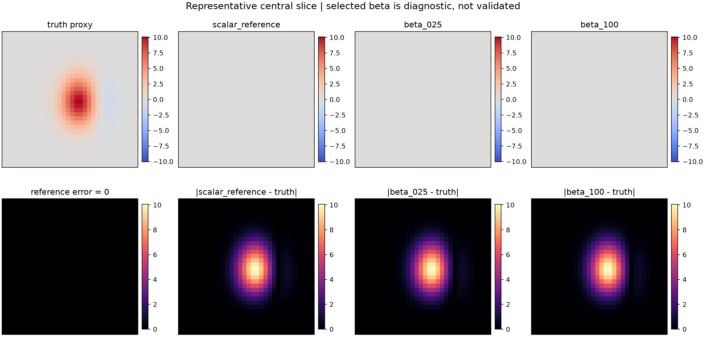
R2-D1 · H1-to-edge-preserving safeguarded path 已另行冻结并完成 19+1 / 18+2 / 16+4 预算比较。edge 相对纯数据控制有正信号，但所有非零候选仍输给 H1-20，因此这段保留为当时的预注册逻辑，正式判决以下一节为准。
R2-D1 比较 19+1、18+2、16+4 三种 H1/修正预算，每种固定 ρ=0,1,2,4。非零候选必须同时胜过 H1-20 与 matched ρ=0，并过 field、gradient、front、held-out、residual、伴随和调用门。选择行 19+1, ρ=4 对纯数据控制确有 +0.0676% field / +0.3959% gradient，但相对真正对手 H1-20 仍是 -0.4335% / -0.1233%，加权 residual 比为 1.0378，所以关闭“替换 H1 末步”支线。
denominator_floor 与冻结 H1 不同，并缺少 edge-vs-data-control、伴随、front 和 held-out 门。该目录已有 INVALID_PROTOCOL_NOTICE，禁止把 v1 叫作成功或 NO-GO。R2-D1 明确披露已观察行并另行冻结，才是本节判决来源。0.881 / 1.130，代表切片接近低幅模糊场；truth 与 observation 又使用同一 QMC8 forward，没有曲光线、几何失配、位移估计误差或真实相关噪声。因此这里是 inverse-crime 型弱重建机制诊断。9 个 edge 组合虽都在 6/6 case 上胜 matched 控制，且 Huber 势能下降约 0.82%–6.01%，但只有 6 个已见 case、没有统计确认；held-out 汇总实际为 n=5。ρ=0、调用账本、5/6 held-out、front、伴随和 168 个修正步，NO-GO 不变。runner 当时却漏列一个 imported helper；提交 blob 与当前文件哈希一致，只能事后闭合，不能证明执行瞬间没有短暂未提交改动。准确状态为 PASS_WITH_POST_RUN_DEPENDENCY_CLOSURE，下一次实验必须运行前绑定完整 import closure。ρ=0 的 gradient gain；edge 有局部信号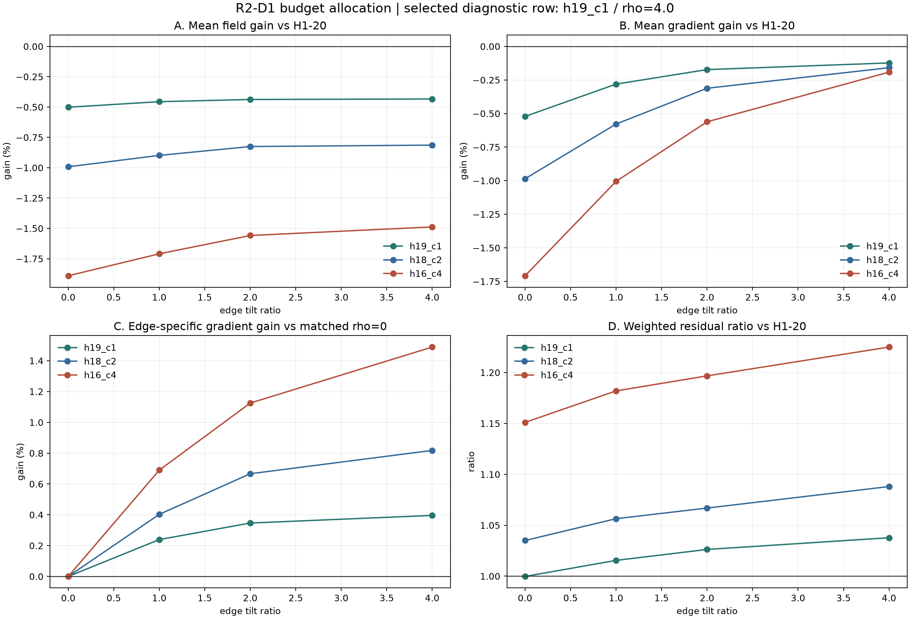
replacement_path=false / fresh_validation_authorized=false / learned_edge_label=false / breakthrough=false。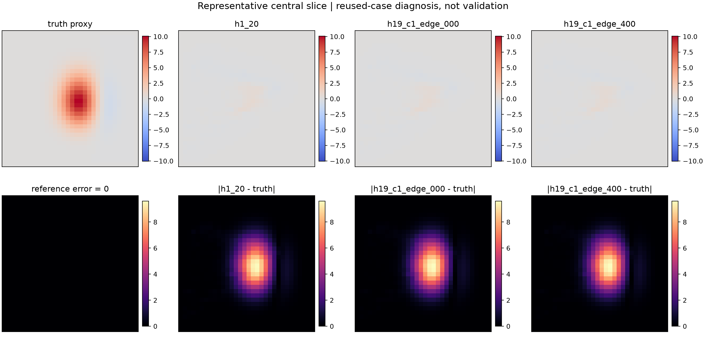
当时预注册的候选已经完成：完整运行 H1-20，缓存搜索方向 P 与投影 AwP，再以 0F/0Aᵀ 在 20 维系数空间重优化。缓存实现确实与冻结 H1 对齐，但四个固定 Huber 候选和 residual-safe truth oracle 均失败；正式数字见下一节。
R2-E0 完整运行冻结 H1-20，缓存场方向 P 与投影 AwP，随后只在 20 个系数上比较数据最小二乘、简单插值、四个固定 Huber balance ratio 和两个 truth-only oracle。缓存路径与 reference 对齐，所有 reduced 方法均为 0F/0Aᵀ；但 0/4 固定 Huber 候选具备部署资格，residual-safe truth oracle 也远低于预写 5% field / 5% gradient 门。
invalid_attempt.json。v3 统一 CPU-double 边界并通过三条 MPS 回归后才产生本节 72 行有效结果；无效运行不进入均值。VALIDATION_PASS_POST_RUN_INTERNAL_CONSISTENCY_ONLY：验证器在正式运行后实现，只证明已保存证据自洽，不是运行前预注册约束，也不证明真实重建、泛化、算法或论文成功。-1.6445%表格可横向滚动
| 角色 | mean field gain | mean gradient gain | weighted residual / H1 | accepted | 允许结论 |
|---|---|---|---|---|---|
| H1-20 cached | 0 | 0 | 1.0000 | 6/6 | 冻结基线与缓存等价控制 |
| data exact | +0.1184% | -1.6445% | 0.8951 | 6/6 | 数据拟合与梯度质量冲突 |
| Huber ratio 2.0 | +0.000002% | 0.0000% | 1.0000 | 4/6 | truth-free 诊断对象；不合格 |
| truth oracle safe | +0.0040% | +0.1647% | 1.0200 | evaluator-only | 上界不过门；不可部署 |
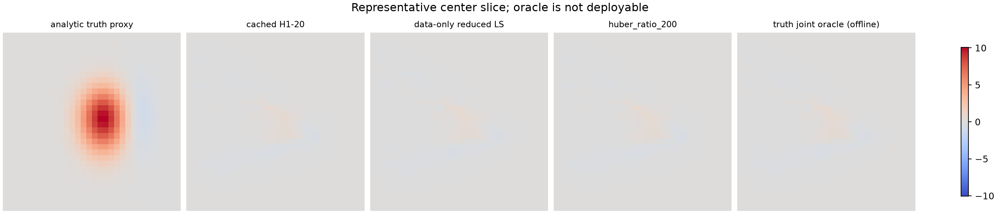
1.4e-10，不是可学习的质量信号。+14.52% gradient，却付出 10.23x residual；压回 1.02 后收益几乎消失。new_algorithm=false / fresh=false / real_bost=false / generalization=false / paper_success=false / breakthrough=false。Aᵀr，产生原 H1 span 外方向。第一阶段仍只做 representation oracle。扩展 span 若没有明显 joint headroom，就停止；有 headroom 且部署可见特征能预测，才进入学习。
FCG-NO 已把 neural operator 用作 flexible CG 非线性预条件器；hybrid projection with recycling 已覆盖 Krylov 回收；Neural Krylov 已学习不变子空间。我们的潜在差异只能落在 BOST 几何/噪声/曲光线失配、可核验 data envelope、拒答和跨 rig 尾部验证上。
A/Aᵀ 或 JVP/VJP、标定、主痛点、强基线、数据与 split；否则只继续公开 PSU 机制实验，不替实验室造结论。R2-F0 只回答一个很窄的问题：在六个已经打开的 synthetic development cases 上，部署时可见的 R=Awᵀr、Huber 先验方向 H 和 edge-gated 方向 E，经 H1 增广度量 G=[Aw;√λD] 投影出旧 P20 span 后，是否仍能提供数值可分辨、非近零空间的联合 field/gradient 表示余量。这里尚无系数预测器；所有最优系数都读取 synthetic truth，因此只能是离线表示上界。
(F,Aᵀ)、truth firewall、H1-next 恒等正控制、三档 rank floor、独立 NumPy 物理核复算和原子输出。定向软件套件已通过，但第二轮独立红队尚未签字，且尚未冻结 source closure 或运行正式包；因此配置保持 HOLD_R2F0_PROTOCOL_NOT_READY_TO_FREEZE，结果目录必须为空。Q=-DᵀDx 只作归因控制R,H,E,RH,RE,EH,RHE 全矩形报告，不从已见 truth 挑部署赢家表格可横向滚动
| 层级 | 比较对象 | truth 用途 | 物理调用语义 | 能回答什么 |
|---|---|---|---|---|
| C0 | H1-20 native | 只评估 | 20F/20Aᵀ | 共同起点 |
| C1 | 旧 P20 safe joint oracle | 重配系数 | 20F/20Aᵀ；reduced 0/0 | 仅重配旧方向的上界 |
| C2 | H1-(20+k) native | 只评估 | (20+k)F/(20+k)Aᵀ | 强经典延续基线 |
| C3 | H1-(20+k) safe span oracle | 重配系数 | 与 C2 相同 span；reduced 0/0 | 候选必须击败的表示上界 |
| C4 | P20 + R/H/E unrestricted oracle | 重配系数 | 逐 family 保存独立 (F,Aᵀ) | 只显示理论方向，不能部署 |
| C5 | P20 + R/H/E residual+field-safe oracle | 重配系数与 ray 终点 | 同 C4；另记 evaluator/validation | 唯一可进入表示门的候选，仍非算法 |
5%，median 至少 3%，worst 不低于 -1%。3 个百分点；这不是“再相对除一次”的百分比。逐 case residual、field trust、held-out 和 harm count 均不过界。0.995；三档 floor 必须各自重建投影方向、物理 endpoint 与 oracle，方向排列也必须保持 endpoint 与指标不变。REPRESENTATION_SIGNAL_ONLY_NO_AUTHORIZATION，下一轮仍需重新冻结 learner、fresh 与真实数据协议。prior-conditioned Krylov、flexible nonlinear preconditioning、subspace recycling 与 learned Krylov basis 都有明确先例；NeRIF 也已经把隐式神经场用于 BOST 三维重建。R2-F0 的可讨论价值只能是一个更窄的 BOST-specific 审计：方向不看 truth、系数上界严格匹配、数据/场双安全、成本逐项可核验。只有后续固定部署规则在未见 rig 与真实实验接口上保持收益，才可能发展成方法贡献。
A/Aᵀ、几何标定、主要失败模式、认可的强基线、数据字段与 split。没有这些信息时，本轮只形成公开 PSU inverse-crime 机制证据，不替实验室推断真实困难。RHE 必须超过三个单方向与三个双方向，共六个真子空间；归因增益必须达到冻结的 1%，不是只要大于零。rank([P20,Q])-rank(P20)，并在三档 floor 上检查 passing-family 集合。validator 不导入 PyTorch runner，而是用标准库与 NumPy 从封包内的三线性采样索引、权重、投影坐标和 ray scale 重建公开 PSU 离散 A 与 Aᵀ；它逐 case 复算 40 个主投影、三档 floor 的 24 个投影、伴随探针及自己的内积恒等式，并对篡改 fail-closed。
这两个入口把学习与论文写作接到同一条证据链。论文工作稿预先锁定研究问题、预算匹配基线、逐 rig 尾部、消融、统计与失败报告；14 天路线从 Ax=y、伴随和 CGLS 开始，逐步走到 PSU matrix-free 复现、N5-D5 接口沟通与一次可审核的实验计划。它们不会把空白结果格填成成功，也不会因为已有工程测试很多就催促租 GPU。
新增的算子基础小实验用一维导数观测代理，把 A/Aᵀ、常数 gauge、CGLS 半收敛、operator shift 与最小几何条件化放进一次可复跑流程。它不训练 DeepONet/FNO，也不模拟曲光线或真实反应流；目的只是让 Day 2--6 的基础概念从公式变成可检查证据。
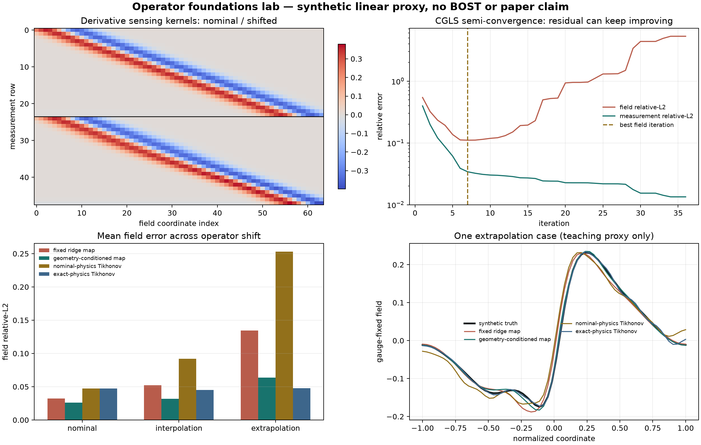
1,536 增至 3,072。这是 information/capacity ablation，不是同容量架构排名。g=0/0.02/0.06 的 conditioned-vs-fixed mean field gain 为 19.68%/39.27%/52.47%；只有一个种子、一个 generator 和一个标量外推点。0.04766 仍低于 conditioned ridge 的 0.06382；正确 forward 仍是不能跳过的教师上界。EDUCATIONAL_LAB_COMPLETE_NO_SCIENTIFIC_AUTHORIZATION。在师兄确认真实 callable、residual 层级、JVP/VJP、几何标定、split 与基线前，不把这个小实验放大成网络训练或论文结果。新增的 CPU 小实验第一次把生成观测的真实 ray operator 与重建收到的误报 operator 分开：6 个 synthetic rig、每 rig 6 台相机、3 种解析形态、每档 18 个场。所有方法共享同一观测、Tikhonov solver 与正则强度；LOCO 只看 noisy held-out-camera measurement，不看体真值或 clean observation。
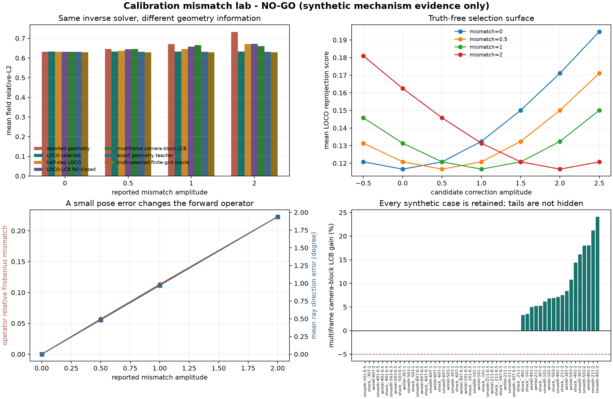
JTJ。先比较便宜的有界权重，再决定是否值得训练小网络。MECHANISM_SCREEN_COMPLETE_NO_ALGORITHM_OR_REAL_DATA_CLAIM。不移动阈值追 PASS，不把 5.66%/13.27% 写成真实重建、泛化或论文结果。在冻结的 calibration_mismatch_v2 逐相机 ledger 上，主候选每次留下 1 个目标 synthetic rig，只用其余 5 个 rig 学六个闭式相机权重。权重衡量该相机的候选残差改善是否与其余相机一致，并限制在 [0.5, 2]、最大最小比不超过 4。deployment 阶段只打开 camera-score CSV，不解析或携带上游 report/evaluator；决策冻结后才加载体真值指标。
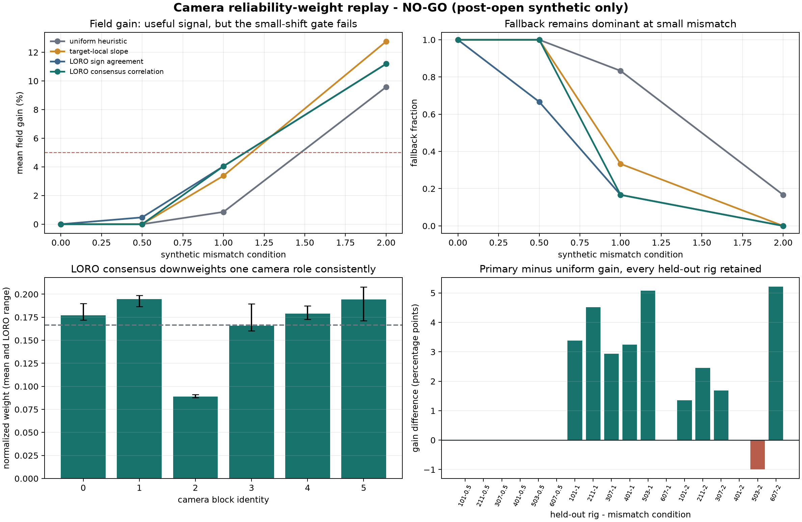
q_rel 可靠性：只读独立 sentinel 帧的 whitened residual 与噪声尺度；先击败 inverse-variance、MAD/Huber 和本轮 consensus baseline。q_cal 标定可观测性：从 geometry JVP/VJP、尺度化 JTJ 谱、近零方向与参数耦合构造；没有导数接口时不得用残差权重冒名。q_field 场信息量：用 view-conditioned normal-operator probe、边际谱/秩增益判断一个视角是否约束三维场 near-null mode。2.015 只是描述性 t5-style 常数，没有置信覆盖、安全证书或显著性含义。POSTOPEN_CAMERA_RELIABILITY_WEIGHT_REPLAY_NO_GO。LORO 不能把已打开数据变回 fresh；中、大失配的均值线索不能写成新算法、泛化或论文结果。uniform 回放与 v2 的 24 个 rig-severity 决策逐项一致。主候选把相机 2 的平均权重压到约 0.0889，其余约 0.166--0.195，并改变了 1/2 档的准入功效；所以“相机证据不应总是等权”是可复验线索。但 0.5 档仍全退，继续在这 6 个 rig 上调相关系数或换小网络只会扩大选择偏差。
至少需要独立 select/sentinel/target 相机帧、连续 off-grid 且方向未知的位姿误差、相机身份置换、真实 JVP/VJP 与不少于 30 个 sealed audit rig/session。结果须同时报告 field-L2、front/gradient、逐 rig 尾部、harm rate、Schur/Jacobian violation、调用数、wall time 和内存。
JTJ 不是可辨识性对局部模型 y=A(eta)x+noise，本轮同时计算 known-field raw Gram、消去自由三维场后的 data-only profile Gram，以及 ridge 先验下的 regularized profile curvature。全相机代理算子为 300 x 1000 且满行秩，因此未知自由场可吸收全部五个几何方向的局部数据变化。
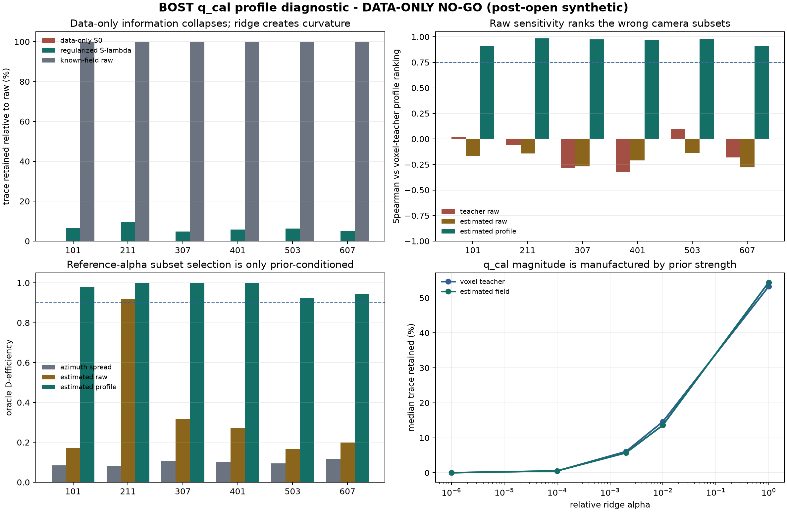
S_lambda 的正曲率来自 ridge 先验；alpha 从 1e-6 到 1 时，teacher 的 median trace retention 从 0.0055% 增到 53.26%。x_hat 用了 6 相机 pilot，因此只评价“下一次保留 3 台”，不声称 subset-only 当帧重建可行。q_cal。POSTOPEN_QCAL_PROFILE_DATA_ONLY_NO_GO。参考先验排序门过线，不能把 data-only rank 0 改写成几何可观测或自动标定成功。用 4D 张量/时间基让多帧共享低维场 tangent，不再给每帧 1000 个自由 voxel。首先检查降维后 data-only S0 的最小特征值是否从零抬起；这一机制过门后，才让 NeRIF/DeepONet/FNO 学低维 basis、PSD 更正或有界阻尼。
需要师兄确认 geometry JVP/VJP、straight/curved residual 层级、真实场参数化、多帧共享结构、噪声协方差、calibration target/sentinel、认可基线和 rig/session split。没有这些事实前，不替实验室发明真实结论。
这一轮把上面的单帧问题真正扩展成连续六帧：y_t=A(eta)x_t。我们不把“低秩”当答案，而是逐一 profile 每帧自由场、未知双因子低秩、固定时间基、共享静态场、冻结 PCA 基、已知输运、输运加新生项和逐帧自由 innovation。v1 的 deployable NO-GO 保留；独立审计发现其 teacher 场作用域错误后，v2 用同一随机案例重新计算，并加入广义信息谱、SNR sweep、卡方 NIS 和 95% 置信半径拒答。
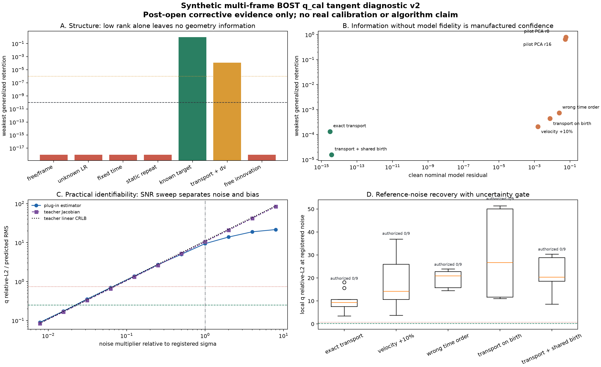
POSTOPEN_TEMPORAL_TANGENT_NO_GO。这是机制和安全门的真实进展，不是自动标定、重建、算子学习、泛化或论文成功。| 噪声倍率 | plugin q 误差中位 | teacher CRLB | 授权 |
|---|---|---|---|
| 0 | 0.0215 | 0 | 0/9；无噪声不作统计更新 |
| 1/128 | 0.0895 | 0.0863 | 7/9 |
| 1/64 | 0.174 | 0.173 | 0/9；95% 半径仍过宽 |
| 1/16 | 0.698 | 0.691 | 0/9 |
| 1 | 9.41 | 11.05 | 0/9 |
若只靠 iid 重复把标准误差压低 128 倍，量级上需要约 128^2=16384 倍独立信息。更值得研究的是 target/sentinel、外部 PIV/速度约束、主动视角设计或真正可信的动力学，而不是简单把时间窗拉长。
(I-P_B)C 才是剩余几何信息。G_raw^-1/2 S G_raw^-1/2，区分 rank、最弱方向和 trace。共享几何的连续帧数与 timestamp；curved/straight callable 和 geometry JVP/VJP；真实 yaw/pitch/shift 容差；flow-off/reference covariance 与 temporal drift；是否有 calibration target/PIV/front sentinel；TDBOST rank/time-window 及 birth/extinction 失败案例。没有这些量，任何“大模型更好”都只是封闭 synthetic 体系里的故事。
v2 的低噪声窗口只是固定噪声方向的 SNR 地图。本轮在 3 个 rig、9 个固定方向、6 个 q 幅度和 5 个噪声档上，每个 cell 生成 500 个独立高斯复本；另外对 one-step 与稠密 affine variable projection 做 864 个配对 trial。数值链路通过，但三道科学门都没有全过。
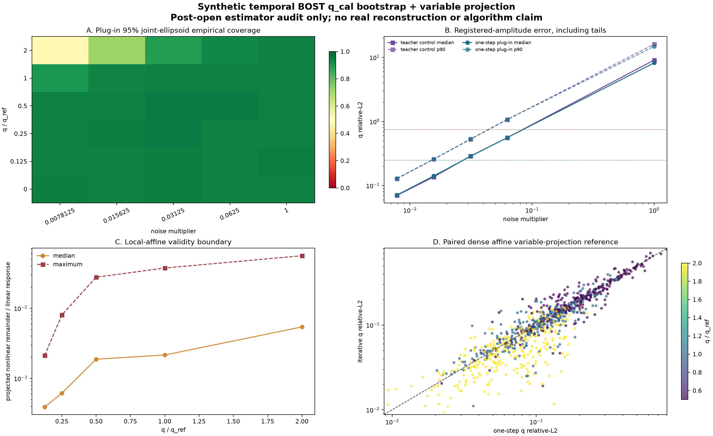
q=2 q_ref、最低噪声时 teacher 平均 coverage 约 94.9%，plug-in 却只有 48.0%，两个 cell 为 0。x_hat，plug-in covariance 却没有计入场误差、同数据相关和 Jacobian 变化。这是后验机制解释，必须用新方向验证。POSTOPEN_SYNTHETIC_ESTIMATOR_NO_GO。这不是 variable projection 新算法，也不是真实标定、三维/4D 重建或论文成功。| 门 | 实际 | 要求 | 判决 |
|---|---|---|---|
| teacher 主格 coverage | 8/9 cell | 9/9 | FAIL |
| plug-in 主格 coverage | 5/9 cell | 9/9 | FAIL |
| iterative median q 降幅 | 8.91% | >=10% | FAIL |
| iterative p90 / maximum | 0.2715 / 0.7768 | 均不劣于 0.2729 / 0.8091 | PASS |
| objective monotone | 864/864 | >=95% | PASS |
| trust-bound hit | 86.0% | <=5% | FAIL |
本轮 270,000 条已经打开，只能用来冻结下一估计器。新 audit 至少要加五个 mode 的正/负单轴和每个 rig 最弱广义方向；更重要的是让何远哲师兄确认真实 callable、straight/curved residual、JVP/VJP、timestamp、anchor/sentinel、TDBOST 失败例和组内基线。
这轮把场与几何联合估计的三个问题拆开：点估计中心、协方差形状、校准尺度。3 个已打开 synthetic rig 的 21 个 cell 各生成 500 个新噪声复本，前后各 250 个用于校准与内部评估。它是同 rig 的 development forensic，不是 fresh、真实 BOST 或算法授权。
POSTOPEN_DEVELOPMENT_FORENSICS_NO_GOexact Godambe 覆盖率为 97.90%，但其 95% 区间是 97.48%--98.27%，完全高于目标 95%。覆盖可以靠放大区间获得，所以过度覆盖也必须判 FAIL。q_ref；宽度门通过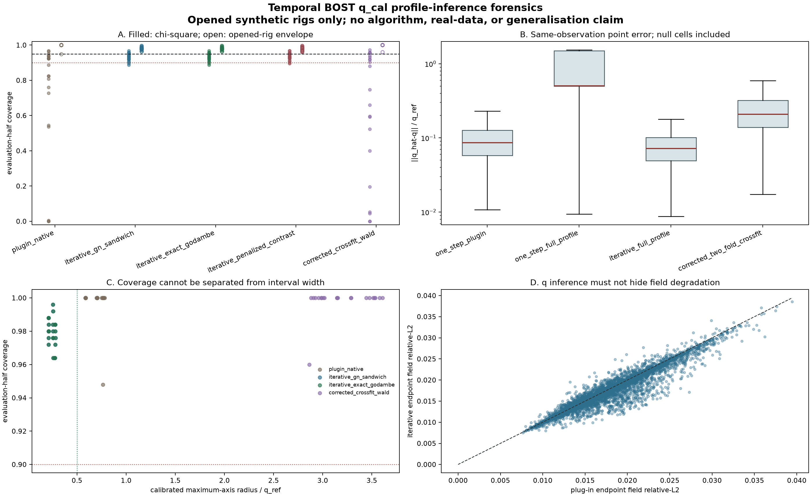
q_ref。| 方法 | 原生 coverage | 包络后 coverage | 包络倍率 | 校准半轴中位 |
|---|---|---|---|---|
| plug-in native | 72.93% | 99.75% | 9.327x | 0.7054 |
| iterative GN / exact | 93.09% / 93.09% | 97.90% / 97.90% | 1.277x / 1.279x | 0.2561 / 0.2562 |
| penalized profile contrast | 93.52% | 97.77% | 1.249x | 不解释为 Wald 半轴 |
| corrected cross-fit Wald | 62.61% | 99.81% | 43.677x | 3.1491 |
q_ref。它只能用来事前冻结下一轮 fresh-rig 协议，不能称为本轮成功。这轮不碰休眠 fresh BOST 盒子，而是先把层级切分做成有正例、无信息负对照和 OOD 反例的教学实验。每个情景用 120 个 fit rig、120 个 calibration rig 和 400 个 locked evaluation rig；同 rig 内只有 30--240 个相关 frame。
EDUCATIONAL_MECHANISM_SIGNAL_COMPLETE四条预注册教学检查均满足，只说明机制与反例被复现。它不是 BOST forward、新算法、三维/4D 重建或泛化授权。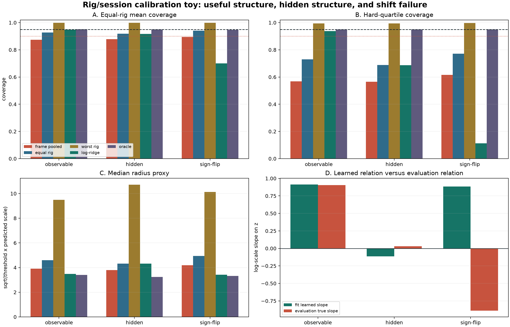
R²=96.92%，log-ridge 将 hard coverage 从 56.79% 提到 93.76%，中位半径比 equal-rig 短 24.04%。R²=1.39%，log-ridge 与 equal-rig 的 hard coverage 只差 0.19 个百分点；没有信息就停止加深网络。R²=95.21%，但学得 slope +0.8838、evaluation 真 slope -0.8887，hard coverage 只剩 11.23%。| 情景 / 方法 | rig mean | hard quartile | rig p10 | 中位半径 | 解释 |
|---|---|---|---|---|---|
| observable / frame pooled | 87.34% | 56.79% | 55.99% | 3.9086 | easy rig 的更多 frame 抬高 pooled 观感 |
| observable / equal rig | 92.77% | 72.98% | 73.22% | 4.5982 | 减少 cluster-size bias，但仍不自适应难度 |
| observable / log-ridge | 94.87% | 93.76% | 89.56% | 3.4928 | 只在可见尺度关系保持时有用 |
| hidden / equal vs log-ridge | 91.83% / 91.71% | 68.88% / 68.70% | 66.63% / 66.25% | 4.3137 / 4.3196 | 低 R² 负对照，网络不应升级 |
| sign-flip / log-ridge | 69.96% | 11.23% | 2.77% | 3.4162 | 区间很窄但错误，必须 support gate + fallback |
| 三情景 / oracle | 95.07% / 95.01% / 94.71% | 95.01% / 94.91% / 94.89% | 92.63% / 92.52% / 92.12% | 3.4057 / 3.2432 / 3.3176 | 不可部署，只检查生成与尺度上界 |
公开 Neural Refractive Index Primitives 仓库已固定到 a385cce...。这轮没有复制作者源码/数据，而是从固定 commit 生成相对路径、哈希、split、许可与运行门禁；唯一执行的作者组件是 Fourier 编码的 MPS 前向、一阶导和二阶导烟测。
FOURIER_MPS_KERNEL_PASS_FULL_RELEASE_BLOCKED组件烟测通过；作者训练、CUDA renderer、三维重建、真实火焰和算法优越均未执行。根目录无许可证，外部代码/数据继续只留本机，不进入本站。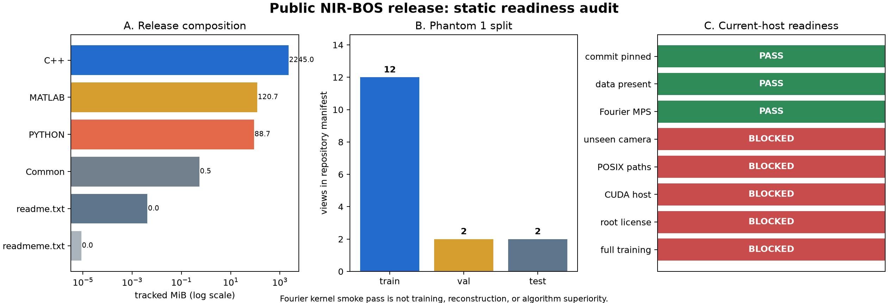
| 门 | 当前证据 | 判定 | 下一动作 |
|---|---|---|---|
| 数据身份 | MATLAB/Python Phantom 树均为 71 files、92,846,449 bytes、同 tree SHA | 只有 1 个独立 field | 至少补 5 个独立 synthetic fields，再谈 operator learning |
| 视角独立 | val/test 均复用 train pose；val/test 资产逐像素重复 | 默认 test 不合法 | 从新角度重新生成，冻结连续角区留出 |
| Mac 组件 | Fourier 2 x 39；一阶/二阶 AD finite | 局部核通过 | clean-room tiny loader/MLP/analytic BOS |
| 完整作者入口 | 强制 CUDA ray、无条件 CUDA JIT、hash 写死 CUDA、Windows environment | 当前主机阻塞 | NVIDIA 上先做 50--100 step baseline smoke |
| 许可 | 根目录无许可；仅子组件有独立 license | 不再分发 | 联系作者确认；我们只写 clean-room 实现 |
| 新算法门 | Fourier/hash、AD/discrete/hybrid、mask 已被 2026 论文覆盖 | 假设未验证 | 只研究噪声/饱和 gate、fail-closed residual 与时序失效保护 |
24F/24Aᵀ 外壳、相同数据和相同端到端成本下，优于 CGLS、简单阻尼/插值、learned warm-start、DCDM/FCG-NO-style 对照与直接 DeepONet/FNO/iFNO；任何优势还必须在未见 rig 尾部、A/B consistency、wall time 与内存上成立。6 个复用的 post-open synthetic mechanism cases 上完成 72 行 reduced 诊断，但仍是 0 fresh / 0 real scientific cases / no training / no breakthrough。在何远哲师兄确认真实 callable、curved/straight residual 层级、JVP/VJP、标定、数据 split 和强基线以前，不启动真实科学训练。已有工作已经覆盖 null-space 学习、粗解校正、神经预条件器、反向 neural operator、hybrid Krylov 和 instance-specific regularization。PSU-C1 关闭了 bounded first-direction fit；R0 又关闭了当前 24 步 CGLS 路径上的 instance-specific stopping。现在可检验的差异只能更窄：先在固定 BOST 物理壳中构造新的正则化 Pareto 路径，再判断部署可见量能否安全控制有界强度、滤波器凸权重和拒答，并用 rig shift、A/B consistency、尾部风险与端到端成本证明它是否值得。
已将观测矩阵 null-space 的低维投影/系数作为成像逆问题先验。不能再声称“首次学习 null-space”；只能在 BOST 几何、同预算与 fail-closed 尾部门下寻找差异。
已研究从低保真/粗解到校正场的 neural correction。不能再声称“网络校正天然优于 direct inverse”；差异需落在 BOST operator、预算壳和独立 B/尾部证据。
已把 neural operator 放进 flexible CG 的 nonlinear preconditioner。不能再声称“首次结合 operator learning 与 Krylov”；若不实现 FCG，不应把 LGWO 直接叫 preconditioner。
已针对 forward/inverse 双向问题设计可逆 Fourier blocks，并在多任务上比较。不能用未经调参的普通 FNO 作为唯一对手；需报告 field/H1、残差、调用数、时间与 shift。
系统连接 Krylov 子空间、半收敛、显式正则和投影空间参数选择。它说明下一步应先实现强 classical hybrid/stopping，而不是把任何收益预先归因于网络。
从 observation 预测 instance-specific regularization parameter 已有先例。候选新意必须来自 BOST 几何/轨迹、输出安全集、held-out B 与 fail-closed 回退，而不是“用 MLP 预测 lambda”本身。
single refractive-index primitive、hash encoding、automatic/discrete gradient、3D mask 与层级采样均已有。它封住“换 implicit field/梯度实现”式宽泛创新，并把本项目推向 solver-control 问题。
Aᵀr 与一次 As，用两遍 Gram-Schmidt 保持 measurement directions 共轭。||delta||₂ <= eta ||Aᵀy||₂，首轮 eta=0.05；几何或噪声越出 calibration envelope 就设置 delta=0。LDFieldFiLM8 与纯 state_dict。counter drift 会报错，但不把任意 Python closure 冒充安全沙箱。delta_full != delta_null + delta_row，所以不能作加性 kernel 因果分解。O1 未检查 held-out ray、三模型种子、OOD 或 fresh。5230a5f 的双进程非 timing 字段完全一致。这里通过的是训练基础设施，不是模型效果。A 计算；exact-null 臂残差不变主要由构造保证。复算 validator 也共享底层 fixture/projector/solver/metric，只证明确定性重放，不替代独立 forward B、held-out rays 或真实实验。12³、3 cameras、6×6 detector；2,729 参数；K=24 backward、全模型 seed、内存、调用账本、route/fresh 扫描与独立 validation 已过。A/Aᵀ、固定 rig/session split 后，保持所有 gate 不变迁移。最关键的论文对手：NeRIF、Neural Deflection Field、Neural Refractive Index Primitives、GRU-BOST、经典 TV/Tikhonov BOST、DeepONet/FNO、MoDL/LPD、Learning-to-Warm-Start 与 NOWS。只有同预算、同 geometry split、同端到端成本共同过门，才谈潜在贡献。
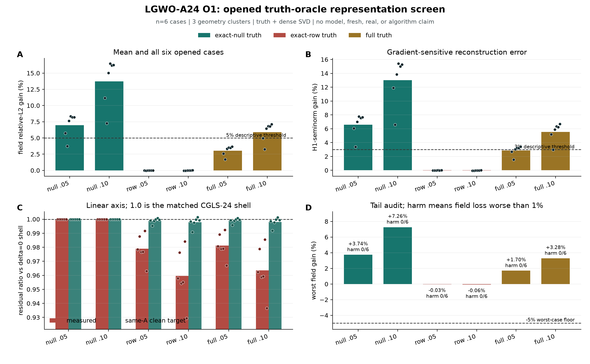
eta=0.05/0.10 的 mean field gain 为 +6.978%/+13.722%，worst 为 +3.741%/+7.262%；只授权设计小 pilot。
exact-row direction 改善 measured residual，却没有 field/H1 gain；这是 norm-matched 描述，不是一般因果定理。下一网络需诊断 approximate-null alignment。
STEMPO 只证明动态 tomography；MILD DNS 只能称 physics-derived synthetic BOST；TU Graz 只证明真实 BOS 图像前端；三层都不能代替 OERF 三维真值。
三 families 与三 seeds 先在 cluster 内聚合；50,000 次 cluster bootstrap，7/8 正簇，另报 B residual、harm、worst、fallback、时间与峰值内存。
七个冻结 checkpoint 为 k={1,2,3,4,6,8,12}。原问题要求单纯形权重并保护每条 ray 的 k4 残差包络；两次 tail-safe Clarabel 运行都因至少一个 AlmostSolved、gap 或 projection closure 未过合同而保持 fail-closed。独立证书没有把它们冒充成功，而只使用 18/18 均为 Solved 的 unconstrained truth oracle：unconstrained simplex 是 tail-safe simplex 的可行域超集，删除全部 ray 约束只会扩大可行域，所以它给出的 gain 是任何 tail-safe 混合都不可能超过的乐观上界。
SolvedFAIL_CLOSED_SOLVER_OR_CONTRACT_FAILURE；上界证书是单独的逻辑判决。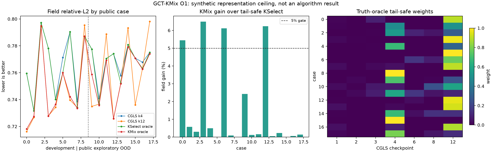
protocol commit、attestation、两个冻结场、payload/geometry 和逐文件哈希都在 16³ rotation-40 正式评分前锁定。pooled relative-L2 为 16³ 0.843263 对 32³ 0.959591；camera 2/3/4 的预注册 16³ - 32³ 改善量分别为 -0.061519、-0.110005、-0.145689。三台相机共享一个 rotation-40 运行，所以这是一个真实 image-space reversal，不是三个独立重复，也不是三维场精度或算法优越性证明。
16³ - 32³；方向为负，未过 +0.01 数值筛查线R delta ≈ 0、物理 forward data consistency 与 rotation-group 留出。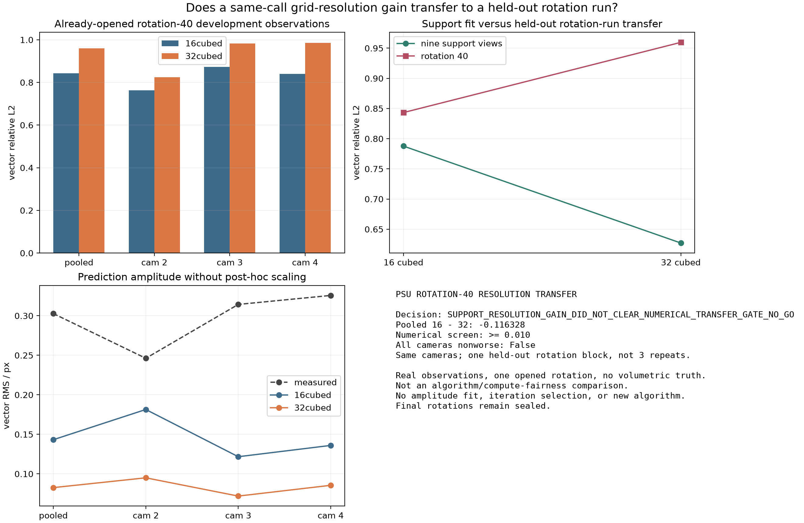
协议 commit 48e32d7 先固定 A16·x16、A32·U(x16)、A16·D(x32)、A32·U(D(x32)) 与 A32·x32，再运行全部 rotation-40 active rays。机器分支被触发，但最终状态仍是 mechanism unresolved：网格/forward 替换不是零影响，冻结场差异也不是所有相机一致的有害方向。
A16·x16 与 A32·U(x16) 的 absolute rel-L2 gap；超过冻结的 0.01 机制屏cos(residual, fine correction)；全局正向加入 correction 会变差A16·x16=0.843263，A32·U(x16)=0.856804。+0.276931，camera 3/4 为 -0.137083/-0.162454。DU≠I；不能把 round-trip 剩余直接叫严格高频。k=1,2,3,4,6,8,12。FORWARD_GRID_CHANGE_MATERIAL 只表示冻结的数值屏被触发。当前只授权“forward 离散表示与重建场差异均不可忽略、一个 rotation block 尚不能分离机制”；不授权高频过拟合、CGLS4 唯一归因、三维场精度、统计泛化或新算法成功。保留经典 coarse 主体；网络只提议细尺度 correction；通过 data-consistency projection 后，再按 rotation group、camera tail、Schur violation 与完整成本共同验收。任一关键相机受损就回退 coarse。先比较 early stopping、H1/TV 与 BOST pyramid 强基线，再比较 MgNO/CNO/FNO/DeepONet。
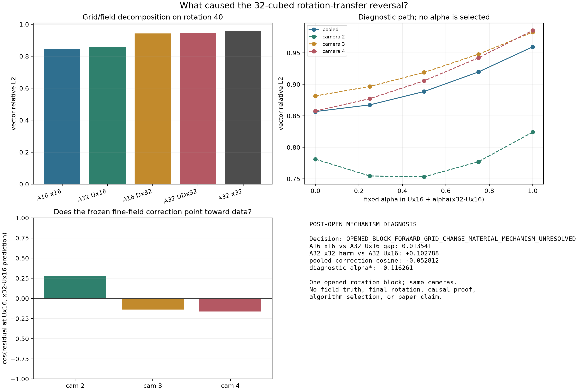
每个 outer rotation 的 checkpoint 只由另外两个 rotation 互相验证选出，选择提交后才做 outer join。只有 outer 50° 让 16³ 从 k=4 提前到 k=3、32³ 提前到 k=2；两者都未通过预先声明的逐 camera/tail no-harm 门。这个负结果把问题定位为“几何条件改变时，平均重投影改善不保护单相机尾部”，而不是可发布的通用 early-stopping 规则。
| grid / selected | 三折 mean macrok4 - selected | outer 50° group p95 | view 5 L2 | view 5 p95 | 判决 |
|---|---|---|---|---|---|
16³ / k=3 | +0.000417966 | +0.0398% | +1.6893% | +2.1896% | NO-GO |
32³ / k=2 | -0.002103342 | +1.1220% | +3.0282% | +3.8310% | NO-GO |
16³ 是最具迷惑性的情形：三折平均 macro 微弱改善，但 outer 50° 的 view 5 和 tail 受伤。32³ 则连平均 macro 也退化。因此任何新模型都不得只报 pooled/mean，必须保留 rotation × camera × tail 的完整表。
k=4 和强经典解同门比较。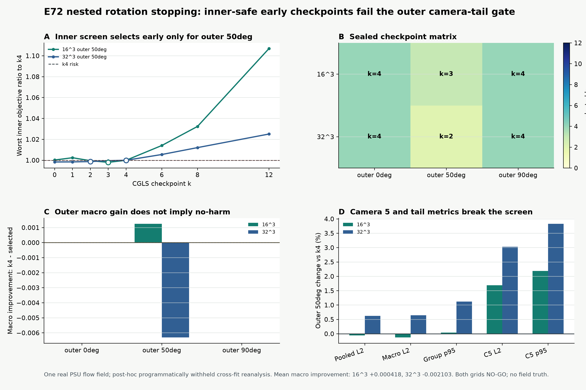
candidate-k4 harm 符号写成可攻击测试的代码；orphan 与 Pages 证据链也继续 fail closed。这只证明以后更难靠改口径或漏算成本伪造胜利；真实 private score、fresh rig/session 和任何新方法优越性仍为 0。JGTCE 是 E72 负结果长出的 fail-closed 选择层。它把每个候选相对 cgls_k4 的加性伤害同时按 macro、worst、group p95 和九个 view slot 的 L2/p95 校准。geometry-only adapter 现在强制可信 manifest digest，并让每个 geometry 文件通过 O_NOFOLLOW FD 只打开一次，在同一个 FD 上校验和 mmap；对真实 10,628,822-ray cache 走完 constructor、329 个 chunks、matrix-free forward 与 adjoint 后，host hook 的 observations_uv.npy 打开数仍为 0。data-foundation runner 已在微型 fixture 内由 y=A(x_proxy) 和同一条 CGLS 的 k0..k4、Aᵀr4 内生构造 29 维 feature；新 scorer 再对 k1/k2/k3/k4/k6/k8/k12 各做一次 forward，给出固定 24-metric 和六组 candidate-k4 harm。fixture bundle 只能进入 owner-only 目录，不可覆盖。私有 unit manifest 另行绑定 run/unit、冻结 phantom 行、配置与 cache source，重复 unit 换名也拒绝。claim 先写 PREPARING_UNPUBLISHED；逐字节证明未发布的 residue 进入 .orphan-quarantine，先在 <entry>.preparing 内密封 recovery record，同目录原子改名发布后才移动 run/claim。completion 也由 isolation_complete.json.preparing 重读后原子发布；空 stage、半写文件和目标父目录已同步的崩溃点都有回归。未完成事务会阻断其他 unit；source/destination both 或 neither、已有 finalization 但缺 anchor、旧版隔离记录仍须人工审计。通用 duck-typed 路径只能得到 fixture 状态，私有路径必须读取内部 attestation 并使用精确 adapter/operator。真实 16-unit 尚未运行，private metric/harm integration 仍为 0，candidate authorization 继续关闭。
upper harm < -minimum improvement 判定，不能相对正容忍值偷换概念。bytes 底层并绑定数值 SHA-256；runner 现在会亲自加载固定 JSON 模型并生成预测。cgls_k4；即使恶意 policy 连同 manifest 一起重算哈希，也不能把任意动作改名成回退。global_valid_aperture_sample_fraction；独立 witness 只证明 feature/input/公式内部一致。新增 fixture data runner 已把 sufficient statistics 绑定到同一 CGLS，但真实 private unit 仍未执行。FIXTURE_ONLY；生产路径不接 caller manifest digest，只读 Git 忽略的 private attestation，并绑定干净 commit、runner、operator、adapter、phantom、producer 与 witness。k4 原样写成 fallback，重开所有成员做 checksum/全字节比较，并最后发布 finalization.json。L2/max-abs、相对残差和 alpha/beta 递推都会对回 solver history；正系数也不能任意改。PREPARING_UNPUBLISHED；orphan 隔离采用 prepared/complete 双不可变记录，逐成员哈希、源/目标互斥状态与每次 rename 的双父目录 fsync 均复核。未完成事务先恢复闭合，不能为其他 unit 开新 run；finalization-without-anchor 不自动恢复。k4 单源写盘，重开全成员并拒绝覆盖。candidate-k4 harm 和 owner-only 互斥发布均有回归。max + conformal + fallback 本身不足以证明创新；必须在多个独立真实 flow/session 上得到非平凡接管率、保护每个 view-tail，并公平胜过 H1/TV/Pyramid BOST。没有 field truth 时只能声称 image-space consistency，不能声称真实三维精度。三折分别整组留出 rotation 0°、50°、90°，16³ 与 32³ 都从零场跑同一组 k=0,1,2,3,4,6,8,12。固定 k=4 的 equal-rotation mean camera-macro improvement 16³ - 32³ 为 -0.008178，且 pooled、逐 camera、worst-camera、group p95 与逐 camera p95 的全折 no-harm 门均未通过。更稳定的新信号是：六个 fold-grid 单元从 k=4 到 k=12 都让训练误差下降、留出至少一项关键指标上升。
16³ - 32³；预设门为 +0.01| held-out rotation | pooled 32-16 | macro 16-32 | p95 32/16 | 最窄结论 |
|---|---|---|---|---|
| 0° | +0.004861 | -0.003613 | 1.011288 | pooled/macro 冲突，camera 门失败 |
| 50° | +0.012289 | -0.017657 | 1.016034 | macro、worst、p95 均退化 |
| 90° | -0.005293 | -0.003264 | 1.002664 | pooled 改善仍未保护 camera 2/tail |
[4,4,3,2,4,4]；只有 outer 50° 的两个网格选早。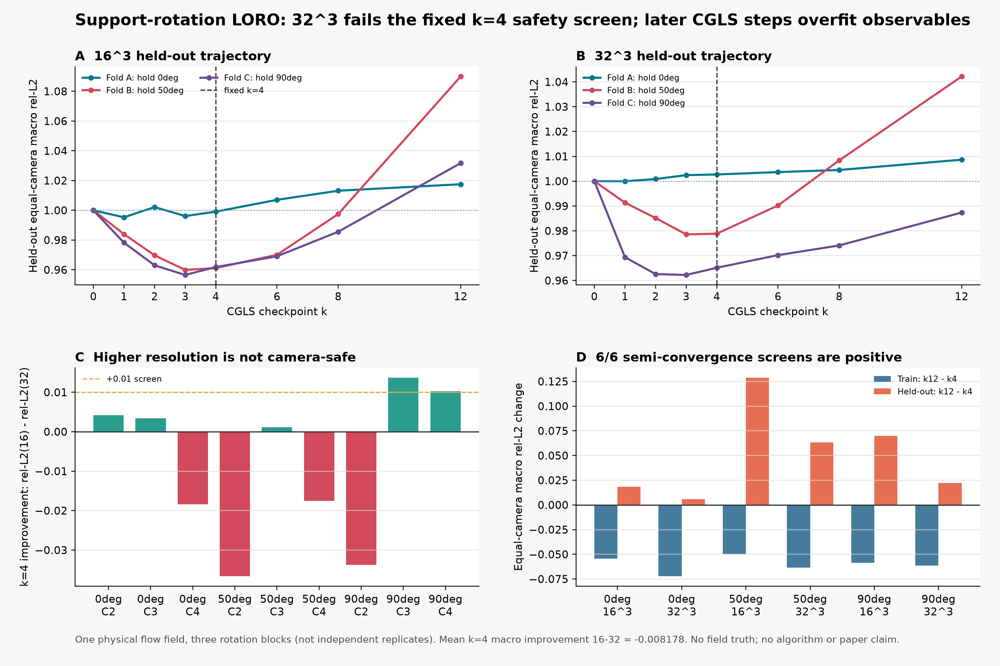
官方 MATLAB 源程序按 rotation 0 → 50 → 90 的外层循环、camera 2 → 3 → 4 的内层循环拼接 HSOF_9CAM_RT.mat。九个 bundle manifest 又固定了连续等长 block，因此本次 preflight 跨文件绑定得到：0/1/2 是 rotation 0，3/4/5 是 rotation 50，6/7/8 是 rotation 90；每组三个依次为 camera 2/3/4。cache manifest 自身仍只有 view ID，并非单文件自证。
| rotation | camera 2 | camera 3 | camera 4 | LORO 角色 |
|---|---|---|---|---|
| 0° | view 0 | view 1 | view 2 | fold A 整组留出 |
| 50° | view 3 | view 4 | view 5 | fold B 整组留出 |
| 90° | view 6 | view 7 | view 8 | fold C 整组留出 |
170,061,152 个有效 aperture samples 全部从两级 compact coordinates 反算三维位置；最大归一化坐标差为 1.11e-16，门为 1e-12。verify_hashes=True 重开；rotation 40 与 final audit 未进入。k=0,1,2,3,4,6,8,12 checkpoints。这条路线先回答“32³ 的 support 优势是不是只在见过的 rotation 上成立、哪一步开始伤害 held-out rotation”。只有经典 trajectory 和 coarse-subspace 强基线解释不了的稳定剩余，才交给 MgNO/CNO/FNO/DeepONet 类神经算子学习。
D5 不再增加 toy 分类分数，而是冻结一个最小 callable contract。适配器只能返回 output、实际 branch、diagnostic 和累计成本；有限差分、伴随缺陷、三路径结构与最终状态均由 runner 和不导入共享实现的 validator 重算。
direct = curved - straight 必须同时在 output、JVP、VJP 层成立。1e-5/1e-4/1e-3 都消费，不允许看结果后只报 best-h。find() 掩膜为 1-based；作者 Python/TensorFlow 直接 gather。真实 inactive mask 最大值等于测量总数，必须显式减 1。drop_any_out 却排除 99,617 条；当前不从 opened 数据挑阈值。risk_validation 选参，随后在未参与选择的 risk_calibration 相对三种子 learned 均值把场误差再降低 4.94%；验证集降低 5.00%。4F+4Aᵀ 的经典 Krylov 方法淘汰。g₀=AᵀWy 的 44 个特征确实含形态信号；四专家 OMSE 在 calibration 只有 +1.29% 且 harm 6.67%，分类路线不足。SYNTHETIC_PROTOCOL_PASS_NO_LAB_AUTHORIZATION 只说明公开合成适配器上的 53 次协议、三路径恒等式、FD/伴随检查、状态分账和代码独立回放可以执行。它不证明真实 BOST，不证明物理正确，不证明完整 Jacobian，不证明三维重建，不证明算法优越，不证明泛化，也不证明论文成立。下一次有科学增量的动作是接入师兄的匿名真实 callable，而不是继续增加合成网络。D5 是 D4c 合成反例与真实 renderer 之间的窄桥。它不复制整套 N2 数据合同，而是要求一个匿名场向量、4--16 rays、接受任意运行时方向的 callable、真实状态和成本账本。两组 tangent 与一个 cotangent 是公开合成协议使用的测试向量，不是师兄需要预先交付的答案数组。
ee792fd，未导入 runner 的 validator 用新 nonce 重启同一合成适配器并重算所有指标，完成 1,370 项断言。通过的是 synthetic transport/semantic obligations；claim_authorized=false。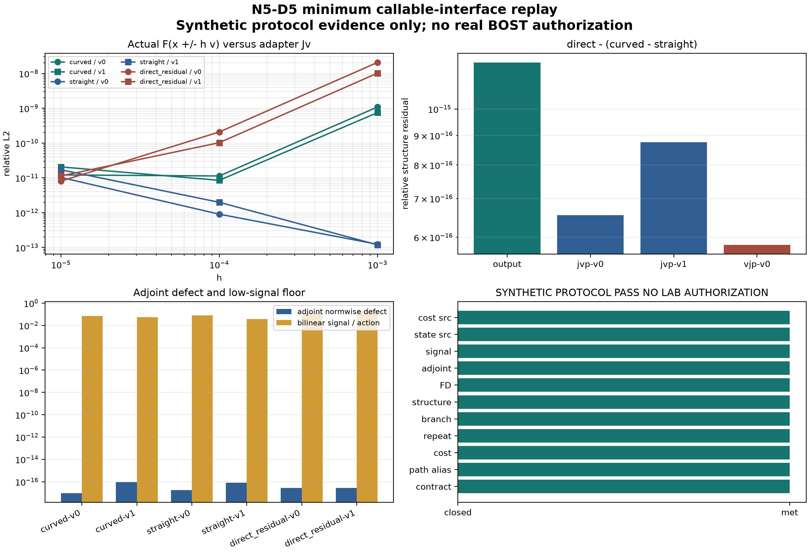
F_c(x)、F_s(x) 与 R(x) 各表示什么。Jv 是场扰动到 detector；Jᵀq 是 detector 残差回到场。| 真实接口状态 | 它说明什么 | 优先检查 | 可能形成的算法题 |
|---|---|---|---|
| FAIL_CONTRACT / COST / PATH_ALIAS | 接口身份、单位或调用账本不可信 | 适配器与代码审阅 | 不做算法，先修证据入口 |
| FAIL_BRANCH | 正负扰动走了不同控制流 | mask、pruning、sample count、termination | 局部稳定半径、边界项或 reparameterization |
| FAIL_STRUCTURE | direct residual 没有接成 curved-straight | sample/query/aperture 是否共享 | residual-native paired ray primitive |
| FAIL_FD / ADJOINT | autodiff 与实际 forward 或转置关系不符 | graph detach、precision、离散路由 | 可审计 matrix-free JVP/VJP |
| LOW_SIGNAL_UNRESOLVED | 现有探针没有足够辨别力 | 预注册更多方向与检测地板 | 随机证书与拒答策略，不自动 pass |
| LAB INTERFACE REPLAYED | 有限接口义务未失败 | 再做 decoder-chain 小门 | 之后才接 PCGLS/unrolling/operator model |
a8d8849；公开路径脱敏门补入 ee792fd 后才生成入库结果。x/v/q 的匿名 forward/JVP/VJP callable，不是预先算好的两个 Jv 和一个 Jᵀq。能否先给我一个 4--16 rays 小例，并说明 field/decoder 参数化、curved/straight/direct 能力、precision、units、axis order、geometry/calibration、sampling/interpolation/termination 和真实 branch state？如果没有原生 direct 请明确，我会走双路径协议，绝不用 wrapper 末端相减冒充。raw lab trace 只放本机 private_library；接口局部自洽也不会被写成重建或算法成功。”实验室 adapter 必须留在 private_library/，但冻结的 public D5 runner 又要求被测源码存在于公开 Git commit；二者不能同时成立。L1 因此单独做静态、私有、fail-closed 的接入检查，且不会 import 或执行私有 adapter。当前没有绿色实验室报告：真实 adapter、匿名场向量和实验室配置尚未收到。
formal_53_call_replay_authorized=false；L2 通用字段为 formal_replay_authorized=false。L1 只解析配置、AST、哈希和数组，不调用 renderer；七类科学授权仍全部为 false。静态绿灯只解锁人工源码复核与私有 describe 准备，不解锁 primary、validator、decoder、inverse、训练或论文主张。describe_renderer()：维度、单位、轴序、dtype、路径与成本语义。forward_renderer()：curved / straight / direct 的 output、真实 branch、diagnostic 和成本。jvp_renderer()：接受审计器运行时生成的任意 v，不查表。vjp_renderer()：接受审计器运行时生成的任意 q，回到 field 或 decoder 参数空间。canonical_field_vector()：与配置完全一致的匿名扁平输入。source_review_notes()：路径语义、branch 来源、单位与成本的人工确认。branch state 只记录真正影响 forward 的 active rays、sample count、hard mask、pruning、termination；diagnostic state 才放 domain margin、support 距离或输出分箱。没有原生 direct_residual 时应明确拒绝，不能把末端两张 map 相减伪装成 residual-native primitive。
| 状态 | 人话解释 | 允许做什么 | 明确禁止 |
|---|---|---|---|
| REAL_ADAPTER_NOT_RECEIVED | 师兄的真实最小包尚未到位 | 完善公开协议与提问 | 伪造实验室结果 |
| PRIVATE_INTAKE_READINESS_BLOCKED | 位置、Git、Schema、hash、数组或源码静态项失败 | 按 blocker code 修复并生成新报告 | 绕过门禁运行 adapter |
| STATIC_PRIVATE_INTAKE_READY_FORMAL_REPLAY_LOCKED | 私有文件只在静态入口层未发现 blocker | 人工 source review 与两次 describe 的准备 | 36/53 primary、训练或结果外推 |
| FORMAL_REPLAY_LOCKED | L2-A、dual-v2 与 L2-B development test double 已完成；当前生产 backend 缺五项安全能力 | 核对能力分支、人工审阅源码与物理合同，并实现保护进程身份、私有输入/账本/输出根且具外部 attestation 的 backend | 绕过 host gate 签发真实授权，或把 test-double 绿灯称为科学 pass |
L2-A 冻结来源、物理元数据、输入闭包、未知探针和完整预算；L2-B 把权限缩成恰好两次 describe；L2-C 加入固定 trust registry、两个签名角色、14 步事件链与 describe-only 遥测。本轮 L2-D0 从 index 0 重算调用者提供的签名前缀，核对固定静态 floor checkpoint，并要求 sequencer 与两个 monitor 的三角色证据。nonce 必须从通过 L2-B schema 的 authorization 中解析并域分离哈希，不再信任任意 commitment 文件摘要。它只证明该语义 nonce 在这份前缀中出现一次；前缀外部完整性、在线原子消费与跨观察者 gossip 均未证明，仍固定返回 one_time_acceptance_proven=false。第一次和师兄沟通则只问真实 forward、residual 位置、JVP/VJP、hard branch 和组内痛点，不让安全工程淹没科学问题。
POST_LAUNCH_EXEC_REPLACEMENT_NOT_DENIED、PRIVATE_INPUT_ROOT_EXTERNAL_MUTATION_NOT_DENIED、DURABLE_NONCE_LEDGER_ROOT_NOT_PROTECTED、OUTPUT_ROOT_EXTERNAL_MUTATION_NOT_DENIED 与 BACKEND_CAPABILITY_ATTESTATION_NOT_EXTERNALLY_VERIFIED，不读取真实授权、不消费 nonce、不创建结果目录。production_execution_authorized=false、formal_36_call_replay_authorized=false、formal_53_call_replay_authorized=false、formal_replay_authorized=false。global_nonce_uniqueness_proven=falseone_time_acceptance_proven=false；不能降级成本地 markerrole_operational_independence_proven=falsecurved - straight，再声称验证了 residual-native primitive。| 阶段 | 初学者理解 | 当前实现 | 仍然禁止 |
|---|---|---|---|
| L1 static | 检查包裹、标签、哈希，不开机 | 三路径 v1 冻结；dual-v2 24 项测试并独立推导 36 | describe、forward、重建 |
| L2-A foundation | 冻结谁能运行、要花多少次、结果只能写到哪里 | 已实现；兼容诚实双/三路径预算 | 任何 adapter 调用或科学结论 |
| L2-B describe-only | 隔离环境中只读两次设备铭牌 | 18 项 test-double/host-gate 测试；当前生产 backend 阻塞；真实运行 0 次 | 伪造 backend capability 运行真实包，或自动连跑 forward/JVP/VJP |
| L2-C external witness | 两个外部角色签同一 subject、事件链与成本胶囊 | verifier 与 21 项负向测试已实现；真实 signer/evidence 运行 0 次 | 把签名当事实证明，或由 runner 自签后清除生产 blocker |
| L2-D0 offline prefix | 重算调用者前缀，解析目标语义 nonce，检查静态 floor 与全前缀自报摘要重复 | 31 项测试已实现；真实 ledger/monitor/gossip 运行 0 次 | 把历史自报 nonce 摘要写成已验证 raw nonce，把前缀内唯一写成全局一次性，或把静态 floor 写成 anti-rollback |
| Primary replay | 在一个匿名工作点查局部离散自洽 | 未授权；36 或 53 | 称为物理正确或完整 Jacobian |
| Validator + private challenge | 第二次重跑并用事前不可知方向查固定答案 | 探针机制已实现；独立执行与 observed cost 未实现 | 把有限随机探针称为全空间证明 |
| N2 inverse / training | 多视角三维重建与模型公平比较 | 等待真实数据合同、rig split 和 L2 结果 | 从 D5 小接口直接开 FNO/DeepONet |
审计器在输入和实现完成 attestation 后，才用系统 CSPRNG 生成正交 tangent、cotangent，并从三个预注册数量级区间各抽一个秘密 h。启动前只写 commitment 和派生上下文 hash，不落盘 seed、向量或 h；adapter 退出后才把 reveal 写回私有结果目录。它降低公开固定向量查表风险，但有限随机探针仍不能证明整个高维 Jacobian。
参数化、tensor shape、spacing、axis order、单位、坐标手性、geometry/calibration hash、波长策略、sampling/interpolation/boundary/termination、backend 与 wire dtype、decoder checkpoint、动态 ray/sample 账本和噪声下限。字段齐全只证明说明被绑定；是否符合实验装置仍需何远哲师兄审核，并由真实数据验证。
当前 verifier 会重算每个 leaf、旧/新 Merkle root、固定静态 floor，并扫描全前缀的 acceptance ID、authorization ID/摘要和账本自报 nonce 摘要值。只有目标记录附有可按 L2-B schema 解析的 authorization，因此只有目标摘要能称为已验证语义 nonce；历史值只能称为 claimed digest。测试已构造两条从同一 floor 延伸、却都能各自通过的签名分支；离线文件也不能证明服务端做过线性化 ISSUED → CONSUMED → ACCEPTED。因此只写 target_semantic_nonce_unique_in_supplied_signed_prefix=true，同时保留 prefix_completeness_external_to_bundle_proven=false、anti_rollback_protection_proven=false、log_fork_freedom_proven=false 与 online_atomic_consume_observed=false。
先确认真实代码入口、field/decoder 参数化、curved/straight 与 residual 形成位置、任意方向 JVP/VJP、hard mask/termination/adaptive sampling、最小合法 batch、Linux/CUDA 环境、组内最痛的失败和隐私边界。4--16 rays 是建议，不是硬要求；师兄只指明入口也可以，wrapper 由我方编写后再交他审核。
打开可直接发送的微信稿固定 registry 防止普通调用者传入攻击者 policy，其当前空文件摘要还被编译进 verifier，单改 JSON 会触发 VERIFIER_CONTROLLED_REGISTRY_BYTES_CHANGED；但同 UID 可以一起替换 Python 源码、registry 和摘要常量，所以报告仍写 same_uid_trust_root_replacement_excluded=false 与 verifier_binary_integrity_proven=false。Ed25519 只证明受信任 key 签过角色限定的规范化字节；L2-C report 在 D0 中只是被绑定的未认证 bytes，l2c_report_authenticity_proven=false。它们都不能证明 BOST renderer、导数或重建正确，因此 host_capability_truth_independently_proven=false 与 role_operational_independence_proven=false 继续保留。
它只允许 2 describe、0 forward/JVP/VJP；ray、sample 和 kernel 工作量必须为 null。真正比较 DeepONet、FNO、FFNO 和自有模型时，还要逐 case 绑定 A/A^T、ray/sample、神经前向、端到端 wall、CPU/显存、失败重试与 rig/session split。36 或 106 是接口预算，不是算法速度。
测试中，写 stage/HOME/TMP/仓库、TCP、fork/subprocess、宿主自定义环境变量、继承 FD、读取 sibling temp secret 都没有形成合法协议结果；hang、stdout/stderr 洪泛、第三行和 malformed JSON 也 fail closed。输入用固定 FD snapshot 绑定 inode/bytes/hash，输出目录相对父 FD 原子创建并按白名单写入。
sandbox-exec 已 deprecated；为启动系统 Python 保留了较宽的 system read，读取面不是 closed-world。profile 允许启动解释器，因此不声称 exec replacement 被禁止；末级 O_NOFOLLOW 不证明私有输入中间目录安全，持有 ledger/output FD 也不证明账本根全局唯一或验证后结果不受同 UID 改写。进程内 capability provider 不是外部 attestation，进程组消失和 RLIMIT_RSS 也不是全局子进程/硬内存证明。
D4c-v2 现在是历史前置证据。D4c-v1 虽通过文件完整性检查，却因伪 FD、人工 branch 和隐藏 structure oracle 被判为语义 NO-GO；v2 才在结果前固定 24 trials、1/2/4/8/16 probes、3 个 actual FD 步长、10 个描述阈值、4 档 fault magnitude 和 11 类反例，保留 720 个 case、34,560 组 actual FD 与 36,000 条分层状态。它说明 N5-D5 为什么必须同时要求 actual FD、三路径、真实 branch 与独立 replay；当前执行入口已经移到上方 D5。
threshold_selected=null；不得把 PASS_STRONG_SIGNAL 写成导数正确，更不得外推到 BOST、NeRIF 或三维重建。1e-10 first-probe-blind VJP fault；threshold 2 只作剖面1e-12/1e-10 仍漏检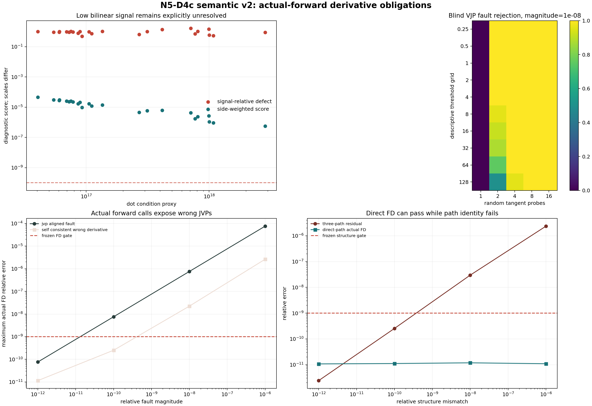
γ8 与 γ4913；它仍不是完整 autodiff 误差界。| 反例 | 关键结果 | 主责门 | 对算法的启发 |
|---|---|---|---|
| clean low signal | 旧门拒绝 24/24；side score max 4.55e-5 | side-weighted + 三态 | 低 signal 先降级 unresolved，不当作错梯度或自动 pass |
| blind VJP · 1e-10 | 1/2/4/8/16 probes 检出 0/7/19/22/24 | random probes | 多 probe 缩小盲区；仍不证明完整 4913 维 VJP |
| self-consistent wrong | adjoint 可全过；actual FD 只抓住 48/96 | actual FD | dot identity 只证明彼此转置，不证明对真实 forward |
| three-path mismatch | 1e-8/1e-6 structure 48/48 拒绝；direct FD 0/48 拒绝 | curved/straight/direct | direct path 对自己可微，仍可能没有接成真实 residual |
| separate vs paired | separate 三档 72/72 FD 拒绝；paired 三档 72/72 通过 | residual-native + FD | 不能先构造两个近等大量再相减 |
| diagnostic / piecewise | diagnostic 24 flip / 0 branch；piecewise 24/24 branch | forward-returned state | 报告变量和真实控制流必须分账 |
valid=true；validator 不导入 runner，从 seed 重建 input hash、forward、三路径、gamma 与状态优先级。D4b 判决不变，失败机制已拆开。D4b 不是模型排行榜，而是检查同一 curved-ray forward 的场导数能否在完整封闭开发 census 中逐上下文成立。正式结果与独立重放一致；新取证只解释已保存结果，不重新调用导数，也不产生任何新授权。
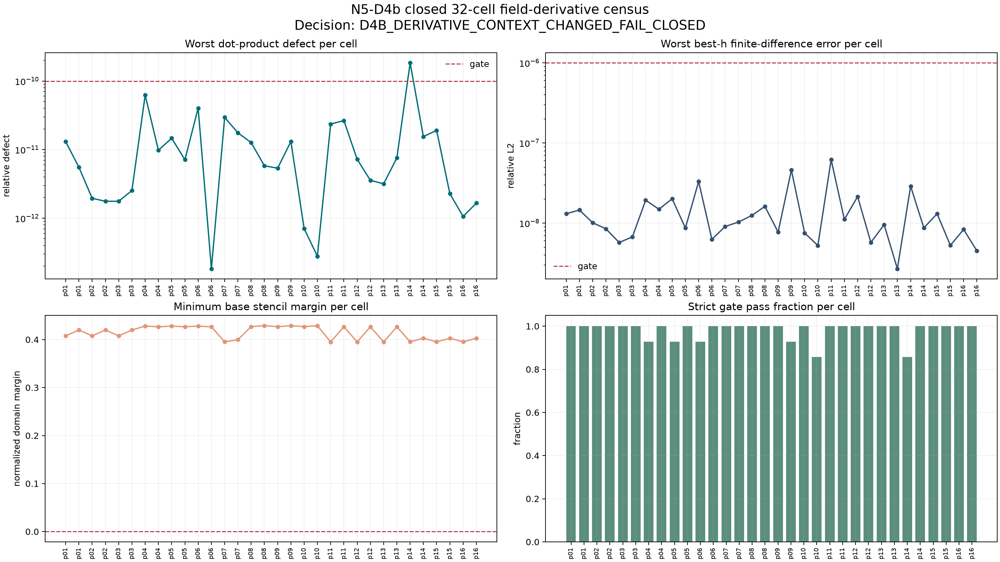
Residual dot mismatch：精确 contraction 后 raw/paired 仍为 1.842e-10 与 1.534e-10。component maps 各约 1.0866e-5，residual 只有 7.5114e-10；问题是低信号条件化，不是最后一次求和顺序。
Support-set switch：六个 context 只在 h=0.01 改变 21 位；interpolation cells 与 frustum signs 未变，h≤0.003 稳定。当前 forward 是连续 smoothstep，没有 hard mask，因此它是协议 support-set 改变，不等同于 forward 分支翻转。
边界：不能事后删掉最大 h、改 denominator 或删除 support gate。下一协议必须在独立开发集上比较 exact-bit、simple-root 与 cell/frustum gates，再冻结 fresh test。
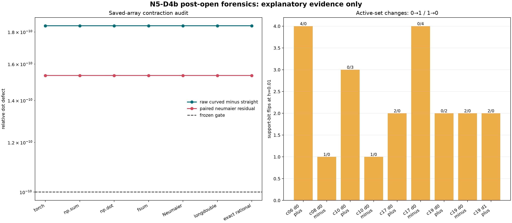
A · mixed-scale adjoint certificate：同时报告 dot-relative、normwise bilinear defect、absolute backward-error envelope 与 component cancellation；阈值必须在新 development population 上冻结。
B · transversality-aware support certificate：允许 simple、非 grazing 的等值面 crossing 平滑移动；用 interval root / implicit-function 条件拒绝根生成、消失、切触和危险事件。
与三维重建的连接：证书先进入 field-to-detector JVP/VJP，再进入 decoder chain；随后才能用可信 forward/adjoint 生成 neural-operator 训练对，并在 held-out views 上比较。
| 失败簇 | 观测 | 现在能推断 | 不能推断 |
|---|---|---|---|
| p14 · wrinkled wide · stress 1 | 精确 saved-array contraction 仍不过门；component signal 比 residual 大 14,466.67× | 低信号条件数是主要放大机制；可研究 mixed-scale/normwise 证书 | 不能追认 D4b 通过，也不能照 p14 事后选择 absolute floor |
| p04-p06 · smooth-s1871 wide | ray 0、step 14 与 midpoints 为主；9 个 flips | protocol-defined support set 在出口附近接近阈值 | 当前 forward 无 hard mask，不能写成真实程序不连续 |
| p09-p10 · smooth-s2131 narrow | ray 2、step 0 k4 / step 1 k1 为主；12 个 flips | matched controls 也会变化；不是 N3-failure 专属机制 | 不能删 control，也不能声称是真实火焰前沿跃迁 |
| changed vs stable FD | required-h median 8.90e-8 vs 6.58e-8；两组 max 都 < 1e-6 | exact-bit gate 可能保守，值得 fresh 消融 | n=6 的 post-open 描述不支持删除冻结 topology gate |
v1 只暴露了 MPS 审计导出缺陷，0 条性能行，不能排名。v2 仅修复“先转 CPU、再转 float64”，从 PDHG-v2 suite 116/116 tests、12 条 stress 到 784 条配对指标全部重跑。排名第一只是失败网格中的最不差者，不是可用算法。
pdhg_huber_a1of256_k4 只是在 32 个失败候选中排名第一：相对同预算 graph-PCGLS 的 mean field gain 为 -68.432%，p10 -120.638%，16/16 场受害。只有 1.207× 配对运行时间通过预设 3× 门；准确度、形态与尾部门全部失败。本结论仅覆盖两个已打开 replicate、oracle-scale 合成观测、zero-init、scalar-step 与冻结 K/alpha 网格；不否定一般 PDHG、TV/Huber、warm start、块预条件或真实 OERF 方法。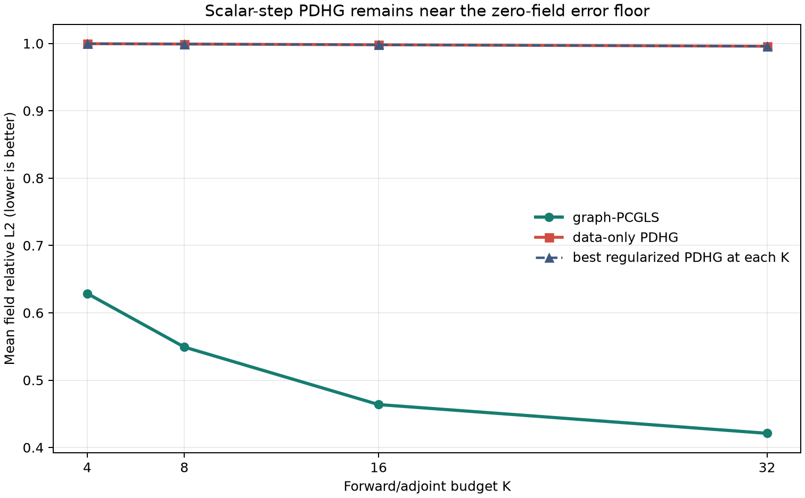
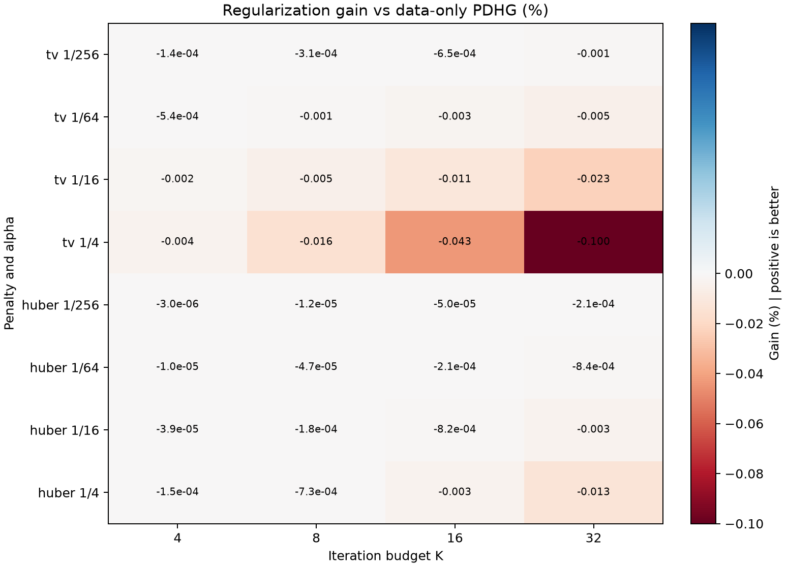
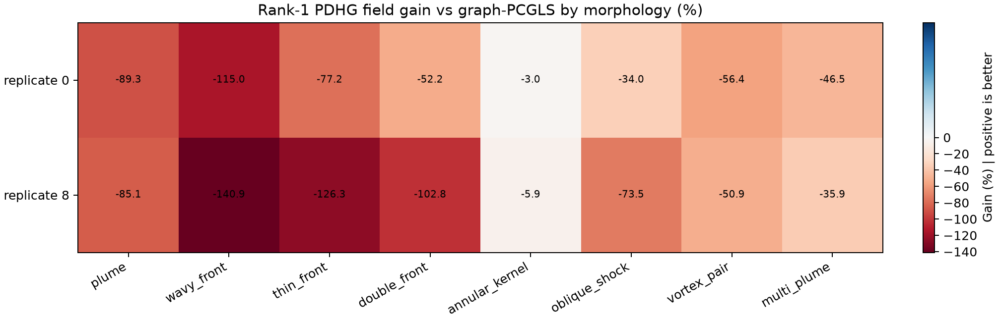
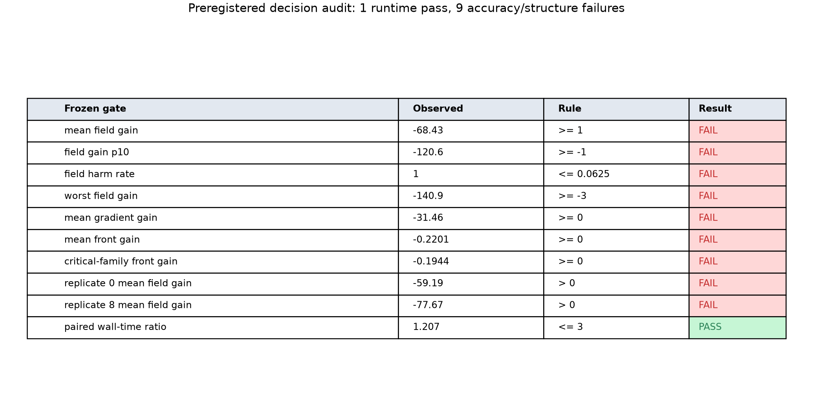
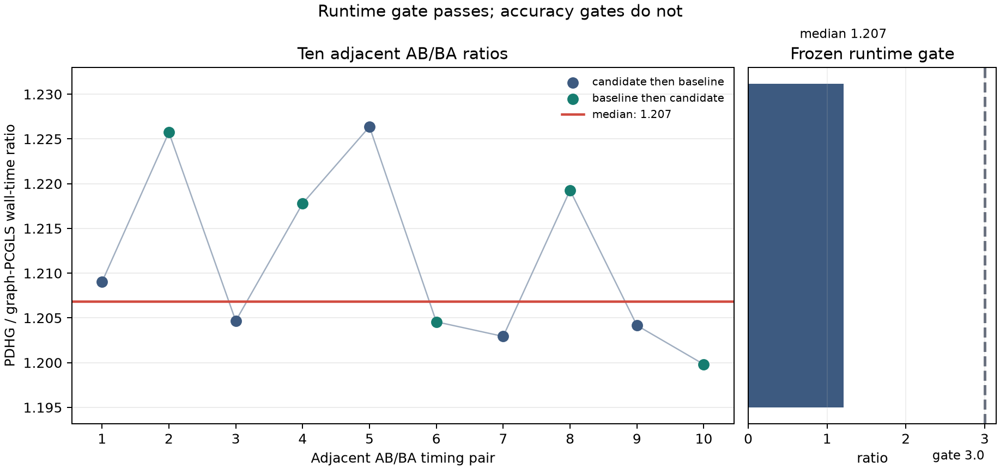
source commit 53f1bcc 上，view-local、single-scale、truth-free synthetic fixture 的 13/13 E1 全部通过。20 个声明 selector 展开为 34 个具体 case，记录与独立 replay 均为 34 passed、0 skipped；独立 NumPy oracle 重建 E/G/P/W/D+/A/M/D/N，再做 CPU/MPS 六步重算。validation report 完成 333 项 core checks，并通过第二次 --no-write 发布复核。该结论不比较重建质量，也不外推到一般 full-chain。
|K| 的行列和被正负抵消或 whitening 拆错，所谓“更快”可能只是不安全步长。V4 是前三次 pre-performance fail-closed 修订后第一次打开 factor truth metrics 的正式运行。三种 PDHG 共用 2,322 个 A-coupled voxels，422 个 A-null support voxels 以零 gauge 嵌回；四方法在 K=4/8/16/32 使用严格相同的 signed F/Aᵀ 调用预算。独立 validator 重算 4,048 项并确认 NO-GO。
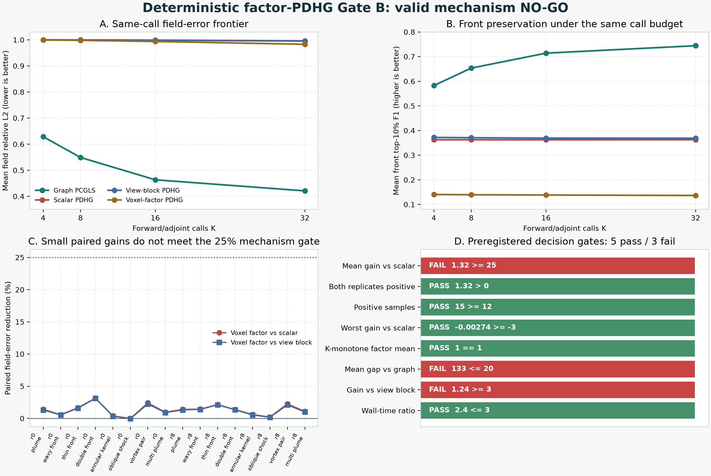
beta=0 基线没有过门，网络只会掩盖 solver 缺口。v1/v2 都在性能开封前因 MPS basis replay 不稳定而 fail closed；v3 把 exact A/M、Schur 证书与 power estimate 移到 CPU float64，solver 轨迹仍保留 MPS float32。正式 release 通过独立校验器 61 项检查。它回答“当前 factor majorizer 是否过松”，不重开 Gate B，也不是新算法排名。
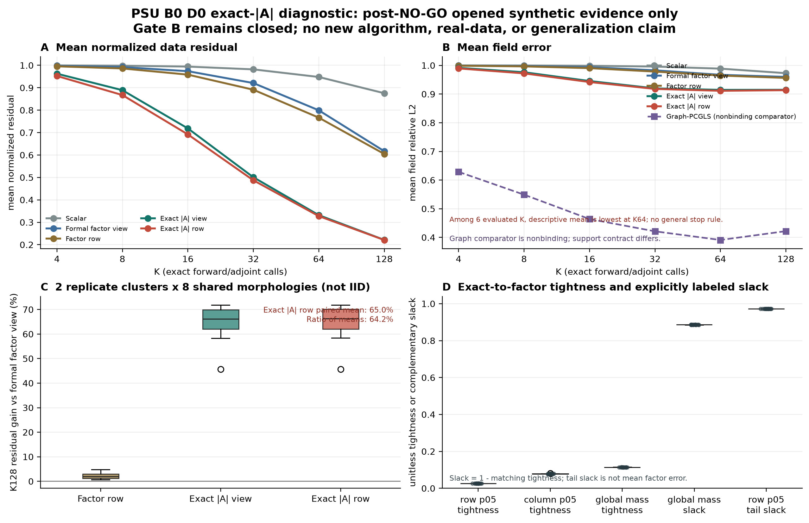
|A| 的 partitions；学习器只选结构，不输出未经证明的上界数值。Aq 验证。exact-view 与 exact-row 轨迹几乎重合，factor-row 仅 +2.011%。这支持“主要差异在 majorizer 松弛”，但不证明唯一 cancellation 因果机制。
field 只改善 4.83%，gradient 在 K=128 更差；clean-truth-derived synthetic scaling、两 replicate 集群与多指标查看都限制外推。
Mac 先跑 16³、多 rig、小 MLP/ridge 与 exact teacher cache；geometry-OOD、certificate、成本和 field/front 同时过门后才升级 32³ 或服务器。
Diag-D0 说明 cancellation 值得利用，v2 又证明直接回归更激进的 mass 会在新几何上失控。v3 把学习目标改成选择 signed primitive 的分组：每个候选 partition 都由三角不等式给出确定性上界。真实数据到位后，再把同一安全层接到 RayKernel-DCO 或连续 4D 重建。
4 个 fresh rigs 全部发生 Schur violation；calibrated envelope 共 39 次，raw learned 共 68 次。局部 2/4 胜例不能抵消灾难性尾部。
singleton 是 factor，all-in-one 是 exact oracle，中间 partitions 构成安全 tightness/cost 前沿。模型必须逐 rig 不劣于训练选出的最佳固定 partition，且不能总退化到 exact。
需要两档光圈/焦平面、phantom 或 paired low/high-fidelity renderer。先证明真实 forward discrepancy 大于 flow-off 噪声地板 2 倍，再比较显式 cone-ray/标定优化与受约束 learned kernel correction。
需要 50–200 帧连续序列、真实 timestamp、曝光和 dropout 日志。网络学习时空演化或低秩系数，显式 forward 不动；必须击败逐帧重建、时间平滑与低秩张量强基线。
此前 query correction 输给 direct-view 强对照。只有能永久划分 S/Q_fit/Q_audit 相机、完整 ray/pose/mask 且 direct baseline 仍有明确缺口时，才写新合同重开。
F、Fᵀ/Jᵀ、ray、mask、grid、unit？这里保留为什么曾经启动 PDHG：先拆开经典 PCGLS 重调与 detector covariance，再依次否掉 pooled stopping、TV/Huber SupPCG。scalar-step 与后续 factor-PDHG 均已严格 NO-GO；measurement covariance 仍是 forward/noise 模型的一部分，但不再支撑当前 PDHG 论文分支。
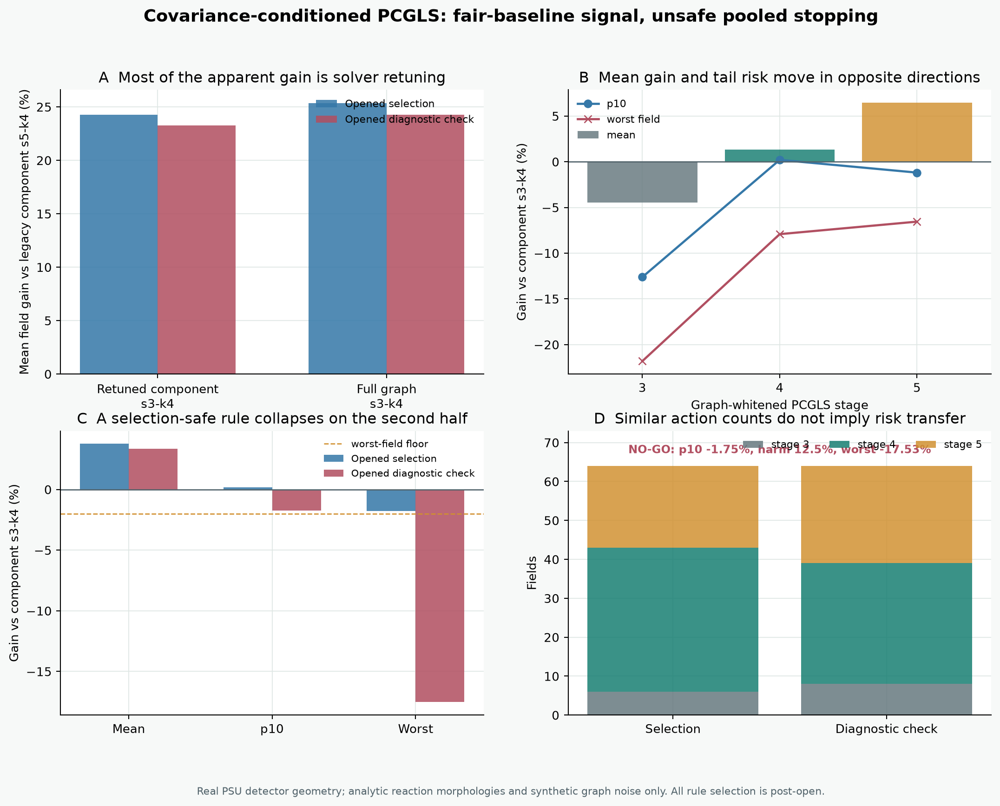
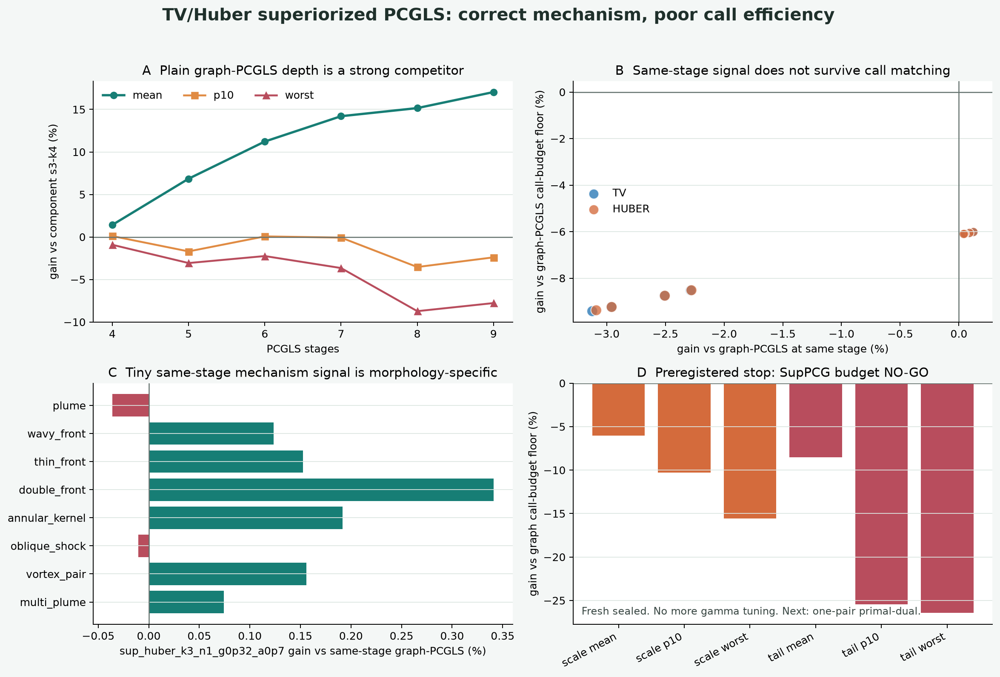
(2K-1)F + K Aᵀ；普通 PCGLS-K 只需 KF + K Aᵀ。用筛选器区分局部正信号、完整判决失败和下一门槛；正信号不自动等于 gate pass。失败卡不是历史包袱，而是新算法结构的约束来源。
真实 PSU detector graph、3 类 covariance truth、8 seeds×9 cameras。R=32 的最坏 coverage p90 仍为 12.44 个百分点；R=50 降至 5.625。公开包无 temporal repeats，因此真实授权仍为 false。
读严格说明16 个 held-out synthetic replicates：DG-CovGate mean +1.178%，95% CI [0.786%,1.571%]；但 p10 -1.029%、harm 10.94%。Oracle 同样伤 annular/thin，下一步转向 covariance-conditioned PCGLS。
读严格判决经典 s3-k4 重调贡献约 +23.78%；full graph 的公平增量为 +1.406% [1.235%,1.578%]，但最坏 -7.920%。348 条可观测规则中选出的规则在第二半区 p10 -1.746%、harm 12.5%、worst -17.532%，fresh 继续封存。
读严格判决3D TV/Huber 内核、非上升扰动与调用账本均通过测试。初始 32 候选最佳同-stage +0.124%，但同 calls mean -6.016%、p10 -10.299%、harm 87.5%；唯一 48 候选 tail extension 最佳 -8.518%，按配置停止调参。
读调用预算判决PDHG-v2 suite 116/116 tests、12/12 stress 与 784 条配对指标有效；rank-1 对 graph-PCGLS mean -68.432%、p10 -120.638%、16/16 harm。它触发了后续 Gate A/B，而不是成功基线。
读严格判决source 53f1bcc：13/13 E1、34 recorded + 34 replayed tests、333 validator checks。NumPy/MPS 独立重算与 release checksum 闭环；它只保证后续性能 NO-GO 可解释。
source 204bbe8：256 rows、16 timing pairs、4,048 independent checks。factor vs scalar +1.321%，vs view +1.242%，graph headroom gap 133.439%，8 门过 5 门；neural smoke 不授权。
CPU64 audit + MPS solver：K=128 residual ratio-of-means +64.18%，field +4.83%；K=128 有 10/16 行比 K=64 更差。61 项复核通过，仍无新算法/真实/泛化主张。
读 Diag-D0 正式结果discrepancy 对 noise OOD 平均 +7.10%，但伤害率 12.5%；联合 OOD 对同 PBB endpoint 仍略退化。learned stop 继续关闭。
读可部署停止审计IID +72.08%，joint OOD 却 -326.51%，96.88% 样本伤害。大 IID 提升不能成为算法结论。
看未门控报告新字段/几何池 test 平均 +21.77%，最大种子伤害 0%；train/validation/test geometry id 无重叠。
看 fresh 报告在 CG-PDNO 上把 test gain 从 +21.77% 压到 +13.36%，且验证尾部未改善。当前不纳入主模型。
看诊断 JSON独立锁集相对 PBB 平均 -17.90%，p10 -31.42%，100% 样本伤害；说明“网络修正弱数值基线”没有论文价值。
看 v1 报告锁集平均 -0.102%，p10 -2.819%，伤害率 19.44%。均值接近零不等于可靠。
看 v2 报告锁集平均 +0.281%，但 p10 -0.831%、伤害率 7.5%，没有达到预注册 2% / 0 / 5% 门槛。
看 v3 报告选择集 raw ensemble 平均 -0.546%、伤害率 19.44%；无阈值同时满足覆盖、p10 与 harm，算法自动全回退。
看 v4 报告锁集 mean +1.753%，但 p10 -17.784%、条件伤害 37.5%；34/36 次选到孔径网格端点。五项 gate 只过两项。
看 v5a 首开复盘旧 M0 将 soft support 的 320 个正数全部激活；6/6 端点与 0 coverage 只能作缺陷轨迹。修正后为阈值 0.05、96/320。
读缺陷说明72 行收敛扫描中仅 (29,41) 与 (35,41) 同时通过；M1 冻结用 (35,41)，native/shared/gain-profiled 三口径均 6/6。
看收敛报告oracle 6/6，SSE-only 5/6，fixed-ridge 4/6；11 个 accepted 中 5 个 audit RMS 增加，最坏 +32.11%。
看 M1 报告最近孔径 3/6，六块 κ 全撞上界，真删相机稳定性均值 0.375；0/48 接受只能说明回退生效，不能说明方法安全有效。
看冻结报告Morozov 0.50 的 5/6 是 opened-truth 十选一；单位 discrepancy 为 0/6，GCV 为 3/6。相关噪声、oracle σ/support 与仅 2 rigs 共同阻止方法冻结。
读假设审计用 residual-DF 归一化后，target 1.0 达到 4/6、0 radius boundary；exact covariance 对 GCV/UPRE/DF-corrected 都无稳定增量。只保留自由度机制，不保留 oracle whitening 叙事。
看成对诊断raw field mean -0.077%、p10 -3.655%、25% harm；outer gate 2/48 且 audit 2/2 harm，changed-radius outer-audit correlation -0.104。
读 NO-GO8 个固定 predictor 中，残差场虽有 17/24 描述性 sample sign，但只有 1/3 block 和 0/2 rig 同号；不做 ranking 或 threshold sweep。
读可复核边界补齐 zero-correction 后，Fisher query 为 -4.083%、signed probes 为 -4.270%，两者均 0/4 cells 为正；design-lock rows 始终为 0。
看 v1 报告相对解析 source correction，truth-field correction、paired-target shared field 与 clean target 的不可实现上限分别保留 51.0%、66.8%、70.6% target headroom。
看上限分解三种子 prediction ensemble 在 opened validation 为 +6.329%、4/4；三维 L2 平均 +5.07%，40 个场中 70% 变好。ensemble 是 post-open 选择，不能开锁。
看 ensemble 诊断不重训迁移到 4 rigs × 2 新拓扑：target cell mean +4.736%，但仅 3/8 为正、最坏 -8.287%；field truth 仍 +3.69%、76.56% 变好。
看逐 cell 报告extension 总体 RMSE：ensemble 5.6119，PBB-32 4.8450；ensemble 相对 PBB 为 -15.83%，仅 1/8 cells 胜出，最坏差 50.69%。
看冻结强基线报告SFIO-PAPBB 在 proxy B=11 相对 PBB-11 为 +3.378%，但这是看过 extension curve 后的 post-open 点；train-selected 版本仅 +0.405%、4/8。
看预算前沿固定 8F/9A 候选相对 PBB-9 为 +2.575%，但只有 8/18 cells 为正、最坏退化 6.643%，且本机慢 5.14×；三门全部失败。
看首开报告source/target gain 的 field/cell Spearman 为 0.554/0.802、6/6 rigs 同向；自然零阈值仅 +1.543%，正 cells 55.56%，selected harm 22.77%。
看防泄漏诊断reserved-positive fallback 为 +3.405%、12/18 cells、worst -0.986%，但 selected harm 33.71%，rig D 的 field Spearman 仅 0.016。
看完整 NO-GOGC-BiLOC discrepancy error 0.8285，full-matrix ridge 0.5217；前 16 个 measurement/voxel 奇异方向仅覆盖 34.0%/38.4% 能量。
看结构筛选truth geometry 只移除 8.39% 失配；每相机 5×5 kernel oracle 仍为 0.9043。有限孔径效应必须细化到 ray 与深度。
看核诊断row-wise oracle mean/worst 为 0.3587/0.4084，未过预设 0.35；两阶段 predictor 为 0.8160。它只生成端到端学习假设。
看 oracle 与预测分离891 参数 ray-kernel error 0.7707，相对 full-matrix ridge 改善 5.359%，低于 10%；aggregate worst ratio 0.777 也不等于逐 rig 无伤害。
看稳定化报告三种子 ensemble error 0.7485，只赢 6/12 rigs，最大 paired-rig 退化 13.69%；aggregate worst ratio 0.761 不能授权安全门。
看 V6A NO-GO64 维 toy 中，27-gate 对同族 truth 近数值精度；加入模型外残差后，K=32 hidden-action error 仍为 11.88%，且被同预算最小范数校准的 10.80% 反超。它只通过查询/伴随协议，不打开 V6B。
看双侧结果模型外 K=32 从 gate 11.999% 降到 8.383%，但 in-class 从 0.0163% 恶化到 0.1970%。结构 gate + residual calibration 有潜力，却不是统一胜者。
保留正负两侧K=32 时 in-class 激活中位数 0、模型外 0.9997；DF-gated SRCO 保持 gate 的 0.0178%，并把模型外 error 降到 8.768%。covariance 是 generator-known，结果不授权预注册、真实安全或论文主张。
看逐 rig 与激活siz=[2160,2560,9]；400×350×350 网格反推 150×130×130 mm。19 个方向样本的单位范数最大误差 2.32e-8，9 个相机中心被独立解析。
11/11 源文件 AST 通过，但当前缺 TensorFlow、默认路径/checkpoint 缺失并有 6 个静态 blocker；仅三组常驻数组下界已约 9.25 GiB。
看机器可读 preflight49,766,400 条射线中，cone 总路径有 9.8976% 落在 box 外；250,597 条 full-box-zero 中 182,023 条仍被 cone 区间使用。这是几何 NO-GO，不是重建结果。
看严格公开 JSONA1 改变 1,879,113 条射线、移除作者总路径 2.4282%，且产生 789,416 条显式零长度行。它保留双锥与 miss→box，不是最终物理域。
看 A1 公开汇总B0/B1 的全量端点、cone 径向/中点、长度与有限性不变量通过。但 B1 只保留 B0 路径 15.1880%，并排除 1,350 条 view-0 active 射线，所以只能作 sampling-hull 消融。
看 B0/B1 公开汇总QMC-8/16/32 下 active B1 固定分母权重保留 99.99465% / 99.99198% / 99.96442%。三组设计非嵌套，无置信区间；不是 continuous containment 或重建结果。
看 B2 严格摘要QMC-32 active B1 中，87.5% / 93.75% floor 排除 1,773 / 4,405 条，drop-any-OOD 排除 99,617 条。阈值未选择，held-out gate 仍锁定。
看五政策账本axis 反号使 active hit/IoU 归零；15° 只保留 48.7807% active hits；六个 5 mm vertex stress 的 active support IoU 为 89.3126%–93.0639%。它只证明参数敏感，不授权选参。
看 12 变体严格摘要9 support + 7 development + 18 primary + 12 camera + 24 joint = 70；每个视角恰好一次。六个未见 rotation run 是独立主审计块，像素不能伪装成重复实验。
看冻结协议摘要评分器绑定 checkpoint/config/data 哈希，拒绝重复视角、路径逃逸、mask 重叠和缺失 18-view 网格；同时强制六块 sign、repeatability、p95、ambient 与 calibration 五门。
看评分器九视角 2,304-ray 子集上，16³/32³ CPU64 dot defect 为 4.97e-16 / 1.78e-16，MPS32 为 7.28e-8 / 9.89e-8。合成 residual 0.005 仍对应 field-L2 0.450，禁止把重投影写成三维真值。
看接口门禁10,628,822 条 support rays、约 1.70 亿 QMC samples 上，float32 random-dual defect 为 2.04e-5，略高于冻结 2e-5；float64 为 3.46e-15。门槛没有事后放宽。
看精度门禁固定 4F+5Aᵀ，16³/32³ support residual 为 0.78771 / 0.62713，绝对下降 0.16058、相对改善 20.39%；九个 support views 全部同向。它是分辨率信号，不是 field truth。
读完整门禁预注册全量 3,847,050 rays 上，16³/32³ pooled rel-L2 为 0.843263 / 0.959591；camera 2/3/4 的 32³ 全部退化。留出的是同相机的新 rotation run，不是新相机或 field truth。
读 NO-GO 与算法转向5.017 GB cache 在 14.94 秒内构建；direct/cached forward 与 adjoint relative difference 均为 0，pair 中位数 37.92→17.04 秒，same-session 加速 2.225×。
看冻结 benchmark原 32³ reference 与 cached replay 的 residual 绝对差为 0，volume relative difference 1.17e-16；4-step optimization 218.03→74.95 秒。只提高吞吐，不提高证据等级。
看 reference 对照相对 validation-selected Sobolev，IID 为 +4.26%–+4.62%；joint OOD 为 -0.43% 到 -0.20%，p10 约 -4.5%，三种子 >1% harm 均 33.3%。当前无门控候选正式 NO-GO。
读完整判决4–5-view OOD 上 correction coverage=0，使 joint harm 从 33.3% 降到 0；6–8-view family OOD 仍有 20.8%–25% harm。实现门通过，view-only 方法门失败。
读机制诊断五个 support split 的 coverage 为 26.4%–47.2%、平均 gain 为 +1.04%–+1.66%；3–5-view 两组精确回退，仍有 4 条 accepted harm。feature-order contract 不一致使该批数据永久只作 post-open 描述。
读历史判决与修正504 条部署特征逐值复现冻结报告；改回 calibration 顺序后 7 条决策改变，prediction 最大移动 0.826%。经验指标不消失，但 split-conformal 解释正式撤回。
读完整诊断294 个 development-only 候选中选出的阈值在 opened fresh 上拒掉 correlated-noise shock，但 support IID harm 不变；当前 development 缺少能自然选出 plume 风险门的压力样本。
读开发筛选同为 4F+4Aᵀ，PCGLS-4 在 validation / calibration 相对三种子 learned 均值降低场误差 5.00% / 4.94%；168 个 opened 诊断场 pooled field-L2 为 0.6246，对手为 0.6711。
读强基线判决2,527 参数、三种子、同 4F+4Aᵀ：validation field gain +0.016% 至 +0.054%，calibration -0.165% 至 +0.056%；measurement residual 却改善 +0.596% 至 +1.709%。
读 V1 判决105 个同预算固定 SPD 候选中，逐样本 truth oracle 在 validation / calibration 为 +6.52% / +7.22%；形态标签为 +2.69% / +2.38%，view count 与 view+noise 路由 calibration 均为负。
读上限审计44 个 g₀=AᵀWy 特征比 geometry/noise 元数据更能识别专家；hard selector 有正迁移信号，但没有候选同时通过 train OOF accepted-harm 门。
修正精确回退后，strict OMSE validation +2.03%、calibration +1.29%；calibration 的 >1% harm 为 6.67%，说明“最可能形态”不是可靠的逐样本收益下界。
看 OMSE 摘要strict OGSE validation +2.42%、calibration +1.65%，95% CI 下界均为正且 harm 0%；六项开发门只差 calibration mean。放宽路线虽过均值，却有 -12.67% / -7.37% 最坏退化。
读严格判决mean-only RQ 在 validation/calibration 为 +3.321% / +2.907%，95% CI 下界均大于 0，p10 为 0。它证明单专家安全插值比旧 softmax 混合更有潜力，但 calibration 仍有 1/30 个 >1% field harm。
读 RQ 判决RQ strict calibration 的 front-F1 均值 -0.261%、p10 -3.515%，相关噪声斜激波最坏 -30.876%。因此 field 主门不能单独授权独立 repeat 或论文成功主张。
看四联图显式加入 field/front lower-quantile 与 harm heads 后，validation/calibration field gain 只有 +1.192% / +1.382%；field harm 为 0，但 calibration front 均值仍为 -0.060%。
看公开摘要每条射线散射贡献只生成一次，再写入对应相机槽；九视角求和与原伴随闭合。它是一轮 grouped 调用，但保留九份体场仍增加内存和有限差分后处理。
看接口源码pooled+view strict 在 validation/calibration 为 +2.258% / +1.604%，calibration field harm 6.67%、front mean -1.376%；pure view-conflict 没有严格路线。
读完整判决30 维 graph/pose 特征把 leave-one-family/noise 提到 +0.907%/+0.947%；但 pooled+graph 的 validation/calibration harm 为 12.5%/10.0%，front mean -0.077%/-0.778%，所以停止 set encoder。
读完整判决一个真实物理场的 130 个确定性 camera subsets 全部越出 synthetic train 的任一 95% 特征包络；informative feature 平均越界 23.994%。这不提供独立统计重复，但足以否定当前噪声工作域。
读真实域审计有多光圈/标定 probe 就冻结 V6B few-query fresh gate；有带 timestamp 的连续序列就对齐 TDBOST 做 event-conditioned 4D。
看师兄审核问题| 实验 | 证据域 | 核心指标 | 稳定性 / 对照 | 判决 |
|---|---|---|---|---|
| 前驱 unrolled4 | noise OOD | -78.35% | +38.19% | fresh fields 上 0% harm；噪声输入仍为 generator-known |
| 前驱 unrolled4 | joint OOD | -157.41% | +16.20% | 证明 trust 机制可能有用，不证明可部署 |
| CG-PDNO | validation | +41.14% | noise gate +38.29% | 两字段伤害；噪声门未抓住 |
| CG-PDNO | development-fresh test | +21.77% | noise gate +13.36% | 两者 0% harm；保留 raw，停止 noise-only gate |
| Base-Correction v1 | independent lock / PBB | -17.90% | accept 0% | p10 -31.42%，100% harm；固定 PG base 淘汰 |
| PBB correction v2 | independent lock / PBB | -0.102% | accept 100% | p10 -2.819%，19.44% harm；失败 |
| saturation v3 | independent lock / PBB | +0.281% | accept 99.17% | p10 -0.831%，7.5% harm；仍失败 |
| 5-head selective v4 | family-held-out lock / PBB | raw 不授权 | 0% | select 无可行阈值，严格回退，gain 0% |
| blind aperture v5a | unseen family / radius / rig / noise | +1.753% | coverage 66.67% | p10 -17.784%，总体 harm 25%，conditional harm 37.5%；失败 |
| rig-shared profile v5b M0 | 8×8×5 archived / known support bug | raw +0.817% | coverage 0% | 320/320 体素误激活；profile 0/6、truth-field 3/6、matrix 1/6 仅作失败轨迹 |
| rig-shared profile v5b M1 | 8×8×5 development / converged renderer / 96-voxel support | SSE-only 5/6；fixed-ridge 4/6 | coverage 22.92% | accepted inner L2 +9.36%，但 audit increase 5/11、最坏 +32.11%；安全门失败 |
| nested cross-view v5c | new generator families / frozen seed / two rigs | joint radius+κ 3/6；fixed-ridge 5/6 | coverage 0% | κ boundary 6/6、camera-deletion stability 0.375；NO-GO |
| decoupled complexity v5d Phase A | opened v5c / 10 truth-ranked variants / diagonal oracle whitening | Morozov 0.50 5/6*；GCV 3/6 | 不做路由 | *opened-truth 调参；Morozov 1.00 0/6、radius boundary 4/6；NO METHOD FREEZE |
| covariance + residual-DF v5e | opened v5c / exact covariance from clean synthetic truth | DF-corrected 4/6；0 radius boundary | 不做路由 | exact whitening 对 DF-corrected 0 增量；机制信号，不是方法胜利 |
| dual regularization v5f | opened v5c / separate calibration and reconstruction κ | raw mean -0.077%；p10 -3.655% | 2/48 | 25% field harm；accepted audit harm 2/2；outer→audit NO-GO |
| geometry + residual transfer v5g | opened v5f / target operator known / oracle σ | descriptive sample 17/24；r=0.135 | 不做路由 | block 1/3；rig 0/2；NO METHOD FREEZE |
| GC-RIO v0 / signed-probe v1 | new synthetic train/validation rigs；flow-off MAD σ | -4.083% / -4.270% vs zero | target observation 不进 predictor | 均 0/4 cells；NO DESIGN-LOCK OPEN |
| shared-field ensemble v2 | opened validation；3 fixed seeds；post-open ensemble | target +6.329%；3D field +5.07% | 4/4 target cells；70% fields improve | 生成下一假设，不是预注册胜利 |
| new-rig extension v5m | 4 unseen rigs × 2 new topologies；no retraining | target cell mean +4.736%；field +3.69% | 3/8 target cells；76.56% fields improve | worst -8.287%；NO DESIGN-LOCK OPEN |
| strong classical baseline v5n | train-selected PBB-32；same v5m extension | ensemble vs PBB -15.829% | 1/8 target cells；PBB field +24.98% | 纯网络重建器定位淘汰 |
| SFIO-PAPBB v5o | train-selected anchor=0.1, k=32；proxy B=35 | ratio +0.405%；cell mean -0.651% | 4/8 target cells | worst -9.438%；低预算 B=11 仅生成新假设 |
| SFIO-PAPBB v5p | 6 fresh rigs × 3 fresh topologies；8F/9A vs PBB-9 9F/9A | ratio +2.575%；cell mean +0.005% | 8/18 rig-family cells | worst -6.643%；5.14× slower；FRESH NO-GO |
| source-consistency diagnosis v5q | opened v5p；17 source-observable features；label firewall | field/cell Spearman +0.554 / +0.802 | zero-threshold fallback 10/18 cells | overall +1.543%；selected harm 22.77%；NO GATE AUTHORIZED |
| reserved-view reliability v5r | opened v5p fields；1 audit camera excluded from reconstruction | field/cell Spearman +0.548 / +0.674 | reserved sign fallback 12/18 cells | overall +3.405%；selected harm 33.71%；RELIABILITY NO-GO |
| global GC-BiLOC v5s | 12 synthetic development rigs；full truth matrix only for scoring | 0.8285 vs full-matrix ridge 0.5217 | rank 24×24；oracle shared subspace 0.8054 | -58.81%；GLOBAL LOW-RANK NO-GO |
| camera-local tangent v5t | post-open truth-parameter oracle | secant 0.2607；first-order 0.5050 | parameter-gap error 0.5607；no estimator | REPRESENTATION NO-GO；不可部署 |
| calibrated renderer + fixed camera kernel v5u-v5v | truth geometry；synthetic renderer residual | CAL-HOSVD 0.8094；camera-kernel 0.9171 | full-matrix ridge 0.4762；adjoint defect 4.4e-16 | GLOBAL/CAMERA-INVARIANT STRUCTURES NO-GO |
| isolated aperture kernel v5w | only radius 0 vs finite aperture differs | fixed left kernel 0.8074 vs ridge 0.8143 | worst 0.9724 vs 1.4181 | +0.854%；未过 10% |
| ray-conditioned kernel v5x | truth-calibrated aperture-only development | row-wise oracle 0.3587 | two-stage predictor 0.8160；1113× compact | 表示有 headroom；预测 NO-GO |
| stable direct ray kernel v5z | complete operator rows；24 fit + 6 selection rigs | 0.7707；vs ridge +5.359% | worst ratio 0.777；891 params | DEVELOPMENT NO-GO；保留线性基线 |
| ray-kernel hypernetwork v6a | opened synthetic development；3 seeds | 0.7485；vs ridge +8.080% | 6/12 rigs；max paired degradation +13.69%；122.6× compact | NO-GO；STOP CAPACITY ESCALATION |
| V6B protocol conformance | toy in-class + synthetic misspecification；12 rigs；K=4/8/16/32 | in-class 2.4e-12；misspecified 0.1188 | secant@32 0.1080；dot max 2.59e-13；0 truth-adjoint | 协议通过；模型外失败可见；fresh V6B 仍 UNCONSTRUCTED |
| V6C always-on SRCO | post-open new seed；12+12 rigs；0.2% calibration noise | misspecified 0.08383 | in-class 0.001970 vs gate 0.000163 | NOT DOMINANT；生成噪声触发假设 |
| V6D DF-gated SRCO | second-stage post-open toy；16+16 rigs；K=4/8/16/32 | misspecified 0.08768；16/16 胜 gate | in-class p90/max relative harm 0.78%/1.73%；dot 2.88e-13 | generator-known covariance；未预注册、无科学主张 |
| positive spectral preconditioner | 真实 PSU support 几何 + 解析反应流形态；3 seeds；4 stages | IID +4.26%–+4.62% vs Sobolev | joint OOD -0.43% 至 -0.20%；harm 33.3% | 0/3；无门控候选 NO-GO |
| active-view support envelope | 同 opened split/checkpoint；不重训；6–9 views 才启用 learned | joint/view harm 归零；gain 约 0 | family harm 20.8%–25%；coverage 100% | 实现门通过；view-only 科学门失败 |
| OCRRG residual-risk historical diagnostic | 曾按冻结协议打开；7×24 synthetic fields；3 seeds；PSU support 几何 | support gain +1.04% 至 +1.66%；coverage 26.4%–47.2% | 历史表格 3/3；4 条 accepted harm 来自 2 个样本 | feature contract fail；gate/conformal 解释撤回，仅作 post-open 描述 |
| Observable Multi-Veto v2 screen | 旧 development 选 294 个有限候选；opened fresh 只作诊断 | camera veto 拒掉 2/4 harm；plume 仍 2/4 | selected 6-view extra margin = 0%；未事后调到 0.6% | partial mechanism only；不允许 freeze |
| Sobolev-PCGLS-4 strong frontier | validation-only 选 strength/epsilon；calibration 保持未参与选择 | vs learned：validation +5.00%；calibration +4.94% | 4F+4Aᵀ；0 参数；opened stress 每类至少赢 20/24 | 当前 learned steepest direction NO-GO；主线转向 SPD-PCGLS |
| BOST-GC-SPD-PCGLS V1 | risk_train 训练；validation 选 checkpoint；calibration 单次确认；fresh excluded | validation +0.016% 至 +0.054%；calibration -0.165% 至 +0.056% | 2,527 参数；4F+4Aᵀ；measurement residual +0.596% 至 +1.709% | 0/3 NO-GO；先做 conditional-headroom audit |
| finite SPD-PCGLS headroom | 105 candidates；train-only selection；validation/calibration transfer；fresh excluded | sample oracle +6.52% / +7.22%；family label +2.69% / +2.38% | view count +0.76% / -0.26%；view+noise -0.11% / -5.65% | 频谱家族有上限；简单元数据路由 NO-GO |
| OMSE-PCGLS classification | shared first adjoint；4 fixed experts；train OOF；post-open transfer | validation +2.03%；calibration +1.29% | calibration harm 6.67%；最坏 -6.43% | 形态分类 NO-GO；改为逐专家收益与风险 |
| OGSE-PCGLS V2 strict | train-only greedy bank；gain regression；baseline-top exact fallback；fresh excluded | validation +2.42%；calibration +1.65%；CI lower 均 >0 | >1% harm 0% / 0%；4F+4Aᵀ | 5/6 gates；calibration mean 未到 2%，NO-GO |
| OGSE-PCGLS diagnostic | 同 opened development；放宽 OOF risk，只作机制诊断 | validation +3.56%；calibration +2.55% | 最坏 -12.67% / -7.37%；harm 4.17% / 6.67% | 收益潜力存在；风险尾部禁止部署 |
| RQ single-expert mean-only | 13 个有限动作缓存；648 个 train-OOF 路由配置；fresh excluded | field +3.321% / +2.907%；CI lower 均 >0 | field harm 0% / 3.33%；front worst -27.40% / -30.88% | field gate PASS；front safety HOLD |
| RQ quantile + harm | exact LP pinball heads + logistic harm；同有限动作 | field +1.979% / +1.777% | field harm 0% / 0% | 安全性提高但低于双 2% 门；NO-GO |
| MO-RQ field + front | 576 个 train-OOF 多目标路由；post-open front threshold | field +1.192% / +1.382% | front mean +0.375% / -0.060%；field harm 0% / 0% | 效用与 front 安全均未闭合；NO-GO |
| VD0-A grouped adjoint | 逐视角 AᵥᵀWᵥyᵥ；一次 ray scatter；fresh excluded | group sum error 1.78e-7；5.97 s / 436 MB | pooled+view field +2.258% / +1.604%；calibration front -1.376% | 接口 PASS；18 维伴随冲突表示 NO-GO |
| VD0-B detector graph + pose | 真实 detector 8-NN；30 个 observable features；同冻结 split/action bank | field +2.805% / +2.901%；stress +0.907% / +0.947% | harm 12.5% / 10.0%；front -0.077% / -0.778% | 机制有信号；安全迁移 NO-GO；set encoder sealed |
| Real PSU detector-domain audit | 1 个真实物理场；6–9 camera 的 130 个确定性子集；不训练路由 | center / nearest distance 3.076 / 1.873 | 100% rows 越界；informative feature 平均 23.994% 越界 | synthetic envelope 未经真实验证；先补 flow-off covariance |
这条分支已完成并关闭。field-L2 主门曾出现可迁移信号，但 shock/front 审计证明 pooled 首伴随特征无法识别跨相机冲突；它现在只作为 Metric-A/B 的失败约束，不再是当前算法筛选。
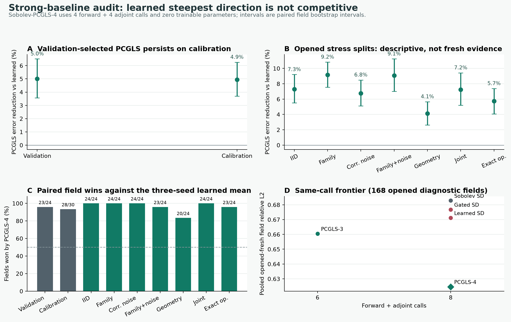
Aᵀr₄；PCGLS-4 与 learned 都是 4F+4Aᵀ。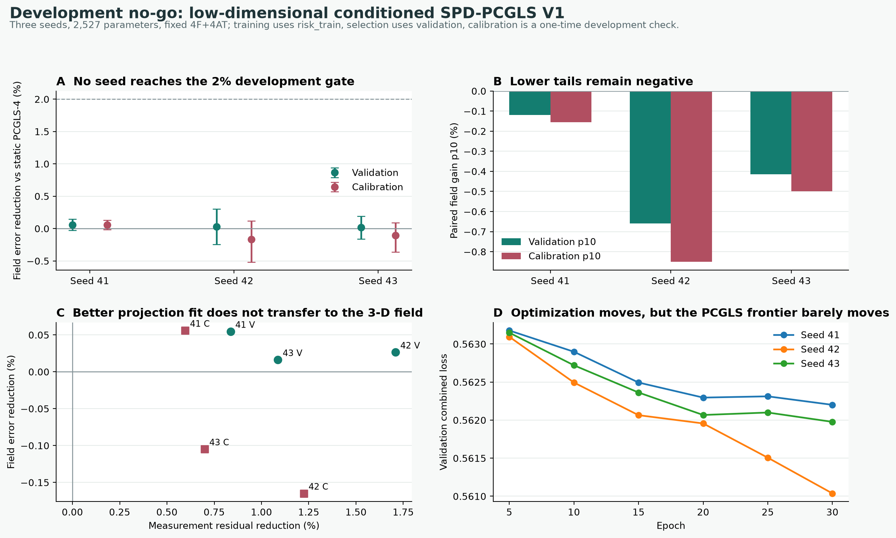
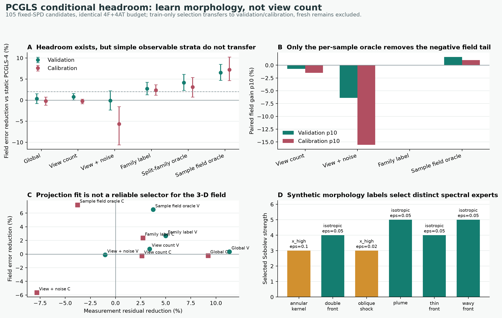
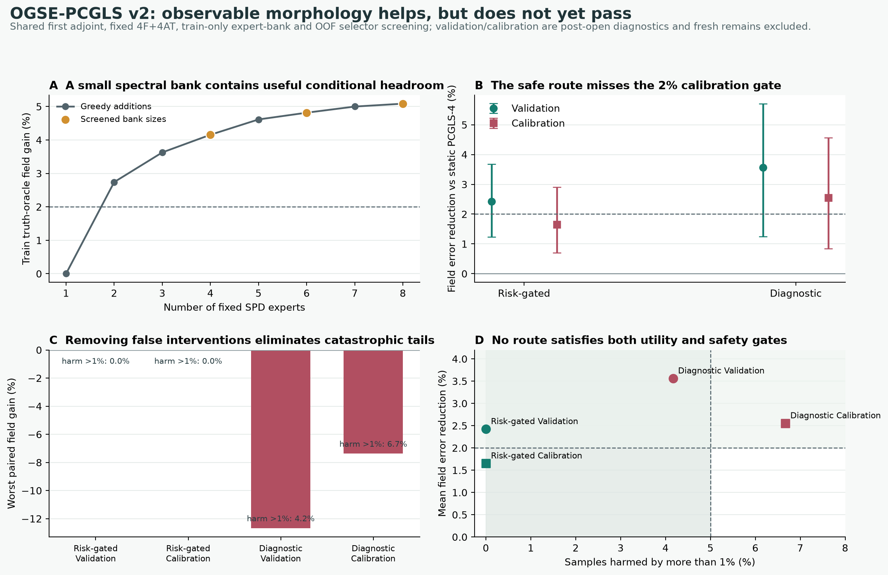
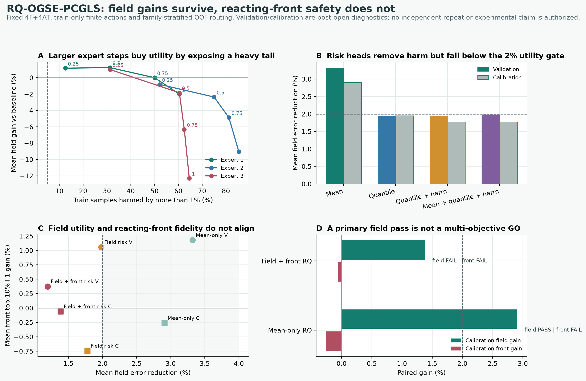
RQ 暴露 pooled g₀ 无法识别哪个相机正在支持或破坏 shock/front。VD0-A 随后加入逐视角伴随冲突，VD0-B 再加入真实 detector graph、局部 Jacobian、front energy 与 camera pose。两轮都按低容量 ridge 和冻结动作库先验收，没有直接跳到 DeepSets。
OCRRG 的特征契约缺陷、四条 accepted harm 和 Multi-Veto 漏掉 plume 都仍是真实缺陷；但即使把这些风险门全部修好，也只能让一个已经弱于 PCGLS 的候选更谨慎。继续在旧 fresh 上调门会同时产生数据泄漏和研究资源浪费。
下一候选需要 hard view-support envelope 与 learned residual-risk trust 同时成立。候选只有在支持域内、且白化 residual 分布与相对 Sobolev 风险均可信时才允许修正。
τ_view=0 时逐值回退，不允许近似 fallback。τ_risk 读取跨相机 residual 均值、最大值、离散度和 correction magnitude。冻结实现只读取第一步可观测量，用 ridge 预测相对 Sobolev 的 gain，再减去 one-sided overprediction quantile。经验 accept / fallback 与重建指标可复现；但 development 与 deployment 的 support 投影顺序不同，所以当前公式只描述设计意图，不再代表有效的 conformal 保证。
solver 实际搜索的是 support 投影后的方向，因此 v2 会只保留一个 canonical feature function，并在 train、validation、calibration、fresh 与 deployment 逐值复用。双支路分数由 opened fresh 启发，只能去新的 independent repeat 接受检验。
四类连续反应流形态代理直接给出 q(x) 与手写解析 grad q(x)；真实 PSU 九视角几何上的 QMC-64 有限孔径积分负责“出题”，QMC-8 体素有限差分算子负责“答题”。它移除一种 inverse crime，但仍是 synthetic morphology，不是 CFD 或实验三维真值。
CGLS 的观测拟合好、场恢复差；强 Sobolev 的场误差低、重投影变差。新模型必须在这个 Pareto 前沿上提供可观测、可回退、跨形态稳定的改善，而不是再训练一个直接输出漂亮切片的黑箱。
y, sigma, view mask, geometry, AᵀWy，不读 family 或 truth。PYTHONPATH=. .venv/bin/python site_tools/run_psu_s16_analytic_renderer_smoke.py \ --config demo_t16_operator/configs/psu_s16_analytic_renderer_smoke_v1.json \ --view-root private_library/external_datasets/psu_bost_flight_body/all_view_geometry_audit \ --output-dir demo_t16_operator/results/psu_s16_analytic_renderer_smoke_public PYTHONPATH=. .venv/bin/python site_tools/validate_psu_s16_analytic_renderer_smoke.py \ --config demo_t16_operator/configs/psu_s16_analytic_renderer_smoke_v1.json \ --output-dir demo_t16_operator/results/psu_s16_analytic_renderer_smoke_public
当前运行约 2–3 秒，Mac 不是瓶颈。32³、更多独立簇和神经基线只有在 16³ 机制门出现足够 headroom 后再开放。
只打开预注册的 rotation-40 development member；rotation 30/60/70/80 仍封存。camera 2/3/4 也参与了 support，真正留出的是 40° rotation run。MATLAB column-major 位移行、官方 ray geometry 与全部 active rows 已逐文件绑定。最新双提交预注册比较固定 16³/32³ CGLS-4 support 场，不拟合幅值、不重新重建，也不是新算法结果。
连续解析梯度负责生成观测，独立体素有限差分算子负责反演；两个 development seed、平滑/单界面场、1% 噪声和 2% camera bias。所有方法严格使用 24 次 forward 与 24 次 reverse/adjoint。真值只进入评分，不进入重建 API。
| 方法 / 轮次 | field relative-L2 | H1 相对误差 | measured reprojection | 严格解释 |
|---|---|---|---|---|
| Huber-PDHG-24 | 0.480119 | 0.874186 | 0.114924 | 当前场与梯度最强经典基线 |
| CGLS-24 | 0.498911 | 1.022353 | 0.003739 | 数据拟合最强，但场误差高于 Huber |
| JACRU M0+bias | 1.987836 | 3.174674 | 1.913683 | 从零联合优化全场失败 |
| JACRU M0.1+bias | 0.769049 | 1.138376 | 0.408105 | 尺度修复有效，但仍是 opened-dev NO-GO |
| JACRU M1 no-bias | 0.495027 | 1.011757 | 0.010213 | 支持“经典底座 + 小残差”方向，不授权方法主张 |
Aᵥᵀ(yᵥ-Aᵥx₀)、pose 和 active mask 作为可观测输入。32 个 train、12 个 development 和 18 个已经打开的探索性 geometry+morphology OOD case；JACRU-M2、pooled 3D CNN、grid DeepONet 与官方 neuraloperator FNO 使用同一 CGLS 底座、同一可见输入和三个模型 seed。结果把下一创新问题钉在了一个可测量的矛盾上：如何保留 learned prior 的场收益，同时回到能够解释相机观测的解集。
| 方法 | Dev field / H1 gain | Dev reproj / CGLS | OOD field / H1 gain | OOD reproj / CGLS | 严格判决 |
|---|---|---|---|---|---|
| JACRU-M2 · 6,440 params | +46.16% / +50.24% | 28.56x | +32.38% / +42.68% | 35.10x | NO-GO：强先验，数据一致性失败 |
| Pooled CNN · 3,549 params | +47.11% / +50.32% | 27.91x | +32.80% / +41.85% | 34.47x | NO-GO：场指标略胜 JACRU |
| Grid DeepONet · 8,162 params | +6.57% / +2.19% | 9.37x | +3.74% / -1.59% | 13.63x | NO-GO：收益不足且有尾部伤害 |
| Pooled FNO · 10,211 params | +39.23% / +40.03% | 40.52x | +19.84% / +25.80% | 53.16x | NO-GO：OOD 最坏退化 34.85% |
第一版不公平地把 24 对 learned 路径与 CGLS-13 比较，已被作废并保留为错误记录。v1.1 对每个 k 同时重跑 CGLS-(13+k)、Huber-(13+k) 和 base-only Landweber，总计 1,620 行 learned 轨迹、450 行经典对照；有限步滤波明确不称为精确零空间投影。
ker(A) 仍不等于连续有限孔径 forward 的零空间；必须用独立 renderer 再投影。12 个几何全部是 150 个独立 measurement 对 1,000 个 active voxel，numerical rank=150、nullity 至少 850。每个几何只做一次 CPU float64 SVD，把网络修正精确拆成 row 与 null 两部分；truth 不进入投影，只进入事后评分。dense setup 不计部署预算、不参与速度比较。
AAᵀv 只需一对 Aᵀ/A；算 b 和最终回投各补一对。ker(A_inverse) 不自动等于真实光学零空间。M2.3 从错误的 reference anchor 出发；M2.4 改成 Ax=y；M2.5 排除逐点 Jacobi；M2.6 找到 camera-local coupling；M2.7 在 24-call 内通过平均重投影门，却稳定伤害一个界面样本；M2.8 连逐样本看真值的连续插值上界都没有救回。这里展示的是可复现的研究判决，不是算法胜利。
| 阶段 | 只回答什么 | 最重要的证据 | 判决 / 后续 |
|---|---|---|---|
| M2.3 reference projection | Ax=Ax_ref 的 matrix-free 近似 | 最好 reprojection 14.79x；终点弱于 matched CGLS | target NO-GO；预条件器不能修终点 |
| M2.4 affine projection | Ax=y 是否可达 | exact residual ≈6e-16；identity CG K=4 仍约 15.93x | 目标可达；有限预算慢 |
| M2.5 exact Jacobi | 逐 measurement scaling 是否足够 | 最好约 15.19x；exact diagonal 仍无 selection | 关闭 diagonal family |
| M2.6 camera block | 相机内相关是否是主要谱结构 | 残差强加速；closure ≈1e-15 | 1001F-equiv oracle；8.33% harm |
| M2.7 K≤10 Pareto | 24-call 内是否存在联合可行点 | K=9 mean reprojection 过门 | 同一界面 case 六种子受害 |
| M2.8 calibration ceiling | 固定/真值最优插值能否救尾部 | 固定 alpha 无通过点；truth ceiling 仍失败 | 停止堆预条件器；转向 noise-aware target |
本轮复用冻结的 M2.7 K=0–10 轨迹，不重训、不看真值选择。26 个 residual-threshold 候选只读取 measured residual、相对 CGLS-12 residual 或 linear-system residual；11 个固定 K 只作对照。结果不是“所有规则都差”，而是早停能保护 field tail、晚停能保护 continuous-clean-target consistency，却没有一个阈值同时保护两者。该指标仍使用同一个 voxel A，不是 independent renderer。
base_residual_x4 平均 K=1.89，JACRU harm 仅 2.78%，但 continuous-clean-target residual 平均仍为 base 的 1.639 倍。base_residual_x1.5 平均 K=3.97，clean-target consistency 已安全，harm 却回到 8.33%，worst 为 -7.55%。64/64/64 个 fit、threshold-calibration、audit repeats 分别估计同 session 均值、camera/component covariance 与未见覆盖率；随后用 dense covariance-weighted anchored Tikhonov 求一个不读 field truth 的机制上界。14 个候选-模型组合全部 NO-GO，0 个 oracle 通过全部门。
| 候选 / 模型 | development field / clean | development tail | OOD field / clean | 为什么失败 |
|---|---|---|---|---|
| paired structured / JACRU | +42.133% / 0.619× | harm 8.33%；worst -6.054% | +34.420% / 0.668× | 稳定界面反例 |
| paired structured / pooled CNN | +41.009% / 0.616× | harm 8.33%；worst -8.891% | +34.292% / 0.667× | 稳定界面反例 |
| unpaired structured / JACRU | +43.169% / 1.207× | harm 0%；worst +0.937% | +34.827% / 1.401× | clean-target 一致性 |
| paired exact mean + IID oracle | 与 paired estimated 几乎一致 | worst -6.169% / -9.002% | 平均增益仍为正 | 精确 nuisance 也救不回 |
| truth-residual oracle | raw-center tail 安全 | 直接读取 field truth | clean ratio 约 9× | 不可部署且一致性失败 |
β 或 proximal operator。G_H-G_L 要有独立均值与 covariance。G_L/G_Lᵀ 与较高保真的 G_H，并记录每次 query？N1.2 修协议，N1.3 拆 mean/whitening/robust loss，N1.4 拆 warm start/edge weighting/regularization strength。结果不是“差一点过门”，而是同一薄界面尾部与 independent-clean consistency 反复冲突；因此 OOD、neural correction 和方法优越性仍全部封存。
| 阶段 | 最强表面信号 | 决定性反证 | 冻结结论 |
|---|---|---|---|
| N1.2 session conformal | candidate calibration sanity 全通过 | 16 decisions、dense/oracle ceiling 均 0 pass | 协议可运行，不授权 fresh |
| N1.3 robust data | field +16.91%；H1 +9.13% | worst -50.91%；clean 1.656× / 3.432× | Huber 只有小幅独立贡献 |
| N1.4 zero-start λ=.2 | field +28.81%；H1 +21.85% | 2113/interface -15.01%；clean worst 3.00× | 强均值不能覆盖稳定受害样本 |
| N1.4 uniform warm λ=.2 | 2113/interface 相对 zero-start +10.66% | 全体相对 zero-start -19.17%；clean worst 4.65× | warm start 只是移动冲突 |
| N1.4 adaptive edge | 27 组 truth-free edge maps | 全部输给 matching uniform | 关闭当前 edge-weight 设计 |
候选、代码、预算、5% field 门和六个 SHA-256 派生的新 geometry seeds 先提交为 67338a0，再一次性打开不可覆盖的确认输出。12 个场全部改善，但 field mean 只有 3.63%，所以不能把稳定小增益改写成算法胜利。
算法严格使用 measured observation、geometry、CGLS-12 warm field/projection；部署 25F/24Aᵀ、零高阶调用。6 个 geometry clusters 一次性打开后，fail-closed 候选 field +3.54%、H1 +8.24%，却相对 component damping -0.18%，takeover 只有 50%。正式状态是 POSTOPEN_NO_GO_NO_CONFIRMATION_ROUTE。
| 分解控制 | field vs low | field vs damping | adjoint residual vs damping | 告诉我们什么 |
|---|---|---|---|---|
| component damping | +3.720% | 0 | 0 | 最简单 deployable strong baseline |
| selected fail-closed | +3.539% | -0.184% | +1.128% | 安全回退工作，预测优势不存在 |
| raw predictor diagnostic | +3.459% | -0.222% | -25.357% | 没有 envelope 时方向明显错误 |
| adjoint rank-4 oracle | +4.985% | +1.440% | +48.309% | 共享 basis 有小空间，尾部仍不安全 |
| measurement-L2 rank-4 oracle | +5.245% | +1.711% | +47.296% | measurement 最优不等于 field 最优 |
| high-order teacher beta=.75 | +4.798% | +1.173% | +17.768% | 稳定教师，部署需 1 次高阶 F |
| exact mismatch oracle | +8.616% | +5.306% | +100% | 物理 headroom 存在，但不是可部署方法 |
A P Aᵀ probe 与 10 步 refine 结果，不放宽半径重判。6 个 geometry clusters、12 个 paired fields 的机器状态是 REPRESENTATION_NO_GO_STOP_BEFORE_LEARNER。它严格指冻结的 rank-4 basis、visible radius 和 17 项门，不是否定所有 Krylov 表示。主 measurement projection 过 14/17；四倍半径事后审计过 15/17，仍没有训练网络或打开 OOD、fresh、final、真实 BOST。
| 冻结对照 | field vs low | field vs damping | adjoint gain | exact retention | 角色 |
|---|---|---|---|---|---|
| component damping refine-12 | +3.720% | 0 | 0 | 43.70% | 最强简单 deployable baseline |
| probe schedule + c=0 | +3.728% | +0.008% | 0 | 43.80% | probe tax / 少两步 refine 隔离 |
| frozen global PCA rank-4 | +4.631% | +0.993% | +28.874% | 54.41% | 同 probe tax 的旧表示对照 |
| measurement projection | +4.828% | +1.193% | +16.281% | 56.72% | 主 representation gate |
| finite-K truth search | +5.560% | +2.020% | +11.728% | 65.31% | 33,780F/33,780Aᵀ evaluator-only |
| 4× radius measurement | +5.556% | +2.013% | +28.364% | 65.26% | post-hoc；无触边；15/17 |
| 4× radius finite-K | +6.186% | +2.731% | +24.239% | 72.67% | post-hoc truth search；16/17 |
| high-order teacher beta=.75 | +4.734% | +1.101% | +17.684% | 55.61% | 1 次 high-order F 的强控制 |
| exact mismatch refine-10 | +8.513% | +5.190% | +100% | 100% | 同 candidate schedule 物理上界 |
五个 basis 全部只读部署可见量、保持 25F/24Aᵀ，并在同一 6 个 geometry clusters、12 个 paired fields 上比较。最优 Camera-Block-6 只差一项重建门，但运行前门槛和独立机制门均不允许“差一点就算过”。结果只授权下一轮 post-hoc 上限诊断，不授权 fresh、learner、OOD 或真实 BOST 主张。
| 冻结表示 | field vs low | H1 vs low | field vs damping | extra-headroom | P Aᵀ gain | 重建门 |
|---|---|---|---|---|---|---|
| Krylov-4 total | +5.319% | +9.695% | +1.734% | 33.628% | 27.025% | 14/17 |
| Fit-PCA2 + Krylov-6 | +5.635% | +9.095% | +2.090% | 40.517% | 38.947% | 15/17 |
| Camera-Block-6 | +6.343% | +13.203% | +2.874% | 57.071% | 9.474% | 16/17 |
| Pose-Fourier-K6 | +6.148% | +13.369% | +2.645% | 52.179% | 8.417% | 16/17 |
| Detector-Moment-K6 | +5.481% | +12.518% | +1.943% | 38.831% | 8.169% | 15/17 |
两个候选只隔离 camera contrast 乘在 warm residual 还是 component damping，其他向量、rank、trust radius 与 25F/24Aᵀ 预算完全一致。Residual 在界面与 H1 上更强，Damping 的 data residual 与 support-adjoint 更好；但二者均未跨过运行前冻结的 extra-headroom 门，所以正式关闭这对候选，而不是挑均值较高者继续训练。
| 冻结表示 | field vs low | H1 vs low | field vs damping | exact retention | extra-headroom | P Aᵀ gain | 重建门 |
|---|---|---|---|---|---|---|---|
| Residual-Contrast Global-K6 | +6.207% | +10.672% | +2.672% | 72.917% | 51.408% | 28.112% | 16/17 |
| Damping-Contrast Global-K6 | +5.452% | +8.768% | +1.888% | 64.042% | 36.864% | 35.787% | 15/17 |
A/Aᵀ、JVP/VJP 或 held-out reprojection 接口并做伴随、单位与 support 测试。我们还没拿到 OERF 最小真实 case，也尚未运行 N2 真实重建算法。下面的 N1 只是独立 synthetic mechanism surrogate，不改变七门合同。第一步仍是向实验室确认七类必要信息；七项齐全后才允许预注册并使用非 audit 组内数据。技术上，这套清单已经落成 JSON schema、空白 intake、语义验证器和脱敏检查结果，真实数据状态仍为 N2_WAITING_FOR_LAB_INPUT。
| 合同门 | 现在 | 需要师兄/数据证明 | 不过门时禁止 |
|---|---|---|---|
| 身份、单位与 support | 待提供 | case/run/session/geometry、来源 manifest、场变量、轴顺序、网格和米制边界 | 禁止猜轴、猜单位或拼接 case |
| 观测与相机几何 | 待提供 | raw/位移、mask、confidence、标定版本、ray bundle 或内外参 | 禁止训练固定 sensor tensor |
| operator 与伴随 | 待提供 | 线性 A/Aᵀ 或非线性 F 的 JVP/VJP、数值与 support 测试 | 禁止同预算 solver 论文主张 |
| 主物理失配 | 待确认 | 只选 aperture / bending / calibration / displacement / discretization 中一个 | 禁止给普通网络事后包装物理故事 |
| 独立 split 与 audit lock | 待提供 | view/sensor/run/session/geometry 单位、互斥列表、时间与可复算 SHA-256 | 禁止 fresh/OOD 措辞 |
| 主终点合法性 | 待确认 | 有独立真值才报 field/H1；否则用固定 mask 的 audit reprojection | 禁止把重投影当唯一 3D 真值 |
| 权限与论文边界 | 待确认 | 本机保存/训练、组会、论文文字/图和公开派生指标分别确认 | 禁止组内文件进入 Git |
我把开放论文、70-view 留出政策、公开归档清单、rotation-40 观测/几何和九视角 B0 A/Aᵀ 逐字段映射到 N2 合同。16 个字段组中，6 个有公开支持、2 个是公开负证据、3 个需本地绑定、2 个缺失、3 个禁止推断；正式七门仍全部关闭。
2160 × 2560 detector shape、像素位移与作者 mask 语义。A/Aᵀ 点积审计。f/22 与 f/32 当同光路孔径因果对照。第一条 N2 机制候选在运行前冻结四个 rig、16/32/64 条高保真子射线预算、32 个重复和五个强基线。原 reference gate 因大孔径工况的 576→1024 差异为 0.4101% 而 HOLD。事后另行冻结的 1024→4096 阶数检查没有重评分候选：两个 development rig 已低于 0.1% 末级线，两个困难 audit rig 仍略高，因此原判决不可改写。
.T 只叫内部转置自洽；生产 renderer 另做独立 adjoint/JVP/VJP。单一折射率 primitive、smoothstep hash、automatic/discrete/hybrid gradient、3D mask 与 occupancy/hierarchical sampling 均已有。N1 只能研究联合光学测度、成本分配与导数安全合同。
网络同时输出折射率与梯度，路径随机采样从 60 增至 200，并用 AD/ND 与双位移预测约束一致性。下一候选的高低保真接口直接从这里产生。
说明有限孔径要对 ray bundle 与路径共同积分，sharp fronts 会受 depth-of-field 平滑。它定义物理问题，不自动证明任何 surrogate 有效。
多项式最小二乘、解析积分与 residual Monte Carlo 已有成熟框架；N0 不能据此主张统计新颖性。
分片多项式控制函数、解析积分与高频 residual correction 已覆盖一般低维积分和复杂光传输。
交叉验证式控制变量和神经可积控制函数都有先行工作；后续强基线必须实现，而不是只在 related work 提一句。
约 8000 points/pixel 指 frustum data-operator 积分点，不是全部 pupil samples。数据可练 loader/geometry/reprojection，不能替代同几何多孔径 OERF 对照。
低保真用 smoothstep 场的自动坐标梯度和 straight path，高保真用六次场查询的中心差分和规定 high path。两者只在 residual 内共享 pupil/path state；低保真均值池 B 与 residual 池 D 独立有放回抽样。四个开发场景都出现 matched-cost 方差收益，但 wrinkled 场的有限参考敏感度没有过 0.1% 线，所以不把平均收益升级成算法结论。
| 开发场景 | 差异来源 | residual / high variance | 半量→全量参考 | matched-cost MSE gain [95%] | 保守计时 gain | 筛选 |
|---|---|---|---|---|---|---|
| smooth_gradient_only | automatic vs central difference | 0.004219 | 0.07696% | 1.784× [1.626, 1.960] | 1.397× | 通过 |
| wrinkled_gradient_only | automatic vs central difference | 0.004418 | 0.12172% | 1.744× [1.559, 1.950] | 1.512× | 参考失败 |
| smooth_coupled_bend | gradient + prescribed bend | 0.02663 | 0.08182% | 1.359× [1.238, 1.492] | 1.102× | 通过 |
| wrinkled_coupled_bend | gradient + prescribed bend | 0.01921 | 0.77863% | 1.396× [1.234, 1.565] | 1.195× | 参考失败 |
mean(cB)+mean(hD−cD) 对 high mean 的统计恒等式可执行。bend 只是规定几何，因此没有轨迹灵敏度 VJP。Vc/Nc+VΔ/NΔ 和最优成本分配。summary.md、metrics.csv 和四联图。.venv/bin/python -m pytest demo_t16_operator/test_automatic_discrete_multifidelity.py demo_t16_operator/test_run_n2_adrc_n1_development_pilot.py -q .venv/bin/python demo_t16_operator/run_n2_adrc_n1_development_pilot.py
直接封住 broad novelty：single primitive、smoothstep hash、automatic/discrete/hybrid gradient、mask 与 hierarchical sampling 均已有。
直接梯度 head 与 refractive-index central difference 共同约束位移；随机路径点从 60 增到 200。要分清它和 2026 single-primitive automatic gradient。
直接表示 deflection/density-gradient field，并用 coarse-to-fine hierarchical sampling 集中查询薄 flame front；这是 path allocation 的强先行基线。
残差 telescoping、成本分配与回归控制变量都有成熟理论；BOST 论文必须把新意放在联合光学测度、可微合同和失效回退。
新内核直接积分 d(n d)/ds = grad(n)，不再使用规定 bend。高保真路径上的位置与方向保留在计算图中；冻结路径对照只去掉场→轨迹链路，因此可以量出 trajectory sensitivity。三组既有开发 rig 的数值门全部通过，但这只说明离散求解器内部自洽，不代表真实 BOST 需要它，更不代表提出了新曲光线方法。
| 开发 rig | 64→128 参考 | 端点动量守恒 | 全轨迹 JVP FD | 1× 轨迹份额 | 首个诊断断点 |
|---|---|---|---|---|---|
| smooth_narrow_aperture | 0.3183% | 0.2147% | 8.14e-9 | 0.0830% | 30× |
| wrinkled_wide_aperture | 0.2609% | 0.0349% | 4.10e-9 | 0.0225% | 30× |
| smooth_wide_aperture | 0.3230% | 0.1961% | 1.06e-8 | 0.0215% | 100× |
∫grad(n)ds 分别独立核对。使用 d(nd)/ds=grad(n)、三次插值和四阶 Runge-Kutta 生成高保真合成 BOS；支持本页的物理方程，不支持方法新颖性。
曲光线路径对折射率场的伴随已有明确先例，因此“实现 trajectory VJP”只能作为基础设施。
cone-ray 与有限孔径 BOS 前向/反演已有系统研究；我们的待验证问题是拓扑安全的随机纠偏，不是有限孔径本身。
single primitive、automatic/discrete/hybrid gradient、3D mask 与 occupancy sampling 均已有，继续约束 broad novelty。
这轮在看结果前先冻结两个 synthetic field families、每家族四个 seed、两个视向、两档孔径、三档应力、256 条共同 Sobol rays、H128/H256/H512 参考与所有门槛。统计单位是 8 个 family × field seed，不是 96 个独立样本，更不是 24,576 条 rays。
GROUPED_FACTORIAL_FAIL_NO_FORWARD_AUTHORIZATION。| 方法 | symmetric pass | 最坏 matched L2 | 最坏 H256 no-harm | 最小 risk Spearman | 最坏 p90/H128 p10 | 当前角色 |
|---|---|---|---|---|---|---|
| N1 continuous affine | 3 / 96 | 0.31193 | 6.63539 | 0.76104 | 0.2328× | 历史候选关闭 |
| OCBH | 73 / 96 | 0.04439 | 2.59969 | 0.96986 | 0.3904× | 机制 teacher / diagnostic |
| Picard-1 | 90 / 96 | 0.002568 | 1.00938 | 0.99993 | 0.1086× | 下一强物理基线；未授权 |
| Picard-2 | 90 / 96 | 0.001935 | 1.00341 | 0.99993 | 0.1622× | 高精度对照；query 1.494× OCBH |
orientation_58 + wide：总输出已接近收敛，但小 matched residual 对步长仍敏感。H-P1 结构化残差，同时对 field L2、per-ray Q95、held-out view 和 VJP dot test 过门。P2-P1 当免费路由特征；算出它时已经支付 P2 查询。定义只控制轨迹弯曲的同伦 r'=normalize(q)、q'=epsilon F_delta(r,q)，但观测积分始终使用完整 F_delta。于是同一步数下 Y(0)=M、Y(1)=H，而 Y'(0) 是精确的离散 trajectory defect。慢的 forward-mode JVP 和快的解析 OCBH 在 float64 容差内一致；同时加入修正过输出 off-by-one 的 Picard-1/2，防止只和弱基线比较。
| 方法 | 最坏 matched residual L2 | 最坏 H256 no-harm | 最坏逐 ray Q95 no-harm | 最小 risk Spearman | 最坏 p90/H128 p10 | 当前结论 |
|---|---|---|---|---|---|---|
| 旧 N1 continuous affine | 0.06854 | 1.77360 | 1.68768 | 0.92592 | 0.0956× | 历史 7/9，不是精确同伦导数 |
| OCBH | 0.01337 | 1.06441 | 1.05611 | 0.99867 | 0.1508× | 9/9 机制桥接；非最佳前向 |
| Picard-1 | 0.001709 | 1.001015 | 1.000944 | 0.99982 | 0.0254× | 当前九格强基线 |
| Picard-2 | 0.000498 | 1.000986 | 1.000908 | 0.99991 | 0.0372× | 当前九格最高精度基线 |
F0+A delta r+B delta d 是完整动力学的一次仿射/Newton 型修正，不是 epsilon F 在零点的一阶轨迹切线。H 没有合理 headroom。H-P1 或 P2-P1，并只在强但无焦散、超过实验噪声的区域启用。successive approximation 和一阶折射路径修正已有明确谱系；Picard 必须成为候选算法的最低比较线。
paraxial/dynamic ray tracing 给出轨迹扰动的成熟理论背景，约束“首次变分曲光线”的错误新颖性表述。
真实相机把 pupil 内多条 ray 平均成像；它与单中心 ray 的轨迹修正是两个不同误差源。
何远哲的神经折射率场是最直接的三维重建宿主；下一步必须在相同几何、观测和预算下接入，不能只比前向小残差。
从直线参考路径 (r0,d0) 出发，N1 把全非线性曲光线相对直线 medium 的轨迹差写成非齐次变分系统。它给出有方向的预测，而不是只用曲率大小猜风险。当前结果证明 matched 128-step 目标上它具有强控制变量余量；但对 256-step reference 的 mixed closure 在两个皱褶宽孔径工况中恶化，所以机器只记录开发信号，不记录算法成功。
H128−M128 relative-L2|H−M| Spearman| 开发 rig | stress | matched residual L2 | 剩余方差比 | risk Spearman | candidate / H256 L2 | reference no-harm ratio | 墙钟比 | 判决 |
|---|---|---|---|---|---|---|---|---|
| smooth narrow | 1× | 0.0464 | 0.0032 | 0.9957 | 0.000842 | 1.000 | 0.088 | PASS |
| smooth narrow | 3× | 0.0467 | 0.0032 | 0.9958 | 0.000838 | 1.000 | 0.088 | PASS |
| smooth narrow | 10× | 0.0486 | 0.0032 | 0.9961 | 0.000829 | 1.006 | 0.088 | PASS |
| wrinkled wide | 1× | 0.0675 | 0.0220 | 0.9262 | 0.000281 | 1.034 | 0.088 | PASS |
| wrinkled wide | 3× | 0.0675 | 0.0219 | 0.9262 | 0.000311 | 1.143 | 0.088 | FAIL |
| wrinkled wide | 10× | 0.0685 | 0.0226 | 0.9259 | 0.000484 | 1.774 | 0.088 | FAIL |
| smooth wide | 1× | 0.0514 | 0.0030 | 0.9932 | 0.000953 | 1.002 | 0.087 | PASS |
| smooth wide | 3× | 0.0514 | 0.0030 | 0.9938 | 0.000952 | 1.005 | 0.087 | PASS |
| smooth wide | 10× | 0.0520 | 0.0030 | 0.9930 | 0.000957 | 1.029 | 0.087 | PASS |
H128−M128 的积分误差会抵消，但 M128+Δ̂128 对 H256 的 mixed closure 不保留这种抵消。弱偏折、背景位移、Gladstone–Dale 与实验误差的一级基线。
一阶折射率扰动路径与 successive approximation 已有明确先例，是 Picard 基线的来源。
扰动折射校正和两种迭代程序已在折射率层析中比较，不能略过。
全非线光线、伴随、Hessian 与辛积分都有成熟先例，N1 必须比较而不能宣称首次。
薄 ray 会漏掉景深模糊；它是轨迹弯曲之外必须分离的实验因素。
在神经折射率场中可微追踪曲光线，是非线性 neural RI inversion 的强外部对照。
何远哲三维 BOST 神经折射率场是最直接的重建宿主；当前 N1 还没有进入其真实数据和指标。
公开记录已提到 ray-path distortion correction；拿到师兄的输入、目标和实现前，不能声称 N1 与它不重叠。
这是本页最新、也是最重要的一轮负结果。低路线 L0 使用直线光线与 automatic gradient，中路线 M 使用直线光线与 central difference，高路线 H 使用场依赖 RK4 曲光线与 central difference。M 成功隔离了 gradient-mode mismatch；但当前 curvature/tube 风险分数没有预测好 H−M，逐 ray 证书又重复计算了大量状态。结论是保留三级结构，淘汰首版路由器和首版执行方式。
Var(H−M)/Var(H−L0)：三级机制有用| 开发 rig | 轨迹残差 / 混合残差方差 | proxy / uniform | oracle / uniform | 严格 future-mask safe | 查询账本 / full H | Mac 实测 / full H |
|---|---|---|---|---|---|---|
| smooth narrow | 0.0481 | 1.0971 | 0.8344 | 1 / 64 | 0.6219 | 2.51 |
| wrinkled wide | 0.00679 | 0.9734 | 0.9068 | 0 / 64 | 0.6219 | 2.51 |
| smooth wide | 0.0917 | 0.9943 | 0.6682 | 10 / 64 | 0.6219 | 2.48 |
Hhat=M+I/π·(H−M)；π>0，unsafe ray 固定 π=1。π=clip(cq, πmin, 1)，而不是“先给 floor 再分剩余预算”。π 与 mask；否则必须加入 sampling-distribution 的 score term。|H−M| 的排序相关在不同 rig 中不稳定，0/9 通过冻结方差门。M、证书和风险特征复用 positions、central gradient、cell id 与 margin；消除 Python 双层循环。δr′=δd 与 δd′=F0+Aδr+Bδd，直接预测有方向和抵消的 H−M。ORACLE_HEADROOM_CURRENT_PROXY_AND_IMPLEMENTATION_NO_GO；未打开 reserved family，未运行真实 BOST，未证明三维重建、跨几何泛化、论文创新或优于 DeepONet/FNO/NeRIF/NeDF。给出不等抽样概率的经典有限总体无偏估计器；本页的 I/π 纠偏不是新贡献。
解释参数依赖采样分布时的 score-function 与 pathwise 梯度边界，支持当前冻结概率合同。
曲光线及其伴随已有成熟先例，因此新意不能放在“能对 ray tracer 反传”。
展示神经场与折射率层析的强相关先行路线；后续必须把多保真贡献与一般 neural field 分开。
何远哲方向最直接的宿主：折射率/密度神经隐式场与 BOST 体重建。真实数据到位后应在它的指标和数据合同内验证。
何远哲最新的 X-Y-Z-T 重建宿主；时间低秩结构与随机 ray fidelity 是后续可检验组合，但当前还没有数据合同。
背景 pattern、算法参数与高梯度结构会改变位移精度和可分辨范围。N2 因此把 raw pair、method、confidence 和 pattern ID 放入合同。
多独立背景可鉴别 pattern-dependent bias；同一背景的 flow-off repeats 主要估时间噪声与漂移，两类证据不再混写。
有限孔径把单 ray 变成 ray bundle；f/22 到 f/4 显示 thin-ray 会平滑 sharp front。“同光路同几何成对采集”是本项目鉴别门，不是论文规定。
多姿态标定、共同全局坐标、固定 mask 与 validation views 给出合同范式；该论文没有直接研究 calibration drift。
九个光纤输入端形成九路投影；合成生成使用 RK4 弯曲光线，而当前 inversion 的标称路径建模差异是审慎推断，不是已完成消融。
v3 的每个 partition 都保持 MP≥|A|，但安全不等于选得准。v4 使用部署可见 geometry、冻结三阈值、95% 联合 family budget 和 paired_cross 回退。首轮校准没有同时得到风险与 coverage 证据，因此全局关闭 selector；这证明 fail-closed 路径可执行，不证明候选算法有性能价值。
A=ΣCℓ、单位、support 与 grouping 维度MP ≥ |A|，任何模型选择都保持安全初版在 held-out rig 上先算 exact mass 再取 max(prediction, exact)，只能保证额外阻尼，既没有省掉 exact sweep，也不能称部署代理。
K=32 时 learned 为 0.40398、exact 为 0.36928，learned 平均差 9.40%；一个 rig 改善、一个明显恶化，不存在 aggregate superiority。
calibrated mean field 为 151737.302297、39 次 violation；raw learned mean 为 2.180e26、68 次 violation。只有 factor 与 exact 保持零违反。
130 次 partition 审计零违反；selector mean 0.437171 对 best fixed 0.489638，但最坏 rig 绝对恶化 0.414402，因此仍未过逐 rig 性能门。
8/6/12/8 四路完整 rig；136 次 partition/actual-A 审计零违反。校准诊断接管 1/12，Bonferroni 后风险上界 0.991667、coverage 下界 0.000697，均不过门；获准 coverage 为 0，8/8 fresh 全部回退。无接管样本，所以 worst takeover harm 是未定义，不是 0。读红队过程
J=ΣCℓ，不能把整个 NeRIF 优化过程当作线性 primitive 分解。它们来自同一个真实流场，只是从九台相机中确定性选择 6–9 台。相机子集能检查表示对缺视角的敏感性，却没有增加物理独立重复数；统计结论必须仍写作 n=1 real field。这条边界避免用组合数量伪造实验样本量。
risk_train、validation、calibration 和旧 fresh 都已用于机制诊断，不能继续调到好看。真实 PSU 当前也只有一个物理场，不能训练路由或估论文方差。新的 noise model 必须先在 flow-off 留出帧和未参与拟合的相机上过门，再生成全新的 synthetic morphology/noise/view split。
L/Lᵀ whitening、真实 detector graph、严格调用记账。保留价值：结构指标、调用预算与失败门继续用于 Metric-A/B；旧分支不打开 fresh、不追加调参。
它们不是当前训练并行线，避免在没有对应证据时同时摊开三个大模型。
连续 mass 回归已由 v2 关闭；v3 证明安全 partition 可构造，v4 又证明当前 selector 的可靠覆盖几乎为零。下一轮不能继续扫网络，而要在未使用的 split 上预注册 support-set、接入空间层析的 front 指标，并确认真实 BOST primitives；这些门通过后才考虑全局历史，连续 4D 仍等待独立序列与 metadata。
把固定线性化算子拆成 signed primitives；每个 partition 由三角不等式保证 MP≥|A|。模型只决定是否接管；不满足校准风险、coverage 或支持域门时回退冻结的 paired_cross。
J=ΣCℓ，或真实 exact 构造并不比分组昂贵，立即停止在同一个 2,322-coordinate reduced support 内，用有限 residual/gradient history 构造低秩 global direction；每个候选方向都由 signed Aq 与预冻结 trust region 验证，不能借 full-support graph teacher 偷换先验。
h=0、r=0、fixed vs geometry-conditioned basis、无 line search、无 fallbackAq calls 使 wall-clock 无优势，或 OOD field/front 尾部恶化，即停止 learned global branch网络只输出时变正则强度、停止概率、区间与 reject flag；输入是 residual history、timestamp、exposure、sync/dropout、flow-off 和 event proxy，不直接生成未经物理验证的 4D 场。
每条 ray 用几何条件化小网络生成局部 3D 核，校正 thin/high-fidelity aperture discrepancy；同一核给出 forward/adjoint。没有多 f-number、focus 或 calibration phantom 时不继续。
以 TDBOST 为直接基线，把可输运低秩主体和稀疏创新拆开，专门评估新生、熄灭、拓扑断裂、缺帧和相机异步。
若组内数据延迟，完成结构证伪链、PCGLS 强基线、真实数据 loader/adjoint audit 和一套可复现 benchmark；论文主张保持关闭。
没有公开资源同时提供多光圈、多布局、受限 forward、可核验 adjoint 与实验三维真值。PSU、photon 和 OERF 各自只承担一段证据，不能拼成“已经外部成功”。
验证伴随、梯度、support、field/front error、消融和统计协议。
不能证明：真实成像链或模型失配。
打开当前可复现实验photon CUDA renderer在 NVIDIA/CUDA 服务器冻结 f-number、focus/object distance 与 camera layout，生成 fresh-A/B/C 和已知密度场，做跨 renderer synthetic smoke。
不能证明：真实光学或 OERF 有效；仓库也没有现成精确 Fᵀ。
70 views 中按公开流程做 9-view NIRT、held-out deflection、真实 mask/噪声/标定 loader，只检验固定装置 reconstruction/reprojection consistency。
不能证明：跨 f-number 泛化或实验 field-L2；f/32 与 f/22 属于不同相机/镜头，不是 aperture sweep。
数据 DOINeRIF 数据需合理请求；TDBOST 公开代码无根许可证且投影器/完整数据不齐。只有独立 session、phantom、held-out camera 或 timestamp 合同满足后，才打开 apparatus-specific 或 TRAIL-4D 主张。
不能公开：未授权训练包、组内原始数据与私有派生产物。
NeRIF · TDBOST 只读入口SCHEMA_CONFORMANT，没有运行 NIRT、没有 held-out reprojection、没有三维结果。原数据与派生产物只在忽略 Git 的本机私有存储中保留。其余文件包含待匹配公开版、重复项或失败下载，不能把“磁盘里有文件”当成“已审计全文”。私有库继续本机使用，公开页面只放 DOI、合法开放全文与自写分析。
一级来源地图已核验 23 项文献、47 个唯一链接，并把每篇拆成“证明了什么、不能证明什么、要提取什么、对应 A/B 的角色”。先掌握逐元素绝对质量与逆问题停止，再进入 BOST 物理和 learned solver；NeRIF/TDBOST 放在最后做组内创新边界。
|A| 行列和为什么给出对角安全条件，再读 inverse-problem semi-convergence；能解释“residual 下降不等于 field 下降”后，才进入 learned preconditioner。文献地图已把 exact oracle、calibration envelope 和真正部署证书分成四栏。读：continuous refractive-index/gradient field、9 视角合成/实验设计、光路积分与 Bunsen flame。
边界：数据是合理请求，不存在可直接宣称已复现的公开训练包；我们的 few-query operator correction 也不能冒充首个 neural-field BOST。
读：XY-ZT/XZ-YT/YZ-XT 张量分解、轻量网络与时空保真。
边界：公开仓库可只读审计数据格式与 4D 结构，但无根许可证、投影器和完整数据不齐；未经授权不改作、不重发。
读：折射率重建如何进入 PIV 速度误差补偿。
提取：未来主指标是否应从 field L2 转为 velocity correction。
读：70 views、9-view limited-data reconstruction、NIRT + TV、held-out deflection 与实验 state estimation。
提取：数据集给了真实相机/位移/几何和独立 view 设计，但单个流场不能替代 flow-off noise repeats。
读：背景相关、空间分辨率、路径积分、Gladstone-Dale、背景质量与 correlation noise。
提取：detector feature 失配可能来自背景、窗口、噪声与处理链，不能自动解释为真实 shock。
读：光流如何解析局部高梯度、位移场如何连接密度梯度，以及 shock 附近的空间保真。
提取：验证 front proxy 时必须同时考虑位移估计算法、reference frame 与高梯度 blur，不能只调路由器。
读：多独立 reference backgrounds 与 median displacement 怎样降低背景相关系统误差。
提取：同背景 flow-off repeats 用于时间噪声与慢漂移；background-dependent bias 需要多个独立背景或受控背景位移，不能把两类证据混成一个标量 σ。
读：spectral kernel、mode truncation、resolution experiment 与 factorization。
提取：thin-front 高频丢失和规则网格偏置。
读：把 neural operator 作为 flexible conjugate-gradient 的非线性预条件器、Krylov residual 采样和 solver-aligned loss。
边界：“神经算子 + Krylov preconditioner”已由 ICML 2024 占据；我们的贡献必须来自 BOST 梯度观测、有限孔径失配、可变相机集与严格回退证据。
读：如何用 calibration data 预计算谱滤波器、风险函数与参数选择，而不是默认手工 Tikhonov。
提取：learned spectral direction 必须同时比较 validation-selected Sobolev、Tikhonov/TSVD 和非神经最优滤波；仅出现 Fourier multiplier 不构成新意。
读：静态 residual 预训练后，再用 Krylov 子空间主角度做 solver-aligned 微调。
边界：这是 2025 预印本，不是 BOST 证据；它提示下一轮 loss 应关注迭代轨迹和跨几何，而不只看最终 field loss。
读：branch/trunk、sensor/query 与 inverse operator 组合。
提取：固定 sensor branch 为什么不天然适配可变相机集合。
读：不规则几何到 latent grid、可变传感器置换不变编码。
提取：ray-set encoder 必须击败的结构对手。
读：每层 forward/adjoint、learned primal/dual memory 与 CT 设定。
提取：CG-PDNO 不能重复声称“首次把物理算子放进网络”。
读：I-A⁺A 投影、数据一致性与收敛边界。
提取：reprojection 好不等于场正确；VN-UQNO 的理论起点。
读：受限 optical access、少角度 density-gradient field 与 nonlinear ray-traced LES。
提取：普通 sparse-view neural field 位置已经被占据。
读：physics-informed inverse、posterior uncertainty 与可观测性。
提取：不确定度必须校准，而不只是 ensemble 方差。
读：raw distortion 与 volumetric reconstruction 的统一优化。
提取：RI-DualBOST 必须证明跨 pattern 泛化或 uncertainty propagation 的独立价值。
读：70 views、NIRT/TV、9-view limited reconstruction 与 held-out validation deflection。
提取：第一个真实 loader 与相机留出协议；不要把站内简称当正式方法名。
读：learned optimizer 与 generic fallback 的条件切换、OOD 与收敛边界。
提取：“learned + fallback + gate”不是空白；BOST 必须给出自己的可观测门控证据。
读：校准样本、风险函数、有限样本控制与交换性假设。
提取：当前 one-sided gain bound 只能约束同分布校准语境；任意 morphology/noise OOD 不自动受保证。
读：怎样让风险控制随样本难度自适应，而不只依赖人工给定的离散群组。
提取：它支持“学习难度条件”的方向，但当前 BOST calibration 太小；v2 先限制为两个物理 stress 支路，不能直接声称任意条件控制。
读：当算法先挑出“值得接管”的样本后，为什么普通 marginal coverage 不能自动转成 risk | accept。
提取：OCRRG 的下一理论版本要审计 selection-conditional target；coverage 与 accepted harm 必须同时报告。
读：学习预条件器如何进入 CG、solver-aligned 训练与 DeepONet 线性系统预条件。
提取：“网络做预条件器”不是新意；BOST 贡献必须来自梯度观测、强 Sobolev、可变相机、可观测风险门与 exact fallback。
读：当预条件器随迭代变化时，为什么要显式正交化搜索方向，以及变化幅度怎样影响收敛。
提取：静态 learned multiplier 可继续用标准 PCGLS；只要让网络逐步看 residual，就必须转入 flexible CG 对照，不能沿用标准 PCG 叙事。
读：GNN 如何生成稀疏 incomplete factorization，以及只靠 matrix-vector products 的 stochastic Frobenius loss。
提取：可逆/稀疏因子和 solver-level 迭代下降已经有成熟先例；我们的低维频谱参数化必须在 matrix-free BOST、可变相机与跨分辨率上形成差异。
读：Unitary Neural Operator 作为机器学习预条件器，怎样把收敛性质嵌入混合 CG solver。
提取：“FNO 风格网络 + CG + convergence by construction”本身已不够新；BOST 方法必须给出梯度测量、几何条件化、前沿保持和真实 held-out camera 的专属证据。
读：在保持投影数据一致性下降的同时，用 total variation 作为次级准则改善病态层析图像。
提取：thin front 改善若可由非学习 TV superiorization 获得，就不能归功于神经预条件器；它必须进入同 calls 或同 wall-time 对照。
读：把白化 data fidelity 与 3D TV/Huber 写成 saddle-point，推导 primal/dual proximal、算子范数步长条件与 ergodic convergence。
提取：scalar 与 factor Gate B 都已严格失败；现在阅读它是为了能解释 NO-GO、审计后续论文基线，不是继续调当前分支。
读：Pock–Chambolle 如何由算子绝对行列和构造 primal/dual 对角度量，以及为什么正负抵消后的 K1 不能代替 |K|1。
提取：Diag-D0 已完成 tightness 与长轨迹诊断；下一步学习 exact mass 的低成本近似，同时保留 Schur audit、signed physics 和 geometry-OOD。
读：固定预条件度量下的收敛条件、条件紧性与何时不能直接沿用 scalar CP 定理。
提取：第一版坚持固定正度量与安全 majorizer；若让网络逐迭代改变 metric，必须重新证明受控变化，不能借用固定度量结论。
读：CT 中 data fidelity、TV、有限差分与伴随的 problem prototyping。
提取：“PDHG + 层析 + TV”早已存在；本科阶段真正可交付的是正确离散、块尺度、可复现实验和诚实的失败门。
读：f/22 到 f/4 的真实有限孔径实验，以及 cone-ray forward/inverse 如何解释 thin-ray 失配。
边界：论文是最直接的物理依据，但数据和代码未公开；不能把阅读证据写成已跑外部 benchmark。
读：用连续 RBF 参数化折射率/密度场并直接处理 BOS tomography 的 forward/inverse。
提取：RayKernel-DCO 不能只比 voxel ridge；必须证明 operator correction 对连续场重建也有价值。
读：forward 与 adjoint correction、收敛条件和 approximation error。
提取：不能只学 forward residual；伴随与 inverse stability 也要审计。
读：低保真 operator 与少量高保真数据如何学习 residual correlation。
提取：“便宜物理 + 少量高保真修正”不是 SRCO 的新意；必须把贡献限定在 BOST 结构、查询协议、噪声门和 inverse 证据。
读：learned restriction 与 simplified-physics correction 两条范式。
提取：RigCal 先做低维物理参数，学习模块只能在剩余 discrepancy 有证据时加入。
读：ideal / mismatched / oracle-corrected / blind-calibration 四情景。
提取：复现实验表应分开“模型本身强”与“对 mismatch 稳健”。
读：有限样本风险控制、coverage 与 reject option。
提取：v5b 必须报告 risk | accept，并说明保证依赖的交换性/分布假设。
读：pinball loss 怎样从条件均值转向条件分位数，以及不同分位对应什么不对称误差代价。
提取：RQ0 不再最小化专家 gain 的 MSE，而是直接估计低分位；但小样本下分位估计仍需 OOF 和独立 calibration。
读：分位模型如何用 held-out residual 做有限样本区间校准，以及异方差下为何比固定宽度区间更有效。
提取：可用于构造 per-expert gain lower bound；保证依赖交换性，不能自动覆盖新形态、真实 OERF 或 selection-conditional risk。
读：多个未知信号、未知测量增益、稀疏先验与显式 normalization gauge。
提取：共享多场和固定尺度都不是新意；反应场也不自动满足稀疏假设。
读：消去线性变量后的 reduced objective/Jacobian 与约束处理。
提取：VarPro 改善优化效率，不会消除 gauge 或凭空制造孔径信息。
读：hat matrix、effective degrees of freedom 与未知噪声下的预测风险。
提取：为什么不同孔径算子不能只比较各自最小训练/CV residual；先把模型复杂度写进分母。
读：已知噪声水平时，选择恰好把 residual 降到噪声尺度的正则。
提取：把 v5c 的 truth-scaled sigma 替换成 flow-off 标定，是走向真实 BOST 的必要条件。
读：Reeves 与 Mersereau 已用 GCV 联合识别 blur、图像模型和正则参数。
提取：“联合选光学参数与正则”不是原创；我们的新意必须来自 BOST 物理、泄漏控制和真实 f-stop 证据。
读：结构不可辨识、实际不可辨识、完整 profile 与实验设计。
提取：局部正曲率不等于全局唯一；结构失败需要新测量而不是更强网络。
读：模型误差如何把物理参数估计推向错误值。
提取：观测拟合改善不能证明 effective aperture 等于真实入口瞳。
读：不精确 forward 下的 subspace/stripe 更新与 learned inexactness。
提取：未来 discrepancy-aware BOST 必须与它比较，不能只打普通 FNO。
读：differentiable ray model 如何联合优化几何参数与重建。
提取：“联合几何校准 + 重建”已不是空白；新意必须落在 BOST 的 ray-local aperture discrepancy、少查询和严格伴随。
读：hash encoding、离散梯度、3D mask 与大规模折射率场表示。
提取：更强编码器本身不是 RayKernel-DCO 的创新；未来 inverse 比较不能故意用弱 neural field。
读：满足 secant 条件的最小改动、Broyden 更新与结构约束。
提取：低秩 residual update 公式不是新意；需要 BOST 结构保持、probe 设计和误差界。
读：misspecified physics prior 加 learnable correction 的通用框架。
提取：“物理算子 + 加性校正”已经被直接提出；SRCO 只能从 strict query、BOST 几何、noise gate 和 inverse consistency 建立差异。
读：有限预算下的观测设计、相关误差 covariance 与信息准则。
提取：主动选择观测不是新意；BOST probe 必须用 flow-off covariance 做 whitening/加权，并与随机正交同预算比较。
读：主动输入函数、分辨率、极端事件与选择性时间步怎样节约高保真数据。
边界：这些方法选训练样本或时间步，不等于在目标 rig 上选校准输入向量；只能启发 acquisition，不能充当 SRCO 的直接先例或胜出证据。
基础薄弱时不要从“发明大网络”开始。先能手推 Ax=y、CGLS/PCGLS、anchored Tikhonov 与 discrepancy principle；再复算 N1.1 的 covariance、coverage、raw-center harm 和 model-mismatch floor。只有经典、固定、可解释的方法先过 field、continuous-clean-target、tail、coverage 与成本门，才进入 bounded operator learning。
Ax / AᵀzL/Lᵀ、B/Bᵀ 与同调用 PCGLSMP≥|A|九个 support views 已通过 shard、mask、setup、SHA-256、shape、dtype 和上下游 manifest 重验；B1 参数依赖、全量 float64 伴随、固定预算 CGLS measurement fit 与同 calls 分辨率审计也已执行。这里没有独立实验三维 truth、held-out reconstruction 或算法性能主张；70-view final payload 仍封存。
仍不能声称：support fit 等于真实 3D truth、held-out camera 泛化、TensorFlow NIRT、NeRIF/FNO/DeepONet superiority、25 度 cone 的物理边界含义。
| 层级 | 空间域 | 当前证据 | 判决 |
|---|---|---|---|
| A0 author exact | 双锥非零优先；miss 回 box | 0/3/6 视角域不一致；pooled 域外 9.8976% | 真实训练 NO-GO |
| A1 clipped hybrid | A0 裁入前向 box；保留 fallback | 移除总路径 2.4282%；正长度端点机械合法 | 兼容消融，不是固定域 |
| B0 forward box | 显式 t≥0 slab 固定计算域 | 49,515,803 条命中；端点/长度/有限性不变量通过 | 保守主基线 |
| B1 one-nappe cone-box | box ∩ 单叶锥；miss 不回退 | 机械通过；B1/B0 路径 15.188%；1,350 active miss | 待 axis/vertex/angle 物理审核 |
| B2 aperture indicator | 逐样本 1_D(x)；固定原分母 | 8/16/32 点完成；active B1 最低保留 99.9644% | 离散支持审计完成 |
| B3 geometry-safe mask | keep / empty / 87.5% / 93.75% / any-OOD | 不改标签；strict policy 在 QMC-32 删除 99,617 active B1 | 政策未选择；held-out 锁定 |
| B4 parameter stress | axis / 15-35° / vertex ±5 mm | 12 变体九视角完成；axis flip active IoU = 0 | 依赖已量化；不得选参 |
| H0 70-view protocol | 9 support / 7 dev / 54 final audit | 70/70 无重叠；primary 为六个 rotation blocks | 协议冻结；payload sealed |
| I0 B0 inverse interface | scalar perturbation + zero-boundary gauge | 真实几何 16³/32³ exact A/Aᵀ 通过；合成 inverse 闭环 | 接口通过 |
| I1 full support CGLS | 10,628,822 rays；QMC16；float64 | dot 3.46e-15；固定 4 步 residual 0.78771 | 数值闭合；无 field truth |
| I2 support resolution gate | 16³ vs 32³；同 support rays、dtype、4F+5Aᵀ | 0.78771 → 0.62713；九个 support views 全部改善 | 只保留为 support-fit reference；等待旋转迁移门 |
| I3 rotation-transfer gate | 同 camera 2/3/4；rotation 40；3,847,050 rays；各一次 forward | 0.843263 → 0.959591；三相机全部退化 | 32³ 分辨率扩展 NO-GO；转向受约束 coarse-to-fine correction |
| I3 exact compact cache | 固定 lower corner/fraction/projection/scale | F/Aᵀ diff 0；pair 2.225×；CGLS 2.909× | 后续 32³ 快速物理层 |
最短链依次复核 D0 根因诊断、v2 oracle-free 失败和 v3 grouped-majorizer 结果；每一步都有聚焦测试、validator、公开图表与 checksum。旧 RQ/VD/covariance/PSU 全链仍保留在折叠档案中，但不再占据当前入口。
# Diag-D0：核心、runner 与独立 validator tests PYTHONPATH=. .venv/bin/python -m pytest -q \ demo_t16_operator/test_psu_b0_exact_absolute_diagnostic.py \ site_tools/test_run_psu_b0_exact_absolute_diagnostic.py \ site_tools/test_validate_psu_b0_exact_absolute_diagnostic.py \ site_tools/test_analyze_psu_b0_exact_absolute_diagnostic.py # 61 项正式 release 复核；Gate B 必须保持关闭 PYTHONPATH=. .venv/bin/python site_tools/validate_psu_b0_exact_absolute_diagnostic.py \ --config demo_t16_operator/configs/psu_b0_exact_absolute_root_cause_v3_cpu64_audit_amendment.json \ --evidence demo_t16_operator/results/psu_b0_exact_absolute_root_cause # 重建公开表图并逐文件核 checksum PYTHONPATH=. .venv/bin/python site_tools/analyze_psu_b0_exact_absolute_diagnostic.py (cd demo_t16_operator/results/psu_b0_exact_absolute_root_cause_public && \ shasum -a 256 -c checksums.sha256) # Metric-A v2：oracle-free，但严格 NO-GO PYTHONPATH=. .venv/bin/python -m pytest -q \ demo_t16_operator/test_cancellation_aware_metric_surrogate.py \ site_tools/test_run_cancellation_aware_metric_surrogate_smoke.py \ site_tools/test_analyze_cancellation_aware_metric_surrogate_smoke.py PYTHONPATH=. .venv/bin/python site_tools/run_cancellation_aware_metric_surrogate_smoke.py PYTHONPATH=. .venv/bin/python site_tools/analyze_cancellation_aware_metric_surrogate_smoke.py # v3：构造安全，选择性能仍 NO AUTH PYTHONPATH=. .venv/bin/python -m pytest -q \ demo_t16_operator/test_certified_grouped_majorizer.py \ site_tools/test_run_certified_grouped_majorizer_smoke.py \ site_tools/test_analyze_certified_grouped_majorizer_smoke.py PYTHONPATH=. .venv/bin/python site_tools/run_certified_grouped_majorizer_smoke.py --validate-only PYTHONPATH=. .venv/bin/python site_tools/analyze_certified_grouped_majorizer_smoke.py
PYTHONPATH=. .venv/bin/python -m pytest -q # 当前主线最短复核：上限、可观测特征、专家路由、论文图 PYTHONPATH=. .venv/bin/python -m pytest -q \ demo_t16_operator/test_psu_b0_classical_baselines.py \ demo_t16_operator/test_psu_b0_initial_normal_features.py \ demo_t16_operator/test_psu_b0_morphology_spectral_experts.py \ site_tools/test_run_psu_b0_pcgls_conditional_headroom.py \ site_tools/test_run_psu_b0_observable_morphology_probe.py \ site_tools/test_run_psu_b0_omse_pcgls_development.py \ site_tools/test_run_psu_b0_ogse_pcgls_development.py \ site_tools/test_plot_psu_b0_ogse_pcgls_development.py PYTHONPATH=. .venv/bin/python site_tools/plot_psu_b0_ogse_pcgls_development.py \ --input docs/psu_b0_ogse_pcgls_development_public_summary.json \ --output demo_t16_operator/results/psu_b0_ogse_pcgls_development/psu_b0_ogse_pcgls_development_figure.png # RQ 单专家、field/front 多目标审计与论文图；全部排除 fresh PYTHONPATH=. .venv/bin/python -m pytest -q \ demo_t16_operator/test_psu_b0_risk_quantile_experts.py \ site_tools/test_run_psu_b0_rq_ogse_pcgls_development.py \ site_tools/test_run_psu_b0_mo_rq_ogse_pcgls_development.py \ site_tools/test_plot_psu_b0_rq_ogse_pcgls_development.py PYTHONPATH=. .venv/bin/python site_tools/run_psu_b0_rq_ogse_pcgls_development.py \ --config demo_t16_operator/configs/psu_b0_rq_ogse_pcgls_development_v1.json \ --development-report private_library/external_datasets/psu_bost_flight_body/b0_residual_risk_development_v1/private_report.json \ --probe-private-report private_library/external_datasets/psu_bost_flight_body/b0_observable_morphology_probe_v1/private_report.json \ --view-root private_library/external_datasets/psu_bost_flight_body/all_view_geometry_audit \ --device mps \ --private-output private_library/external_datasets/psu_bost_flight_body/b0_rq_ogse_pcgls_development_v1/private_report.json \ --public-output docs/psu_b0_rq_ogse_pcgls_development_public_summary.json PYTHONPATH=. .venv/bin/python site_tools/run_psu_b0_mo_rq_ogse_pcgls_development.py \ --config demo_t16_operator/configs/psu_b0_mo_rq_ogse_pcgls_development_v1.json \ --development-report private_library/external_datasets/psu_bost_flight_body/b0_residual_risk_development_v1/private_report.json \ --probe-private-report private_library/external_datasets/psu_bost_flight_body/b0_observable_morphology_probe_v1/private_report.json \ --rq-private-report private_library/external_datasets/psu_bost_flight_body/b0_rq_ogse_pcgls_development_v1/private_report.json \ --view-root private_library/external_datasets/psu_bost_flight_body/all_view_geometry_audit \ --device mps \ --private-output private_library/external_datasets/psu_bost_flight_body/b0_mo_rq_ogse_pcgls_development_v1/private_report.json \ --public-output docs/psu_b0_mo_rq_ogse_pcgls_development_public_summary.json PYTHONPATH=. .venv/bin/python site_tools/plot_psu_b0_rq_ogse_pcgls_development.py \ --rq docs/psu_b0_rq_ogse_pcgls_development_public_summary.json \ --multi docs/psu_b0_mo_rq_ogse_pcgls_development_public_summary.json \ --output demo_t16_operator/results/psu_b0_rq_ogse_pcgls_development/psu_b0_rq_ogse_pcgls_development_figure.png .venv/bin/python demo_t16_operator/run_v5p_fresh_budget_gate.py .venv/bin/python demo_t16_operator/run_v5q_postopen_topology_diagnosis.py .venv/bin/python demo_t16_operator/run_v5r_reserved_view_reliability_diagnosis.py .venv/bin/python demo_t16_operator/run_v5s_dco_low_rank_screening.py .venv/bin/python demo_t16_operator/plot_v5s_dco_low_rank_screening.py .venv/bin/python demo_t16_operator/run_v5t_camera_local_tangent_diagnosis.py .venv/bin/python demo_t16_operator/plot_v5t_camera_local_tangent_diagnosis.py .venv/bin/python demo_t16_operator/run_v5u_calibrated_renderer_residual_screening.py .venv/bin/python demo_t16_operator/plot_v5u_calibrated_renderer_residual_screening.py .venv/bin/python demo_t16_operator/run_v5v_camera_local_kernel_correction.py .venv/bin/python demo_t16_operator/run_v5w_clean_aperture_kernel_screening.py .venv/bin/python demo_t16_operator/run_v5x_ray_conditioned_voxel_kernel.py .venv/bin/python demo_t16_operator/run_v5y_direct_ray_conditioned_kernel.py .venv/bin/python demo_t16_operator/run_v5z_stabilized_direct_ray_kernel.py .venv/bin/python demo_t16_operator/run_v6a_ray_kernel_hypernetwork_development.py .venv/bin/python demo_t16_operator/run_v6b_protocol_conformance.py .venv/bin/python demo_t16_operator/run_v6c_hybrid_gate_secant_postopen.py .venv/bin/python demo_t16_operator/run_v6d_df_gated_srco_postopen.py PYTHONPATH=. .venv/bin/python -m pytest -q \ demo_t16_operator/test_limited_query_calibration.py \ demo_t16_operator/test_v6b_protocol_conformance.py \ demo_t16_operator/test_v6c_hybrid_gate_secant_postopen.py \ demo_t16_operator/test_v6d_df_gated_srco_postopen.py .venv/bin/python demo_t16_operator/plot_v5s_v6a_operator_structure_funnel.py .venv/bin/python demo_t16_operator/build_v5p_v6a_release_manifest.py .venv/bin/python demo_t16_operator/validate_v5p_v6a_release.py # PSU 下载、schema、数值 loader 与官方入口 preflight；不等于 NIRT 已复现 .venv/bin/python site_tools/psu_bost_selective_fetch.py --refresh-index .venv/bin/python site_tools/psu_bost_selective_fetch.py --fetch-minimal PYTHONPATH=. .venv/bin/python -m pytest -q \ site_tools/test_psu_bost_selective_fetch.py \ site_tools/test_psu_bost_mat_audit.py \ site_tools/test_psu_bost_mat_sample.py \ site_tools/test_psu_bost_loader_conformance.py \ site_tools/test_official_nirt_preflight.py \ site_tools/test_build_psu_public_summary.py # PSU A0/A1/B0/B1/B2/B3 合同实现与公开汇总；私有输入路径不写入网页 PYTHONPATH=. .venv/bin/python -m pytest -q \ site_tools/test_run_psu_all_view_geometry_audit.py \ site_tools/test_psu_bost_domain_clipped_geometry.py \ site_tools/test_psu_bost_forward_geometry.py \ site_tools/test_run_psu_fixed_domain_geometry_audit.py \ site_tools/test_psu_bost_aperture_domain.py \ site_tools/test_run_psu_aperture_domain_audit.py \ site_tools/test_psu_bost_geometry_safe_masks.py \ site_tools/test_build_psu_aperture_sensitivity_public_summary.py \ site_tools/test_build_psu_b3_policy_public_summary.py \ site_tools/test_build_psu_all_view_public_summary.py \ site_tools/test_build_psu_clipped_hybrid_public_summary.py \ site_tools/test_build_psu_fixed_domain_public_summary.py \ site_tools/test_build_psu_b1_parameter_sensitivity_public_summary.py \ site_tools/test_validate_psu_heldout_camera_protocol.py \ site_tools/test_score_psu_heldout_reprojection.py \ site_tools/test_plot_psu_all_view_geometry_audit.py \ site_tools/test_plot_psu_clipped_hybrid_audit.py \ site_tools/test_plot_psu_fixed_domain_geometry_audit.py \ site_tools/test_plot_psu_b3_policy_audit.py # 同预算经典/PCGLS 强基线；只在 development validation 选参 PYTHONPATH=. .venv/bin/python -m pytest -q \ demo_t16_operator/test_psu_b0_classical_baselines.py \ site_tools/test_run_psu_b0_classical_frontier_development.py \ site_tools/test_run_psu_b0_strong_spectral_frontier_development.py \ site_tools/test_analyze_psu_b0_pcgls_no_go.py \ site_tools/test_plot_psu_b0_pcgls_no_go.py PYTHONPATH=. .venv/bin/python site_tools/run_psu_b0_strong_spectral_frontier_development.py \ --config demo_t16_operator/configs/psu_b0_strong_spectral_frontier_development_v1.json \ --development-report private_library/external_datasets/psu_bost_flight_body/b0_residual_risk_development_v1/private_report.json \ --fresh-report private_library/external_datasets/psu_bost_flight_body/b0_residual_risk_fresh_v1/private_report.json \ --classical-report private_library/external_datasets/psu_bost_flight_body/b0_classical_frontier_development_v1/private_report.json \ --view-root private_library/external_datasets/psu_bost_flight_body/all_view_geometry_audit \ --device mps \ --private-output private_library/external_datasets/psu_bost_flight_body/b0_strong_spectral_frontier_development_v1/private_report.json \ --public-output docs/psu_b0_strong_spectral_frontier_development_public_summary.json PYTHONPATH=. .venv/bin/python site_tools/analyze_psu_b0_pcgls_no_go.py \ --input private_library/external_datasets/psu_bost_flight_body/b0_strong_spectral_frontier_development_v1/private_report.json \ --output docs/psu_b0_pcgls_no_go_public_summary.json PYTHONPATH=. .venv/bin/python site_tools/plot_psu_b0_pcgls_no_go.py \ --input docs/psu_b0_pcgls_no_go_public_summary.json \ --output demo_t16_operator/results/psu_b0_pcgls_no_go/psu_b0_pcgls_no_go_figure.png # 固定 SPD 条件化 PCGLS V1；train/validation/calibration 分账，fresh 完全排除 PYTHONPATH=. .venv/bin/python -m pytest -q \ demo_t16_operator/test_psu_b0_conditioned_pcgls.py \ site_tools/test_run_psu_b0_conditioned_pcgls_development.py \ site_tools/test_plot_psu_b0_conditioned_pcgls_development.py PYTHONPATH=. .venv/bin/python site_tools/run_psu_b0_conditioned_pcgls_development.py \ --config demo_t16_operator/configs/psu_b0_conditioned_pcgls_development_v1.json \ --development-report private_library/external_datasets/psu_bost_flight_body/b0_residual_risk_development_v1/private_report.json \ --view-root private_library/external_datasets/psu_bost_flight_body/all_view_geometry_audit \ --device mps \ --checkpoint-dir private_library/external_datasets/psu_bost_flight_body/b0_conditioned_pcgls_development_v1/checkpoints \ --private-output private_library/external_datasets/psu_bost_flight_body/b0_conditioned_pcgls_development_v1/private_report.json \ --public-output docs/psu_b0_conditioned_pcgls_development_public_summary.json PYTHONPATH=. .venv/bin/python site_tools/plot_psu_b0_conditioned_pcgls_development.py \ --input docs/psu_b0_conditioned_pcgls_development_public_summary.json \ --output demo_t16_operator/results/psu_b0_conditioned_pcgls_development/psu_b0_conditioned_pcgls_development_figure.png # 条件化上限、首伴随形态探针、OMSE 与 OGSE；全部为 post-open development PYTHONPATH=. .venv/bin/python -m pytest -q \ demo_t16_operator/test_psu_b0_initial_normal_features.py \ demo_t16_operator/test_psu_b0_morphology_spectral_experts.py \ site_tools/test_run_psu_b0_pcgls_conditional_headroom.py \ site_tools/test_run_psu_b0_observable_morphology_probe.py \ site_tools/test_run_psu_b0_omse_pcgls_development.py \ site_tools/test_run_psu_b0_ogse_pcgls_development.py \ site_tools/test_plot_psu_b0_pcgls_conditional_headroom.py \ site_tools/test_plot_psu_b0_ogse_pcgls_development.py PYTHONPATH=. .venv/bin/python site_tools/run_psu_b0_pcgls_conditional_headroom.py \ --config demo_t16_operator/configs/psu_b0_pcgls_conditional_headroom_v1.json \ --development-report private_library/external_datasets/psu_bost_flight_body/b0_residual_risk_development_v1/private_report.json \ --view-root private_library/external_datasets/psu_bost_flight_body/all_view_geometry_audit \ --device mps \ --private-output private_library/external_datasets/psu_bost_flight_body/b0_pcgls_conditional_headroom_v1/private_report.json \ --public-output docs/psu_b0_pcgls_conditional_headroom_public_summary.json PYTHONPATH=. .venv/bin/python site_tools/plot_psu_b0_pcgls_conditional_headroom.py \ --input docs/psu_b0_pcgls_conditional_headroom_public_summary.json \ --output demo_t16_operator/results/psu_b0_pcgls_conditional_headroom/psu_b0_pcgls_conditional_headroom_figure.png PYTHONPATH=. .venv/bin/python site_tools/run_psu_b0_observable_morphology_probe.py \ --config demo_t16_operator/configs/psu_b0_observable_morphology_probe_v1.json \ --development-report private_library/external_datasets/psu_bost_flight_body/b0_residual_risk_development_v1/private_report.json \ --headroom-private-report private_library/external_datasets/psu_bost_flight_body/b0_pcgls_conditional_headroom_v1/private_report.json \ --view-root private_library/external_datasets/psu_bost_flight_body/all_view_geometry_audit \ --device mps \ --private-output private_library/external_datasets/psu_bost_flight_body/b0_observable_morphology_probe_v1/private_report.json \ --public-output docs/psu_b0_observable_morphology_probe_public_summary.json PYTHONPATH=. .venv/bin/python site_tools/run_psu_b0_ogse_pcgls_development.py \ --config demo_t16_operator/configs/psu_b0_ogse_pcgls_development_v2.json \ --development-report private_library/external_datasets/psu_bost_flight_body/b0_residual_risk_development_v1/private_report.json \ --probe-private-report private_library/external_datasets/psu_bost_flight_body/b0_observable_morphology_probe_v1/private_report.json \ --headroom-private-report private_library/external_datasets/psu_bost_flight_body/b0_pcgls_conditional_headroom_v1/private_report.json \ --view-root private_library/external_datasets/psu_bost_flight_body/all_view_geometry_audit \ --device mps \ --private-output private_library/external_datasets/psu_bost_flight_body/b0_ogse_pcgls_development_v2/private_report.json \ --public-output docs/psu_b0_ogse_pcgls_development_public_summary.json PYTHONPATH=. .venv/bin/python site_tools/plot_psu_b0_ogse_pcgls_development.py \ --input docs/psu_b0_ogse_pcgls_development_public_summary.json \ --output demo_t16_operator/results/psu_b0_ogse_pcgls_development/psu_b0_ogse_pcgls_development_figure.png # 真实 PSU support 几何上的旧 learned spectral direction；已被 PCGLS-4 淘汰 PYTHONPATH=. .venv/bin/python -m pytest -q \ demo_t16_operator/test_psu_b0_reaction_phantoms.py \ demo_t16_operator/test_psu_b0_residual_risk.py \ demo_t16_operator/test_psu_b0_spectral_preconditioner.py \ site_tools/test_run_psu_b0_spectral_preconditioner_pilot.py \ site_tools/test_plot_psu_b0_spectral_preconditioner_pilot.py \ site_tools/test_run_psu_b0_residual_risk_fresh.py \ site_tools/test_validate_psu_b0_residual_risk_fresh.py \ site_tools/test_plot_psu_b0_residual_risk_fresh.py .venv/bin/python -m site_tools.plot_psu_b0_spectral_preconditioner_pilot \ --summary docs/psu_b0_spectral_preconditioner_pilot_public_summary.json \ --output-stem demo_t16_operator/results/psu_b0_spectral_preconditioner_pilot/psu_b0_spectral_preconditioner_pilot_figure # OCRRG fresh 不重复运行；下面只从冻结私有报告独立重建聚合和公开图 PYTHONPATH=. .venv/bin/python site_tools/validate_psu_b0_residual_risk_fresh.py \ --private-report private_library/external_datasets/psu_bost_flight_body/b0_residual_risk_fresh_v1/private_report.json \ --public-summary docs/psu_b0_residual_risk_fresh_public_summary.json \ --preregistration demo_t16_operator/configs/psu_b0_residual_risk_fresh_prereg_v1.json \ --output private_library/external_datasets/psu_bost_flight_body/b0_residual_risk_fresh_v1/validation.json PYTHONPATH=. .venv/bin/python site_tools/plot_psu_b0_residual_risk_fresh.py \ --summary docs/psu_b0_residual_risk_fresh_public_summary.json \ --output-prefix demo_t16_operator/results/psu_b0_residual_risk_fresh/psu_b0_residual_risk_fresh_figure # opened fresh 只作 post-open 诊断：复现部署特征、审计 support-order 契约和两类漏判 PYTHONPATH=. .venv/bin/python site_tools/analyze_psu_b0_residual_risk_postopen.py \ --root . \ --preregistration demo_t16_operator/configs/psu_b0_residual_risk_fresh_prereg_v1.json \ --development-report private_library/external_datasets/psu_bost_flight_body/b0_residual_risk_development_v1/private_report.json \ --fresh-report private_library/external_datasets/psu_bost_flight_body/b0_residual_risk_fresh_v1/private_report.json \ --view-root private_library/external_datasets/psu_bost_flight_body/all_view_geometry_audit \ --checkpoint-dir private_library/external_datasets/psu_bost_flight_body/b0_spectral_preconditioner_pilot_v1/checkpoints \ --device mps \ --private-output private_library/external_datasets/psu_bost_flight_body/b0_residual_risk_postopen_diagnosis_v1/private_report.json \ --public-output docs/psu_b0_residual_risk_postopen_diagnosis_public_summary.json PYTHONPATH=. .venv/bin/python site_tools/plot_psu_b0_residual_risk_postopen.py \ --summary docs/psu_b0_residual_risk_postopen_diagnosis_public_summary.json \ --output-prefix demo_t16_operator/results/psu_b0_residual_risk_postopen_diagnosis/psu_b0_residual_risk_postopen_diagnosis_figure PYTHONPATH=. .venv/bin/python site_tools/screen_psu_b0_multiveto_development.py \ --config demo_t16_operator/configs/psu_b0_multiveto_development_screen_v1.json \ --development-report private_library/external_datasets/psu_bost_flight_body/b0_residual_risk_development_v1/private_report.json \ --postopen-report private_library/external_datasets/psu_bost_flight_body/b0_residual_risk_postopen_diagnosis_v1/private_report.json \ --private-output private_library/external_datasets/psu_bost_flight_body/b0_multiveto_development_screen_v1/private_report.json \ --public-output docs/psu_b0_multiveto_development_screen_public_summary.json # 已打开数据上的 exact view-support fallback；只作机制诊断 PYTHONPATH=. .venv/bin/python -m pytest -q \ site_tools/test_run_psu_b0_support_envelope_diagnosis.py \ site_tools/test_plot_psu_b0_support_envelope_diagnosis.py .venv/bin/python -m site_tools.plot_psu_b0_support_envelope_diagnosis \ --summary docs/psu_b0_support_envelope_postopen_public_summary.json \ --output-stem demo_t16_operator/results/psu_b0_support_envelope_postopen/psu_b0_support_envelope_postopen_figure # opened replicate 上的 TV/Huber SupPCG 调用预算证伪；fresh 不会被打开 PYTHONPATH=. .venv/bin/python -m pytest -q \ demo_t16_operator/test_psu_b0_edge_superiorization.py \ site_tools/test_run_psu_b0_edge_superiorization_screen.py \ site_tools/test_plot_psu_b0_edge_superiorization_no_go.py PYTHONPATH=. .venv/bin/python site_tools/run_psu_b0_edge_superiorization_screen.py \ --config demo_t16_operator/configs/psu_b0_edge_superiorization_scale_smoke_v1.json \ --view-root private_library/external_datasets/psu_bost_flight_body/all_view_geometry_audit \ --device mps \ --output-dir demo_t16_operator/results/psu_b0_edge_superiorization_scale_smoke PYTHONPATH=. .venv/bin/python site_tools/run_psu_b0_edge_superiorization_screen.py \ --config demo_t16_operator/configs/psu_b0_edge_superiorization_tail_smoke_v1.json \ --view-root private_library/external_datasets/psu_bost_flight_body/all_view_geometry_audit \ --device mps \ --output-dir demo_t16_operator/results/psu_b0_edge_superiorization_tail_smoke PYTHONPATH=. .venv/bin/python site_tools/plot_psu_b0_edge_superiorization_no_go.py \ --scale-report demo_t16_operator/results/psu_b0_edge_superiorization_scale_smoke/report.json \ --scale-rows demo_t16_operator/results/psu_b0_edge_superiorization_scale_smoke/metric_rows.csv \ --tail-report demo_t16_operator/results/psu_b0_edge_superiorization_tail_smoke/report.json \ --tail-rows demo_t16_operator/results/psu_b0_edge_superiorization_tail_smoke/metric_rows.csv \ --output-prefix demo_t16_operator/results/psu_b0_edge_superiorization_tail_smoke/psu_b0_edge_superiorization_no_go
学习入口：讲人话学习日志 · conditioning / stopping 判决 · SupPCG 调用预算判决 · VD0-B 判决 · 真实 detector 域审计 · RQ / front HOLD 判决 · 论文工作稿 · 域一致 BOST / 神经算子路线 · 条件化上限 · PCGLS 强基线
实验入口：全局低秩 runner · 逐 ray oracle runner · 稳定线性 runner · V6A runner · 少查询内核 · V6B 协议自检 · V6B 报告 · V6C 正负结果 · V6D 诊断 · V6D 逐 rig CSV · 独立 validator
K+1 查询拒绝、K 次 forward / 0 truth-adjoint 记账仍未解锁：fresh-A/B/C、外部 renderer、PSU 重建、OERF inverse 或论文优越性。
photon，最后才是 OERF session停止规则：若外部 residual 未超过噪声 2 倍、或 DF gate 不能稳定区分两层，关闭 SRCO 分支。
Factor Gate B 与 Metric-A v1/v2 均已严格 NO-GO。v3 已把安全性从经验校准改为数学构造，v4 再用独立风险校准决定是否接管；但两者都依赖组内 forward 能在固定线性化点暴露满足 J=ΣCℓ 的 signed primitive contributions。若只能取得合并后的 J 或最终 factor mass，这条算法就没有真实 BOST 接口，应立即转向全局历史或 4D 数据路线。
A=ΣCℓ 的 signed primitive contributions？自然分组维度是 view、gradient component、aperture/quadrature sample，还是其他物理块？F、Fᵀ/Jᵀ、ray、mask、grid、unit 与相机内外参？g₀,ᵥ=AᵥᵀWᵥyᵥ，且这些贡献求和逐值等于 pooled g₀？这会不会增加逻辑 Aᵀ 调用？F、逐视角 Fᵀ/Jᵀ、ray、mask、grid、unit 接口，而不需要先交付完整组内数据？find() 进 Python/TensorFlow 前，mask 是否统一做 -1 的零基适配？(-1,-0.1,0) 的符号是否真有物理方向意义？(0.06,0.015,0) 与 25° 是来自 CAD/visual hull/经验裁剪，还是有独立物理标定？oob_mat 当前恒为 1：域外有限孔径样本是否本来应该被屏蔽？如果是，固定原样本分母是否符合组内积分约定？F 与 Fᵀ/Jᵀ？F x、第 K+1 次拒绝的接口？V6B 不请求 truth adjoint。{kind=link}
{kind=link}
{kind=link}
{kind=link}
{kind=link}
{kind=link}
{kind=link}
{kind=link}
{kind=link}
{kind=link}
{kind=link}
{kind=link}
{kind=link}
{kind=link}
{kind=link}
{kind=link}
{kind=link}
{kind=link}
{kind=link}
{kind=link}
{kind=link}
{kind=link}
{kind=link}
{kind=link}
{kind=link}
{kind=link}
{kind=link}